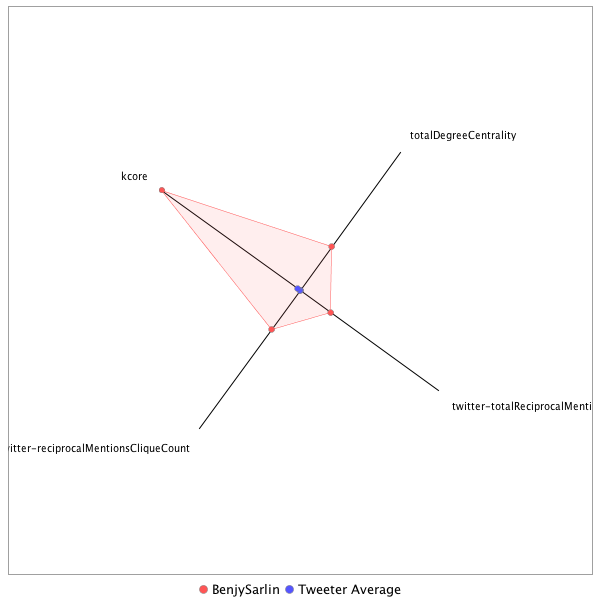

This tweeter has been identified as a super friend. Its target audience and hashtag and word usage are analyzed below.
Basic Statistics
Number of direct followers 73487 The peak number of followers that the tweeter had during any time period. Number of retweeters 158 Number of agents that retweeted the key influencer. Number of secondary followers 30596472 The sum of the followers of those who retweeted the key influencer.
Measure Values of Super Friends node versus Tweeter Average
This compares the measure values of the key influencer with the average values across all tweeters. For each measure line, the center-point means zero and the end-point means the maximum score across all tweeters.

Where was the influencer?
The agent is not recorded as being in any locations. Either he tweeted without geo-tags or we have no information about the tweets he sent.
The agent and retweeters were in 30 different locations.

What hashtags did the influencer use?
This displays the top ranked hashtags that the influencer and its retweeters used.
Rank hashtag Count 1 AHCA 832 2 pharma 593 3 TrumpCare 452 4 Obamacare 385 5 biotech 383 6 FDA 367 7 Comey 353 8 mtal 351 9 ACA 349 10 BREAKING 339 11 GA06 308 12 NIH 233 13 Russia 205 14 ParisAgreement 199 15 drugprices 176 16 Qatar 171 17 VAGov 161 18 Trump 145 19 ComeyHearing 135 20 healthcare 132 21 SCOTUS 120 22 Hardball 115 23 Manchester 114 24 TrumpBudget 114 25 ge2017 107 26 Iran 105 27 CDC 92 28 drugpricing 88 29 ComeyFiring 86 30 Medicaid 86 31 Opioids 82 32 MTpol 81 33 omnibus 80 34 TheBachelorette 74 35 covfefe 72 36 ksleg 72 37 CR 71 38 FF 71 39 ISIS 71 40 ComeyDay 70 41 txlege 68 42 science 66 43 Nats 63 44 climate 63 45 MTPDaily 60 46 ParisAccord 60 47 ComeyTestimony 59 48 Saudi 59 49 climatechange 59 50 Syria 58 51 CongressionalBaseballGame 57 52 LondonBridge 57 53 Ebola 56 54 ThisWeek 56 55 FTN 54 56 opioid 54 57 trumprussia 52 58 PDUFA 51 59 SC05 51 60 MemorialDay 50 61 HHS 49 62 tcot 46 63 FarewellOldChum 45 64 MTP 45 65 Israel 44 66 MOLeg 40 67 TBT 39 68 biosimilars 39 69 CNNsotu 37 70 sallyyates 37 71 yemen 36 72 Caps 35 73 travelban 34 74 CAPIdeas 33 75 fakenews 33 76 NotTheComeyHearing 32 77 ODAC 32 78 Paris 32 79 US 32 80 Zika 32 81 FBI 31 82 PPLSummit 31 83 biosimilar 31 84 NBAFinals 30 85 snl 30 86 FOIA 29 87 ShameonNBC 29 88 gapol 29 89 CBO 28 90 Da 28 91 GrenfellTower 28 92 London 28 93 FDARA 27 94 Russiaprobe 27 95 bdcnews 27 96 infrastructureweek 27 97 BoroughMarket 26 98 FBIDirector 26 99 SessionsHearing 26 100 s 26
Tweet List
This displays all of the tweets of the influencer ordered from earliest to latest. Click on a tweet to see its status in Twitter.
Number Tweet ID Date Message 1 859438035804573696 2017-05-02 12:02:49-04 Did same at CIA speech and ran a campaign ad yesterday with a uniformed officer. We're just taking for granted this barrier disappearing. https://t.co/r9kPY9e1V3 2 861997531114471424 2017-05-09 13:33:21-04 Sen. Portman (R-OH) mentioned he participated in a meeting only with senators from Medicaid expansion states in addition to working group 3 861969649059201024 2017-05-09 11:42:33-04 If you count the Freedom Caucus as a party...sure? https://t.co/IJPai8uunq 4 859468931546984448 2017-05-02 14:05:36-04 Trump is still bragging about his electoral college win in May! https://t.co/HCH50OIxnX 5 863008897623314432 2017-05-12 08:32:09-04 Funny thing about revealing a secret White House taping system is it can be subpoenaed. https://t.co/9D3lZMULOy 6 862123713315172352 2017-05-09 21:54:45-04 This is a recurring tweet, but not hard to imagine how this story would read to us if it were taking place in another country 7 860483785963565056 2017-05-05 09:18:16-04 This is a very different statement than Price's claim "nobody will be worse off financially" at start of legislative process https://t.co/bQaClgfkqG 8 860483522301132800 2017-05-05 09:17:13-04 Tom Price asked on Fox about AHCA raising older people's premiums: "Someone is going to pay for coverage for the American people." https://t.co/f8ywTtStbu 9 859396953519661056 2017-05-02 09:19:35-04 If there's one thing I've gotten right about Trump it's that he'd angrily demand an end to the filibuster within months of taking office https://t.co/snHl7yynfP 10 864553986069868545 2017-05-16 14:51:47-04 There are a lot of amazing grafs in this @maggieNYT @GlennThrush piece, but this kicker is pretty wild https://t.co/aB1Wuoi5F2 https://t.co/nj05CeMuPX 11 864293927440003072 2017-05-15 21:38:24-04 Stopped by r/the_donald, looks like they have this under control https://t.co/2jj1OCBnNB 12 864678230053269504 2017-05-16 23:05:29-04 That escalated REALLY quickly https://t.co/LyIEvpWwCQ 13 860165293502590976 2017-05-04 12:12:41-04 Graham on AHCA. He's also argued Democrats should be involved in process. But again, words do not always equal votes. https://t.co/eTlo9eBz2x 14 863036181466025985 2017-05-12 10:20:34-04 This came up more than just about any other point when I was talking to historians about his first 100 days https://t.co/IgLWfTRfb8 15 865655422362963970 2017-05-19 15:48:30-04 How many disastrous stories are coming out of this one single Russia meeting? It's like they opened the ark. https://t.co/w635mGzhNr 16 866807400594116609 2017-05-22 20:06:03-04 This is a giant "woah if true," the Nixon smoking gun tape is about trying to enlist the CIA to shut down an FBI investigation https://t.co/fGjtsIZaCB 17 865304014258413568 2017-05-18 16:32:08-04 Trump is going back to laundering the firing through Rosenstein, said Comey's testimony prompted the DAG's memo https://t.co/vUAaiAoWpu 18 865225715784044544 2017-05-18 11:21:00-04 Well, if you're getting texts from the only person who can unilaterally pardon you telling you to "stay strong".... https://t.co/vMdg77dUJc 19 865180046683779072 2017-05-18 08:19:32-04 If the FBI publicly announced there was an investigation into it and then DOJ appointed a special counsel, yeah, probably https://t.co/b7nAwedYSk 20 865018306511687680 2017-05-17 21:36:50-04 This too seems bad https://t.co/xvZrHEFizn 21 864889632621723648 2017-05-17 13:05:31-04 Again, using the standard of action rather than words, there are some real cracks in the GOP wall around Trump that were not there before. 22 867535679697412096 2017-05-24 20:19:58-04 The audio could not be worse. It's genuinely shocking. Also @Bencjacobs is a great professional reporter. https://t.co/Bo065h02FS 23 867540892126760960 2017-05-24 20:40:41-04 These are photos of John McCain and Mark Warner I took last week. It's NORMAL to have a phone "in your face" as a politician. https://t.co/BPJoeFWaCJ 24 867453872641634306 2017-05-24 14:54:54-04 waiting for cbo like https://t.co/TccoNKCX9o 25 867538941775421440 2017-05-24 20:32:56-04 . @Bencjacobs covered the Baltimore riots and the melee at the Chicago Trump rally but got assaulted calmly asking a budget question 26 868852594055290881 2017-05-28 11:32:55-04 Hi, your press office keeps putting out statements with no names attached, even for innocuous questions. Could you tell them to stop? https://t.co/rn0okmlkSo 27 867520698004234240 2017-05-24 19:20:26-04 I've traveled with @Bencjacobs all over the country covering politicians of all stripes. If he says this happened, it's a big deal. 28 867754557413130240 2017-05-25 10:49:43-04 ACA would be struggling in places if Hillary won too, but it's an objective fact WH is making it worse. That is muddying criticism of ACA. 29 867773063806541824 2017-05-25 12:03:15-04 The president repeatedly defended and even encouraged violent acts by supporters during the campaign. This isn't exactly a stunner. https://t.co/xY4bjxVUsJ 30 867702685247713280 2017-05-25 07:23:35-04 Just got my first call mistaking me for @Bencjacobs since the Gianforte thing. cc @aseitzwald. 31 867351500011569152 2017-05-24 08:08:06-04 *record scratch* *freeze frame* POPE: Yep that's me. You're probably wondering how I ended up in this situation. https://t.co/7RB3z2ByKL 32 867402379863494656 2017-05-24 11:30:17-04 We've been trying to pin this number down for two days without success. It sounds like even the WH isn't sure. https://t.co/bjziPFRlNO 33 867401805025742848 2017-05-24 11:28:00-04 Wow, this @jameshohmann newsletter is brutal and detailed on the Duterte call https://t.co/uBLqbBaofM 34 874352566678810624 2017-06-12 15:47:51-04 It's a solid headline and I endorse it https://t.co/I7RaGjmyel 35 874286338274721792 2017-06-12 11:24:41-04 Iowa's proposing a bunch of interesting emergency ideas to attract insurers to Obamacare exchange https://t.co/P1sV9THqkx 36 874809659005206528 2017-06-13 22:04:10-04 This truly rivals "Democrats will love us for firing Comey!" in anti-logic https://t.co/PfEglPHM5G https://t.co/jQj1wTE1SV 37 874644362390634496 2017-06-13 11:07:20-04 Kasich is not a Senator but he's *the* face of moderate GOP opposition to Medicaid cuts. Something really could pass soon. https://t.co/csTwEycbYi 38 872655128720887808 2017-06-07 23:22:50-04 Funny how the prospect of legal consequences suddenly jog one's memory of what happened https://t.co/nNniSpiJIg 39 874634132269281281 2017-06-13 10:26:41-04 Huh, including troubled Kansas, Missouri, Ohio markets https://t.co/I3BlS8Gn0F 40 874701053953966081 2017-06-13 14:52:37-04 Link here: https://t.co/VJJFoYUO8Q https://t.co/0InOaUFmM6 41 875165897878634498 2017-06-14 21:39:44-04 Mueller hasn't said a single word about anything but sure feels like the groundwork is being laid to defend his firing if needed https://t.co/LRDGc0my92 42 874704687022436353 2017-06-13 15:07:03-04 Yep, it's the moment the last few holdouts can put in their big ask https://t.co/JhkQDJ6p3u 43 874662236052213760 2017-06-13 12:18:22-04 When you tweet at us "Well why don't you ask them about THIS?" we really do ask them. This is how that happens from hour to hour. https://t.co/XbGrN07hi6 44 874660455255613441 2017-06-13 12:11:17-04 Skipping hearings, body slamming a reporter, restricting cameras is usually not a sign of confidence in the popular appeal of one's agenda 45 874328466849771525 2017-06-12 14:12:05-04 There doesn't seem to be any stated rationale as to why the WH can't answer this simple question after a month https://t.co/fWw5ho0gSI 46 874291477970640896 2017-06-12 11:45:06-04 This is a vote that's supposed to happen as early as this month. We have no idea what's in it beyond the vaguest leaks. https://t.co/PIV9GhkM3Y 47 872820049421062144 2017-06-08 10:18:10-04 Comey on the split screen https://t.co/NzyxaEjTjV 48 874304660613603331 2017-06-12 12:37:29-04 Judge demonstrates their belief in the power of rehabilitation for violent convicted criminals https://t.co/TIHzmCQdYy 49 875170549542027264 2017-06-14 21:58:13-04 RT @EsotericCD: There are myriad stupid hottakes to the Alexandria attack on the Republicans. This is a good, sober, portentous one: https:… 50 875122834175135745 2017-06-14 18:48:37-04 Also I guess this plan is taking some time to kick in https://t.co/V922PnGZA6 51 875122597440217088 2017-06-14 18:47:40-04 Add to the own-goal list: We now know via Comey the president was NOT under investigation when he was fired. But via his actions.... https://t.co/tEJLyakurs 52 875115944359677952 2017-06-14 18:21:14-04 RT @BraddJaffy: Qatar Signs $12 Billion Deal for U.S. F-15 Jets https://t.co/A05Qzh4s87 https://t.co/VygmhIk7AA 53 875057327220690948 2017-06-14 14:28:19-04 Overheard in the Senate: Reporter explaining the concept of a baseball pitcher to their foreign editor 54 875049294914625538 2017-06-14 13:56:24-04 @KToropin We'd be remiss not to look at them after a shooting where alleged gunman targeted politicians and asked their party affiliation 55 875048345693192192 2017-06-14 13:52:37-04 A little on how Congress is protected and some of the concerns members are bringing up today https://t.co/xxqlDrvbKD 56 875043424235393024 2017-06-14 13:33:04-04 Early reports of the gunman's personal and social media history sound like the worst parts of 2017-era America condensed into human form 57 875041699864686592 2017-06-14 13:26:13-04 RT @sahilkapur: Here is @SpeakerRyan’s full House floor statement on the shooting. It’s worth a read. https://t.co/EN5Y3t5cYI 58 875030594832478213 2017-06-14 12:42:05-04 RT @aseitzwald: Bernie Sanders statement on Alexandria shooting (gunman allegedly volunteered for his campaign). https://t.co/T7vXWV1jEg 59 875024068470296580 2017-06-14 12:16:09-04 . @RepAlGreen, who has received racist death threats recently, says he wants House to look at adding protection for staff in districts 60 875023340234313730 2017-06-14 12:13:16-04 . @RepMeehan pauses to collect himself telling reporters how much the "camaraderie" of morning baseball means to members 61 875021219539689474 2017-06-14 12:04:50-04 . @RepRubenGallego just came out of meeting, said members raised security concerns. "Everyone's getting a bunch of death threats right now." 62 875018583151177728 2017-06-14 11:54:21-04 RT @mitchellreports: .@RepMcSally says cheers went up at House members briefing when told tomorrow night's annual bipartisan baseball game… 63 875012645975445505 2017-06-14 11:30:46-04 House is meeting at Capitol Visitor Center which ironically was built to provide extra security layer after 98 shooting of two USCP officers 64 875011437525159939 2017-06-14 11:25:58-04 Rep Joe Barton addressing press at Capitol still in baseball uniform from the shooting https://t.co/ICKDve3JYi 65 874816476082995203 2017-06-13 22:31:15-04 RT @juliaturner: "Let's be careful not to trip Orrin Hatch." V. smart @jim_newell on the battle over press access on Capitol Hill: https://… 66 874813637864681472 2017-06-13 22:19:59-04 @anamariecox https://t.co/Mng1yTR52g 67 874807821187108864 2017-06-13 21:56:52-04 @EsotericCD Clearly non-bubble America has some interest in the Civil War based on the results 68 874807502269018116 2017-06-13 21:55:36-04 Well, he can comfort himself in the thought a cult might form over 150 years dedicated to celebrating an inaccurate version of his platform https://t.co/DEmBmjMhxS 69 874806618499813376 2017-06-13 21:52:05-04 @EsotericCD That speaks well of Twitter more than anything else 70 874800177437134850 2017-06-13 21:26:29-04 So if Ed Gillespie holds on he'll have been on both sides of a historic near-upset in just two runs for office. 71 874732963971428355 2017-06-13 16:59:25-04 Who could have seen this coming https://t.co/Eavks9u3jh https://t.co/QXz88SkwU8 72 874727175123079170 2017-06-13 16:36:24-04 Trump attacked Russia probe pre-firing, cited in letter announcing it, in Lester interview, to Russian officials -- but yknow, how dare you https://t.co/gtMGjUjiJ7 73 874726856905428993 2017-06-13 16:35:08-04 A lot of this indignation seems to exist in world where Trump didn't bring up Russia over and over, publicly and privately, re: Comey firing 74 874725988562853889 2017-06-13 16:31:41-04 So he held a Rose Garden ceremony for a mean bill? https://t.co/9OAiLlekZf 75 874719228208787456 2017-06-13 16:04:50-04 @CaptainPAYGO Yep big difference on assumptions on Medicaid starting point and cuts 76 874716089518878721 2017-06-13 15:52:21-04 The president's cabinet and aides sure seem slow to ask the president whether he's taping people a full month after that Comey tweet 77 874708968102297603 2017-06-13 15:24:03-04 RT @Hadas_Gold: NEWS: Shelby spox says 'reporters should continue to operate as they were operating yesterday’ while rules cmtte reviews ru… 78 874702978887946244 2017-06-13 15:00:16-04 @BillNemacheck Customers. AHCA allows for higher deductibles/fewer items covered/less subsidies for out-of-pocket costs for low income individuals. 79 874700993937723392 2017-06-13 14:52:22-04 CMS actuary reviews AHCA: -13m fewer insured -5% net premium increase (including lower subsidies) -$221b increase in out of pocket costs 80 874698174979506176 2017-06-13 14:41:10-04 I'm free to ask the statues in the hall too, but we're not getting much information from either on what's in the bill https://t.co/CmtWa2LGHW 81 874695039775059968 2017-06-13 14:28:43-04 Trump also played up his willingness to raise his own taxes only to propose major tax cuts instead. This is just the latest reversal. https://t.co/aUTGa76OFe 82 874694277665869825 2017-06-13 14:25:41-04 Surprise! https://t.co/aUTGa76OFe 83 874689005383802881 2017-06-13 14:04:44-04 RT @LACaldwellDC: .@senrobportman was asked if @realDonaldTrump healed differences on health care. Portman said "that wasn't the purpose of… 84 874688999314665473 2017-06-13 14:04:43-04 RT @LACaldwellDC: When asked if they would have a bill for cbo by the end the week, @OrrinHatch said with a laugh "I don't think so." 85 874685295668736001 2017-06-13 13:50:00-04 @ybbkaren @Bencjacobs @kasie We're still trying to figure out 86 874674693403541504 2017-06-13 13:07:52-04 . @amyklobuchar tells press Rules chair @SenShelby just assured her no changes to media access would go forward without consulting her first 87 874665010353582080 2017-06-13 12:29:23-04 @Bencjacobs @CharlesPPierce It's one of the ironies of politics that his staff has among the best reputations with the press 88 874662557713399808 2017-06-13 12:19:38-04 RT @kasie: --> https://t.co/MXRCnwZ6K9 89 874662014680956938 2017-06-13 12:17:29-04 I understand press complaints on process sound whiny. But the prime issue is whether we can ask q's on public's behalf. 90 874661167339327488 2017-06-13 12:14:07-04 This isn't a case of "We'll get our message directly to the people!" It's "We won't tell you what's happening and don't ask us." https://t.co/oreFBdz21x 91 874656517928124416 2017-06-13 11:55:38-04 If you know people in long-term care for aging or disability, odds are good you know someone on Medicaid. https://t.co/SKZJeyfAUc 92 874651633929650180 2017-06-13 11:36:14-04 Can't help but notice this comes as Congress is crafting major legislation behind closed doors without the usual public process there either https://t.co/XutcMJPLj4 93 874645651585466369 2017-06-13 11:12:28-04 Some additional context from Kasich's ally @JWGOP. Still, those quotes don't sound like rallying opposition. https://t.co/jZst8wCMcV 94 874611488534777856 2017-06-13 08:56:43-04 RT @CarrieNBCNews: In @NBCFirstRead: He says it's 'phony' & a 'hoax,' so why is Trump acting so spooked by the Russia probe? https://t.co… 95 874477032566132736 2017-06-13 00:02:26-04 And he's like the third place Finals MVP https://t.co/6acQfjPwTW 96 874472416948494336 2017-06-12 23:44:05-04 No one should be able to beat the Cavs with Lebron, Kyrie, AND JR going off. This team is ridiculous. 97 874462197291855873 2017-06-12 23:03:29-04 Well, probably true for the music at least. But I can't wait to read @daveweigel's new book on prog rock https://t.co/JtCGYZ6yws https://t.co/zAHdvXvrq8 98 874401944646950912 2017-06-12 19:04:03-04 @pkcapitol @daveweigel I see the sign for the party but no one's there yet https://t.co/vuHWVhBFxR 99 874399652078080001 2017-06-12 18:54:57-04 RT @LACaldwellDC: A Republican source told me "why would they tell us what's in the bill?" https://t.co/EuPKalxs63 100 874333286188949505 2017-06-12 14:31:14-04 @b_fung [closes twitter pursued by bear] 101 874332974480842752 2017-06-12 14:30:00-04 It's almost as if all the world's a stage and all the men and women merely players https://t.co/ZNDXBgVTwi 102 874331952857448450 2017-06-12 14:25:56-04 @NickRiccardi @politicalmath The popular successor to "This will be the end of Trump" tweets 103 874330782273339392 2017-06-12 14:21:17-04 This too is a good bet https://t.co/ulz4FQnXFG 104 874328979892785152 2017-06-12 14:14:07-04 This isn't actually a bad guess, recall that he used his birther presser during the campaign as essentially a long trolling exercise https://t.co/OkCu1jVijr 105 874321886519361537 2017-06-12 13:45:56-04 I wonder how many D's will sign on to this idea by midterms https://t.co/mzc6aICC28 106 874315708708016128 2017-06-12 13:21:23-04 RT @marincogan: This is a great statement from @Bencjacobs https://t.co/04t8h8tz7L 107 874301631940243457 2017-06-12 12:25:27-04 RT @aseitzwald: Reminder that his spokesperson initially said @Bencjacobs started it. https://t.co/PadXxyhlyI 108 874286872331247617 2017-06-12 11:26:48-04 This is more what an ACA "fix" debate looks like -- ideas like, say, guarding insurers against high-cost patients https://t.co/P1sV9THqkx 109 874270168914026496 2017-06-12 10:20:26-04 RT @BraddJaffy: Newt gonna Newt https://t.co/ygChebyhjY 110 873045149940555780 2017-06-09 01:12:38-04 @Bencjacobs @kumailn I was waiting for this team-up in my feed 111 872930059484446720 2017-06-08 17:35:19-04 Look, you can't truly wield the orb with a normal hand https://t.co/0CQc6usyxI 112 872912888419176448 2017-06-08 16:27:05-04 @aseitzwald @NBCNews I read this as "awful waffle" 113 872912594268323840 2017-06-08 16:25:55-04 RT @aseitzwald: So is it obstruction? Experts say Trump’s Comey firing is "possibly lawful, but awful." https://t.co/6hhNrfvUTM 114 872854942804983808 2017-06-08 12:36:49-04 @JosephPatrice @daveweigel Is anyone suggesting there's a legal barrier to him making that info public? 115 872854440457285632 2017-06-08 12:34:50-04 When there's basically one federal election serving as proxy for the whole opposition until 2018 you get some insane numbers https://t.co/TVQ14lNXC1 116 872852675464908800 2017-06-08 12:27:49-04 This is dishonest, he didn't release anything classified or break any "rules" about passing your personal notes to the NYT. https://t.co/KDjZTYAA7s 117 872849573219188737 2017-06-08 12:15:29-04 There is some relevant stuff in this hearing. But the Obama administration is also on a beach sipping Mai Thais, not facing voters and FBI. https://t.co/0RmQ6vkjCl 118 872847748956954624 2017-06-08 12:08:14-04 Also weird: We take for granted a president whose tweets seem to have *directly created* this situation will not realize he should stop https://t.co/o3iVdf7BnQ 119 872846406767198208 2017-06-08 12:02:54-04 We take for granted the typical spin that Trump doesn't know how the presidency, rule of law, and American democracy works -- but it's weird https://t.co/lc69B3SIPj 120 872844529631502340 2017-06-08 11:55:27-04 Lankford getting some solid stuff on Lynch trying to tiptoe around word "investigation" with Clinton emails 121 872842118057689090 2017-06-08 11:45:52-04 Sen. Paul Newman (R-Perdition) is good at these hearings 122 872841072879181826 2017-06-08 11:41:43-04 I get the annoyance, at leaking something instead of saying it outright -- but he's saying it right now, under oath, in extensive testimony 123 872839832573292544 2017-06-08 11:36:47-04 In a less damaging scenario, it's possible this is the underlying violation -- just more blatant (and uncovered in real time) than most https://t.co/Rh189pNOsr 124 872837693503184897 2017-06-08 11:28:17-04 That tweet may have directly summoned Special Counsel Robert Mueller. Just an astounding own-goal. https://t.co/3ye6sRw62v 125 872835767814443010 2017-06-08 11:20:38-04 One running theme: Sessions does not come off well at various points in Comey's version of events. 126 872834022388285440 2017-06-08 11:13:42-04 Comey is leaving more sequel teasers than the credits of an Avengers movie. Sessions had reason to recuse he can't publicly discuss? 127 872830882544926720 2017-06-08 11:01:13-04 It's like Rihanna sitting courtside at the all star game, everyone's there https://t.co/4Mlk9Dq8gR 128 872827555727855616 2017-06-08 10:48:00-04 Saving them for Season 2, it's a whole arc https://t.co/i81Th4PSg7 129 872211890486870016 2017-06-06 18:01:34-04 This all looks right. Despite the pessimistic statements from members, I think there's a very realistic 50 vote path. https://t.co/89ib86Er26 130 870636555798552577 2017-06-02 09:41:45-04 Meanwhile, Russia news keeps drip drip dripping https://t.co/7B41OIWUph 131 872553024060887042 2017-06-07 16:37:06-04 The essential @benjaminwittes on the Comey testimony https://t.co/orxgZJpVqP 132 872540455413710849 2017-06-07 15:47:10-04 I missed a step between reports of Comey's interactions being so huge they demanded a special counsel and him confirming them being "meh" 133 872537132572790785 2017-06-07 15:33:58-04 The scene I keep thinking of is Leo DiCaprio in Wolf of Wall Street inviting the FBI to his yacht to clear up any misunderstandings. 134 872504951959932932 2017-06-07 13:26:05-04 @jesseberney this is your best tweet 135 872454427235540992 2017-06-07 10:05:19-04 @daveweigel Is Mattis or McMaster Colonel Tigh in this scenario 136 872451753848995840 2017-06-07 09:54:42-04 I'd say #ThisTown but they beat me to it https://t.co/utZ5o6ONuq 137 872439675524448257 2017-06-07 09:06:42-04 Welcome, Congressman Gianforte! https://t.co/pb4d5yDCVu 138 872439266571321344 2017-06-07 09:05:04-04 RT @abbydphillip: GOP says Obamacare is collapsing, but it's partly b/c of AHCA uncertainty. Some in the admin want to do more to help http… 139 872437801077395458 2017-06-07 08:59:15-04 @dylanlscott you're welcome https://t.co/Sp1utY26nZ 140 872432413384876032 2017-06-07 08:37:51-04 RT @Hadas_Gold: .@PeterAlexander notes Wray announcement comes w/o official release, fact sheet, etc.., leading q’s as to whether WH staff… 141 872219344775860225 2017-06-06 18:31:11-04 Solar-paneled border wall pretty consistent with government philosophy based on owning libs BY YOUR OWN LOGIC 142 872217343497306112 2017-06-06 18:23:14-04 Which means key provisions like waiving essential health benefits aren't out of the woods yet https://t.co/pMv5zSSQTx 143 872217230267863040 2017-06-06 18:22:47-04 So my understanding is reconciliation news does not mean individual parts can't be stripped later, just that overall bill can proceed. 144 872215209158561793 2017-06-06 18:14:45-04 There are fights over the amount you fund various elements, but it's harder to vote against a major bill over $$$ numbers vs core pieces https://t.co/VkYjEsk8Q1 145 872214779934519296 2017-06-06 18:13:03-04 The case for Senate passing health care: There are few obvious debates over basic structure of the bill. Auto-enroll is the closest to one. 146 872213359927721985 2017-06-06 18:07:24-04 This is the crisis whose response Trump appeared to endorse on Twitter this AM https://t.co/cQxYNXC3MN 147 872211234078302208 2017-06-06 17:58:57-04 @chrislhayes Believe that's what they're referring to, but double checking 148 872209628486041600 2017-06-06 17:52:34-04 More big health care news https://t.co/RGI1buK0yC 149 872183535192477696 2017-06-06 16:08:53-04 Even with strong evidence of no impact on votes, attempt itself helps Russia disrupt democracy. Likely to spawn endless conspiracy theories. https://t.co/FXtoeAMMQL 150 872176246838484992 2017-06-06 15:39:56-04 This would explain why Cassidy is suddenly upbeat. The biggest policy change that would push a bill closer toward his position. https://t.co/JkD0miO55Z 151 872172895597940736 2017-06-06 15:26:37-04 This is yet again one of those afternoons with at least a half-dozen stories going on that would dominate for days in any other time 152 872166125056004096 2017-06-06 14:59:42-04 @TanaGaneva You shouldn't take it as gospel, but it also dovetails with what outside analysts and experts (including CBO) have been saying 153 872165680929538049 2017-06-06 14:57:57-04 That's quite a headline https://t.co/W0By2BMtZc https://t.co/KNXoYUqiI2 154 872162338983510016 2017-06-06 14:44:40-04 @AndrewHClark @WSJ It's partly Trump-fueled trend. This would be problem had Clinton won, but insurers and analysts are clear on CSR factor 155 872153107316318210 2017-06-06 14:07:59-04 One reason it's tough for GOP to win a fight over insurer sabotage: Trump basically recited the whole plan out loud https://t.co/4k8sZZZw2R https://t.co/gU0drW9EE8 156 872149944139993090 2017-06-06 13:55:25-04 @ComradeArthur Which is fine if they can explain why they think encouraging insurers to pull out will lead to the best result 157 872149616212488192 2017-06-06 13:54:06-04 @ComradeArthur Yes, "Don't do anything to calm insurance markets because it helps Obamacare" is the argument that leads to sabotage 158 872149038279401472 2017-06-06 13:51:49-04 Hmm, not sure where stunned silence fits on the chart https://t.co/5tZekkIVeU https://t.co/rUySFkzEvI 159 872147166302806017 2017-06-06 13:44:22-04 @ComradeArthur @NBCNews They're welcome to appropriate it and end entire legal issue. Assumption WH would pay CSR was key to spending deal. 160 872146509353160704 2017-06-06 13:41:46-04 The uncertainty issue from WH/Congress they cited in Ohio could easily apply elsewhere. Imagine a midterm with this going on in background. https://t.co/tMfDQgKHMF 161 872145048602914818 2017-06-06 13:35:57-04 RT @samanthann: If Anthem were to leave Missouri, 72 counties would be without a carrier on exchange. That's on top of 25 bare counties wit… 162 872145041233465344 2017-06-06 13:35:56-04 RT @samanthann: Just got off the phone with Anthem regarding exchange participation. They're still deciding on whether to stay or go in Mis… 163 872144292592197633 2017-06-06 13:32:57-04 That's usually how it goes, there's also not much goodwill built up in polls right now for WH/GOP perspective on health care https://t.co/abGGBlAm8U 164 872143513995153410 2017-06-06 13:29:52-04 Maybe D's get blame. Or maybe rural counties with zero insurers for individual market demand action amid a daily GOP circular firing squad. 165 872143008162074626 2017-06-06 13:27:51-04 But if they have to consider a short term fix, that could be just as divisive as repeal -- and no one knows what Trump would be demanding. 166 872142628837621761 2017-06-06 13:26:20-04 Plausible: Senate decides no health deal, moves to taxes, finds self-inflicted insurance collapse forces them back https://t.co/DZce5VmxE4 167 872141318599970816 2017-06-06 13:21:08-04 RT @daveweigel: One irony of 2009 v 2017: If you make no effort to bring the other party in on legislation, no stories about failed biparti… 168 872140836565377024 2017-06-06 13:19:13-04 If Cassidy folds on previously strong pro-coverage stance, that would make passage dramatically more likely. He'll face a lot of pressure. https://t.co/wjIYHDWVpj 169 872137969444024320 2017-06-06 13:07:50-04 In general, we're getting to point of no return on insurance chaos, partly due to sabotage. Then comes blame game: https://t.co/DZce5VmxE4 https://t.co/8eCIseWzGz 170 872136843667677184 2017-06-06 13:03:21-04 Major insurer pulls out of Ohio, yet again cites Trump refusal to guarantee payments owed for cost sharing benefit https://t.co/MmUW9GSwVK 171 872135179447488512 2017-06-06 12:56:44-04 RT @sangerkatz: Most states with uncompetitive Obamacare markets were uncompetitive before Obamacare, too. https://t.co/qnDoIkGlix @haeyoun… 172 872100194627833856 2017-06-06 10:37:43-04 RT @jrovner: interesting idea. but unless it fits under a 1332 waiver, Congress would have to change Medicaid law to let this happen. https… 173 872098905286221824 2017-06-06 10:32:36-04 RT @DLind: Trump's staff want you to see him as a head of state, not a head of government. But he's v much both. https://t.co/IcyAbtSn8f 174 872097251140788224 2017-06-06 10:26:02-04 Another day where the world has to confirm whether the president's position is the government's position and vice versa https://t.co/ikaSm2sVdl 175 872092068121911296 2017-06-06 10:05:26-04 But Trump praised Mubarak's exit when it happened. Why his 2016 positions told us so little. https://t.co/dAsINT7sNb https://t.co/1E4dF7hhg9 176 872085441117290496 2017-06-06 09:39:06-04 So it sounds like a nuanced approach based on a deep understanding of the subtle political and religious tensions of the region https://t.co/YsFTiHsPmS 177 872084018728247296 2017-06-06 09:33:27-04 Trump's tweets seem to have zero vetting lately and he's poking at a regional crisis in a country where we have a military base. Hmmm. 178 872082858579562496 2017-06-06 09:28:50-04 RT @Joyce_Karam: #Trump takes a shot at #Qatar in recent Gulf spat. Both State and Defense Depts so far stayed neutral https://t.co/F6Iextj… 179 872054382979719168 2017-06-06 07:35:41-04 This is a good piece https://t.co/C8vHcFpJiq 180 871914838448119810 2017-06-05 22:21:11-04 Bonus points: My old New York Sun mentor @gracerauh won for TV reporting in the same category! cc @davelombino https://t.co/kifgxCwJFr 181 871913253529681921 2017-06-05 22:14:53-04 Picked up a New York Press Club award for "United States of Trump" with @LACaldwellDC tonight. Thanks for reading, tweeps! https://t.co/qEO6Mrfjlm 182 871862442955087872 2017-06-05 18:52:59-04 RT @elizacollins1: Welp, @POTUS' campaign arm is now fundraising off how the administration is "FIGHTING for the Travel Ban." https://t.co/… 183 871862091942121473 2017-06-05 18:51:35-04 Is Reality Winner a @GreatDismal character or something? 184 871859384674078720 2017-06-05 18:40:50-04 RT @rachelweinerwp: What happens when you join the Islamic State -- and then change your mind https://t.co/1Ow9JhAGev 185 871855235358236673 2017-06-05 18:24:21-04 Sure are a lot of quotes like this going around lately https://t.co/QcsVhe6fi5 186 871784338375008256 2017-06-05 13:42:37-04 This is just like the campaign: Allies air complaints publicly when no one can reach him privately https://t.co/eWE5WgajnJ 187 871776839844450304 2017-06-05 13:12:50-04 @brianbeutler @maggieNYT Roger Stone's public reason for leaving was also disagreement over Megyn Kelly feud (even HE thought it was bad) 188 871776413250199552 2017-06-05 13:11:08-04 @brianbeutler @maggieNYT @sbg1 Favorite example: The taco bowl tweet https://t.co/qcj5g1HPi5 189 871775744183193600 2017-06-05 13:08:28-04 RT @maggieNYT: This incredible @sbg1 scoop gets at key point of this WH - plenty of ppl tell Trump "no." He often doesn't listen https://t.… 190 871735602982658048 2017-06-05 10:28:58-04 @geoffreyvs @AlexParkerDC @FiveThirtyEight But I do think it's more complicated mainly because there's evidence supporting both causes and they can be expressed by the same people 191 871735488486551552 2017-06-05 10:28:31-04 @geoffreyvs @AlexParkerDC @FiveThirtyEight Right overwhelming evidence there too and I'm US history makes clear that type of resentment is not just misdirected economic anxiety 192 871734958695567360 2017-06-05 10:26:24-04 @AlexParkerDC @geoffreyvs @FiveThirtyEight Obviously it's not the ONLY factor, but it's way more complicated than just "It was cultural" versus "It was economic" 193 871734690377592836 2017-06-05 10:25:20-04 @AlexParkerDC @geoffreyvs @FiveThirtyEight But it seems the opposite: Lots of middle class people living in places where there are signs of serious decline/stagnation 194 871734567362867201 2017-06-05 10:24:51-04 @AlexParkerDC @geoffreyvs @FiveThirtyEight Yeah I've seen similar income data constantly misused to dismiss the idea there was any economic factor at play 195 871731612458901504 2017-06-05 10:13:07-04 @geoffreyvs @FiveThirtyEight ...and very often they'd say "No my contracting business is actually thriving" even if they were worried about changes in the area 196 871731433727033344 2017-06-05 10:12:24-04 @geoffreyvs @FiveThirtyEight Anecdotally, one thing I asked people a lot on the trail was whether they're personally struggling.... 197 871729983819067393 2017-06-05 10:06:38-04 @geoffreyvs That was our main finding from analyzing his primary performance by county too (we couldn't identify income then). https://t.co/P6unZvR4yj 198 871725100760014848 2017-06-05 09:47:14-04 RT @PhilipRucker: No. He said six months ago that Woody Johnson would be his pick, but hasn't nominated him yet. https://t.co/FvCkcDtWcA 199 871721833027993600 2017-06-05 09:34:15-04 The daily game of CSI: The President's Tweets https://t.co/q39wml1Tpu 200 871711931660472320 2017-06-05 08:54:54-04 To repeat the obvious, a WH contradicting itself and burning credibility becomes far more dangerous in a crisis https://t.co/qAK88jSBsI 201 871704509218775041 2017-06-05 08:25:25-04 RT @BraddJaffy: The Associated Press on the President of the United States https://t.co/fHz1tZNimp https://t.co/y9VxdRPzDX 202 871698218358370304 2017-06-05 08:00:25-04 Nobody speaks for the president now extends to the president himself apparently? https://t.co/qtvpK8DBbD 203 871697493444239361 2017-06-05 07:57:32-04 A well established pattern https://t.co/PBXBvjmYaP https://t.co/y4BIQ47TKT 204 871516133085597696 2017-06-04 19:56:52-04 Putin always sounds like a Die Hard villain giving the "Oh, you moralizing Americans" monologue to John McClane at the end https://t.co/EPALAl3iUL 205 871368403793084417 2017-06-04 10:09:51-04 Meanwhile the White House social media director is settling campaign scores with the Mayor of London https://t.co/7n8T7ZULpX 206 871363635637100546 2017-06-04 09:50:54-04 This is, of course, a major reason Trump won the primaries: He'd say things no one else in GOP would. https://t.co/ivgK30XJar 207 871363314500161538 2017-06-04 09:49:37-04 During the campaign, elected Republicans were never more uncomfortable with Trump than after a terror attack https://t.co/GboArYZ6Xj 208 871359810687684609 2017-06-04 09:35:42-04 Some excerpts from then New York Mayor Rudy Giuliani's famous press conference on 9/11 https://t.co/bjqM9MmHto 209 871106820043100160 2017-06-03 16:50:24-04 RT @maggieNYT: This is objectively not a slush fund. Twitter feed of executive branch is posting falsehood to further a point. https://t.co… 210 871050632928665600 2017-06-03 13:07:08-04 Truly we need more dialogue between people calmly asking questions and people assaulting them while screaming like a madman https://t.co/SL2ZcBbNQV 211 870797941115695104 2017-06-02 20:23:02-04 ....and now the rest of the night is thinking of teams https://t.co/8iDnBynuJi 212 870780719236362240 2017-06-02 19:14:36-04 RT @DJBentley: god bless xkcd https://t.co/9VwqceuYJG https://t.co/jTXNMMiONu 213 870778008566673409 2017-06-02 19:03:50-04 RT @ParkerMolloy: Fox News wants to know why Wonder Woman, a character not from America, isn't as American as they'd like her to be. https:… 214 870773502512685057 2017-06-02 18:45:55-04 RT @CatherineKimNY: Vladimir Putin tells Megyn Kelly that U.S. hackers could have framed Russia https://t.co/9BAY14Ny8x via @nbcnews 215 870770077838315520 2017-06-02 18:32:19-04 @LoganDobson I think about the last week of that election all the time in this regard 216 870770014621769729 2017-06-02 18:32:04-04 RT @LoganDobson: the only thing I know for sure about the next election is that we don't know for sure what the next election will be about… 217 870753171014123520 2017-06-02 17:25:08-04 RT @mviser: Significant: Governor Charlie Baker (a Republican) announces that Massachusetts is joining NY, CA, and NY in the US Climate All… 218 870740805417390080 2017-06-02 16:36:00-04 @lucia_graves Exactly! Which is why I'm rolling my eyes at most of the hysteria talk 219 870740169321828353 2017-06-02 16:33:28-04 @lucia_graves What I mean is I've mostly heard a pretty nuanced good/bad assessment with plenty of citations 220 870739073375371264 2017-06-02 16:29:07-04 I keep hearing everyone is hysterical, but it's not the tone I've heard from academics who work on climate this week https://t.co/e7g7zcWrqx 221 870738220337831936 2017-06-02 16:25:43-04 @SunsetLament @LPDonovan Absolutely, but then you need to start by determining your stance on the underlying problem 222 870737714915803139 2017-06-02 16:23:43-04 So what's the worst that can happen after Paris? And is it likely? I asked a climate scientist (instead of Twitter) https://t.co/e7g7zcWrqx 223 870736487184306176 2017-06-02 16:18:50-04 @CardJimGibbons @LPDonovan You're getting at something, which is lack of distinction between arguments on whether activists are annoying and whether action is needed 224 870735367909015553 2017-06-02 16:14:23-04 @LPDonovan ...and that this would actually feel fairly unremarkable in the broader circles that support the decision 225 870735265400336384 2017-06-02 16:13:59-04 @LPDonovan I suppose at minimum it's odd a government could stop a policy and not feel obligated to say whether the problem it addresses exists 226 870734611533484035 2017-06-02 16:11:23-04 @LPDonovan On the other side, I see criticism of some specific policies, but mostly a lot of disdain that avoids stating whether there's a problem 227 870734220506931201 2017-06-02 16:09:50-04 @LPDonovan And similarly a raft of scientific papers that aren't written like scripture, but are filled with caveats about what's known and what's not 228 870734070279438337 2017-06-02 16:09:14-04 @LPDonovan Like, I see complaints likening climate science to religion. But then I see a global effort negotiated over decades on policy grounds. 229 870733763189362688 2017-06-02 16:08:01-04 @LPDonovan I feel like it's different than many culture war issues in that one side also largely refuses to take a concrete position 230 870710308217552896 2017-06-02 14:34:49-04 @jesskcoleman Example: Obama was hounded with gay marriage questions after the WH gave weird non-answers despite his clear position in 2008 231 870710158917214211 2017-06-02 14:34:13-04 @jesskcoleman In general, WH's get asked lots of times to reaffirm things said on the campaign in part because they sometimes back down in office 232 870709931954929666 2017-06-02 14:33:19-04 @jesskcoleman It's not about "giving a chance" it's asking what the official policy of the most powerful government on the planet is 233 870709479083433984 2017-06-02 14:31:31-04 @jesskcoleman I don't think "second chance" is what's going on at all 234 870708185891446784 2017-06-02 14:26:23-04 @BCAppelbaum In general, though, if you've said these things and then don't mention any of it in a long speech justifying major action -- then I'd ask 235 870707909851660288 2017-06-02 14:25:17-04 @BCAppelbaum Deliberate naivete's a pretty standard part of the reporter toolbox. But it's also not like coverage isn't referring to those many comments. 236 870707565943857153 2017-06-02 14:23:55-04 I talked to Johnson about his support for a short term bill last week -- Burr seemed to hint at similar today https://t.co/DZce5V4Wfu https://t.co/2bbTTQAljc 237 870706849774845952 2017-06-02 14:21:04-04 @BCAppelbaum I think you're mixing it up. The weird phenomenon in light of this is the WH's response not reporters asking the question. 238 870705777224196096 2017-06-02 14:16:48-04 @elongreen @sethdmichaels That said, the position of the federal government is very vague and slippery right now 239 870705704272711682 2017-06-02 14:16:31-04 @elongreen @sethdmichaels I mean it would be dumb to pretend Trump hasn't called climate science a hoax over and over again 240 870705475003662336 2017-06-02 14:15:36-04 @elongreen @sethdmichaels You'd think so, and yet their stated explanations for that decision are all over the map 241 870703862729981952 2017-06-02 14:09:12-04 @elongreen @sethdmichaels Because it's your government and they owe you answers as to why they took action on an important issue and what they plan to do instead 242 870701490846875649 2017-06-02 13:59:46-04 If WH is concerned CO2 is warming the earth, then what is the policy to address that? If it disagrees, how does that translate to policy? https://t.co/90DytyX1v6 243 870701229730545664 2017-06-02 13:58:44-04 In general, pro/con arguments on Paris are gibberish without knowing the WH's science views. Not "beliefs" but specific concerns and goals. 244 870699755533287424 2017-06-02 13:52:53-04 RT @daveweigel: Most center-right parties agree w/ "the left" on climate change. Even France's National Front. GOP's an outlier. https://t.… 245 870698513360748544 2017-06-02 13:47:57-04 Non-answer allows them to use arguments that otherwise would make no sense: Like Trump citing study suggesting Paris didn't go far enough https://t.co/1oDtHYTmZ4 246 870696193180839937 2017-06-02 13:38:43-04 AHCA's Medicaid cuts and changes split GOP down the middle in KFF poll. Overwhelming opposition everywhere else. https://t.co/TOFgugvnJK 247 870693523179290625 2017-06-02 13:28:07-04 @orvaloriginal @chrislhayes The point is they're separate. We have a stated $2b remaining commitment to the GCF, but there's not a specific amount beyond that 248 870689603560144896 2017-06-02 13:12:32-04 @orvaloriginal @chrislhayes More complicated than that. Here's a rundown I wrote yesterday: https://t.co/Yd0gezbYJP 249 870680986895343616 2017-06-02 12:38:18-04 If I wanted to catch up quickly on the British election, the best stories would be: 250 870678606078369792 2017-06-02 12:28:50-04 @nycsouthpaw @mattdpearce are people unaware this has been her whole approach for like the last decade 251 870677279457906688 2017-06-02 12:23:34-04 RT @elisefoley: A haiku: Today was stupid Tomorrow might be better But probably not 252 870670825711697920 2017-06-02 11:57:55-04 Interesting story, interesting response thread here https://t.co/nchQqCzGVO 253 870666800937226243 2017-06-02 11:41:56-04 “It’s unlikely that we will get a health-care deal" says Sen. Richard Burr (R-NC). Not who I'd expect here. https://t.co/GiFvRClA7T 254 870640701037584384 2017-06-02 09:58:13-04 They're not imagining the politics here, there really would be a flood of Democratic ads along those lines https://t.co/eDW2ErOcLw 255 870639152810917888 2017-06-02 09:52:04-04 Are you suggesting people at Fortune 500 companies may have more clout in talks than disabled children getting aide visits through Medicaid? https://t.co/4ePyihXNOy 256 870637975083921408 2017-06-02 09:47:23-04 Odd political reality that leaving maybe 23m off insurance feels safe enough, but slight wonk-favored change to employer plans is OH GOD NO https://t.co/t9wMsP9vY1 257 870630889319002115 2017-06-02 09:19:14-04 RT @brianstelter: The problem with Trump aides saying "you can ask him that" is that, actually, no, we can't. Interviews and press avails a… 258 870630805902700547 2017-06-02 09:18:54-04 RT @BraddJaffy: MIT officials say Trump badly misunderstood their research when he cited it to justify climate deal withdrawal https://t.co… 259 870625007017357312 2017-06-02 08:55:51-04 RT @daveweigel: Smash that BUY button https://t.co/zupMp8CpL1 260 870457429695320066 2017-06-01 21:49:58-04 RT @DafnaLinzer: So…exactly four years ago, June 2013: Obama, Comey and Mueller in the Oval. https://t.co/eGdbkt3tsm 261 870421405460037632 2017-06-01 19:26:49-04 Trump complained about the "vast fortune" spent on climate aid through the UN -- some more on what he referred to https://t.co/Yd0geztA8p 262 870419769593384960 2017-06-01 19:20:19-04 @davidharsanyi of course not, that's the tl;dr of the report. the point is it's not like this question isn't being asked in climate conversation 263 870419192545193985 2017-06-01 19:18:01-04 I dunno, let's ask some scientists https://t.co/xyKxd5EMEe https://t.co/nx7lgMIswg 264 870417608809623552 2017-06-01 19:11:44-04 It's kinda weird for cabinet secretaries to put out official statements saying their leader is awesome with no other relevance to their job 265 870417321017442310 2017-06-01 19:10:35-04 Wait, Betsy DeVos put out a Paris statement too? Why? 266 870393596368867328 2017-06-01 17:36:19-04 HHS Secretary Tom Price issues climate statement for some reason: “The Paris agreement is a bad deal for the American people." 267 870386633702506496 2017-06-01 17:08:39-04 Per @alivitali, WH officials briefing reporters repeatedly declined to answer whether the president believes man-made climate change is real 268 870371429694541824 2017-06-01 16:08:14-04 RT @sahilkapur: And @ElonMusk makes good on his promise to leave the White House advisory council. https://t.co/ZUr9VA5qZe 269 870368099337469952 2017-06-01 15:55:00-04 RT @alivitali: Here's @realDonaldTrump America First in play: "I was elected to represent the citizens of Pittsburgh, not Paris." 270 870366705591177216 2017-06-01 15:49:27-04 RT @alivitali: .@POTUS: "So we're getting out, but we will start to negotiate and we will see if we can make a deal that's fair." https://t… 271 870365814943305730 2017-06-01 15:45:55-04 RT @bradplumer: That said, China's "no peak CO2 by 2030" pledge is pretty watery. But a US that actually cared could push them to revise th… 272 870365482691559424 2017-06-01 15:44:36-04 RT @bradplumer: It is flatly false that China doesn't have to do anything til 2030 under Paris. They made huge clean energy pledges. https:… 273 870364248974778368 2017-06-01 15:39:42-04 The vast fortune Trump is referring to in the Green Climate Fund is $2 billion we're supposed to pay by 2020 274 870363157096693760 2017-06-01 15:35:21-04 RT @RonBrownstein: Leading Republican economic thinker, defender of AHCA, and former CBO head https://t.co/EbZSuCNKe9 275 870362105173684224 2017-06-01 15:31:11-04 RT @alivitali: Pence leads off here in Rose Garden, noting POTUS dedication to keeping campaign promises and America First premise. 276 870360439795929088 2017-06-01 15:24:34-04 @jbarro another way to look at that is "why leave it when everyone else realized the same thing?" 277 870359036105043968 2017-06-01 15:18:59-04 RT @PhilipRucker: Nobody should be surprised Trump is withdrawing the U.S. from Paris accord. He campaigned on it! Vowed to "cancel" it! Tr… 278 870357696905711616 2017-06-01 15:13:40-04 Countries have talked about imposing a new "carbon tariff" on US if they exit, which would be an ironic development https://t.co/1hgvRuATOv 279 870354966011035649 2017-06-01 15:02:48-04 I'm old enough to remember when the problem was the US leading from behind and alienating their oldest allies 280 870353972305027074 2017-06-01 14:58:52-04 A spaghetti-against-the-wall approach: The deal won't help the climate but also it does too much but also we're already doing that stuff https://t.co/3Hor0uzNlv 281 870353272556728320 2017-06-01 14:56:05-04 There are similarities to health care here, with AHCA rallying opposition in polls but getting shrugs from R's https://t.co/55eLarnAPM 282 870353026091016192 2017-06-01 14:55:06-04 RT @tonydokoupil: ...GOP voters rarely brought up climate & Dems constantly brought up climate. Trump torching Paris may not please base as… 283 870352729188818944 2017-06-01 14:53:55-04 RT @tonydokoupil: I covered the Paris accord from Paris & the 2016 primaries from Primary-land, USA and can say this... 284 870349556306907136 2017-06-01 14:41:19-04 This is a blander version of the message David Perdue used to beat Karen Handel in 2014 https://t.co/66qXo5oWTy 285 870346720189837312 2017-06-01 14:30:03-04 It looks like Trump's pulling out of the Paris Agreement. So what happens now? https://t.co/H2zA3P13Nt 286 870312608792010753 2017-06-01 12:14:30-04 Worth reading @brianbeutler on the relationship between Comey testimony and Mueller's investigation before the show https://t.co/tp6S7YgES3 287 870311145659392000 2017-06-01 12:08:41-04 RT @frankthorp: DATE SET COMEY testifying before Senate Intel Cmte on June 8 at 10am: https://t.co/DV8FM2YDwT 288 870310044377767937 2017-06-01 12:04:18-04 Veteran D strategist @JesseFFerguson makes the case the party should focus on winning upscale Romney voters https://t.co/eTz9cKTbG5 289 870297656668680194 2017-06-01 11:15:05-04 @am3thyst you can find 'em! 290 870297495884189696 2017-06-01 11:14:27-04 @am3thyst they're going around 291 870296977577304064 2017-06-01 11:12:23-04 I stand with Mr. Met https://t.co/2N1amNnM9i 292 870293294168801280 2017-06-01 10:57:45-04 RT @BraddJaffy: Bill Clinton and George W. Bush both broke the same campaign promise as Trump. The reality of trying to negotiate a peace d… 293 870273855994114048 2017-06-01 09:40:30-04 RT @marincogan: I wrote about Alexis Frank, 26, who went to the @womensmarch and decided to run for Congress: https://t.co/ezXsT6RMEW for @… 294 870262395620515840 2017-06-01 08:54:58-04 Interesting pair of bylines https://t.co/WPAnOLbuRL 295 860182383261360132 2017-05-04 13:20:36-04 They're cutting Medicaid by $839 billion, which will cover 14 million fewer people. This is not difficult math. https://t.co/GgzczyBVw2 296 866338114956140544 2017-05-21 13:01:17-04 America first https://t.co/6pFTTYhBDV 297 863061836756897792 2017-05-12 12:02:31-04 Comey needs to speak publicly, @brianbeutler argues https://t.co/FAPUOED5IN 298 862078943595290624 2017-05-09 18:56:51-04 At least we don't have to speculate whether Russia was on Trump's mind with Comey, he bizarrely mentioned it in letter announcing his firing 299 861639756421226496 2017-05-08 13:51:41-04 The first half is misleading, but the "nobody can be charged more" is 100% false. It's the core of the entire Freedom Caucus deal. https://t.co/OS4jNkp18G 300 862807202314235905 2017-05-11 19:10:41-04 Anyhow, no reason to think it was about Russia besides the president mentioning it in the announcement, on Twitter the day before, and on TV 301 860154578603565056 2017-05-04 11:30:07-04 Seems like a popular sentiment. Also the message is not: "Senate, we DEMAND you pass our bill!" it's "Eh, let the Senate do stuff to it." https://t.co/oXt5TgbXI9 302 865296065079193602 2017-05-18 16:00:32-04 Cornyn on Lieberman for FBI director: Likely "the only person who could get 100 votes in the Senate” 303 867767287432060928 2017-05-25 11:40:18-04 NRCC chair Steve Stivers: “From what I know of Greg Gianforte, this was totally out of character, but we all make mistakes.” 304 865596015180738560 2017-05-19 11:52:26-04 Finally, a major news event with a wholly predictable scheduled time https://t.co/q9gVAPmGMA 305 867502631182270464 2017-05-24 18:08:39-04 No better example of how Trumpism and Ryanism are incompatible than responses to CBO. Different reactions because they have different goals. 306 867052300489162752 2017-05-23 12:19:12-04 This is the liberal equivalent of those ads where politicians blow away bills they don't like with a shotgun https://t.co/y2nCWM1NlB 307 864857677284995072 2017-05-17 10:58:33-04 When you see "GOP CONGRESSMAN" plastered over quotes criticizing Trump, remember there is a hierarchy to how big a deal it is https://t.co/vQDJHdQeU7 308 863036953196978176 2017-05-12 10:23:38-04 @rosiegray I'm thinking of this quote a lot this week https://t.co/KDuAdbpT6a 309 863008633247997953 2017-05-12 08:31:06-04 Is he saying there's a White House taping system a la Nixon? https://t.co/9D3lZMULOy 310 862325455839514624 2017-05-10 11:16:24-04 Meanwhile https://t.co/XN1sVazwSC 311 859937130147139584 2017-05-03 21:06:03-04 It's almost as one has to pass it to find out what's in it https://t.co/SELaCkknOA 312 859222198938193920 2017-05-01 21:45:10-04 I almost want to Google just to be 100% sure this doesn't exist already https://t.co/CDY4CsOhor 313 867088973264564224 2017-05-23 14:44:55-04 So we're going with "Don't trust my own news organization, trust this weirdo in New Zealand's vague nonsensical blog post" https://t.co/YxpbU9vcS4 314 864511478656905218 2017-05-16 12:02:53-04 McMaster seems to be confirming a lot of the Post story's actual substance, just saying it was "wholly appropriate" 315 864480710752690177 2017-05-16 10:00:37-04 Based on a weirdly sourced Fox report that the family is denying https://t.co/AkgnfIShDg 316 869971116818784256 2017-05-31 13:37:32-04 Biggest test for president's lawyers yet: Whether he responds to Comey hearing on Twitter 317 869960633625825280 2017-05-31 12:55:52-04 The whole point of a good public editor is to have a credible person who can distinguish between real problems and bad faith arglebargle https://t.co/HyAgisPRih 318 869920147506593792 2017-05-31 10:15:00-04 Polling is pretty consistent here. https://t.co/NSczzzRjAM 319 867802794538958848 2017-05-25 14:01:23-04 https://t.co/SpKykftSuy 320 867798274270519296 2017-05-25 13:43:26-04 This looking like a big deal based on the follow up reactions Rosie is tweeting https://t.co/CH2Hw60iAm 321 867783163556364288 2017-05-25 12:43:23-04 Quite the statement from a conservative Republican https://t.co/36yXesawdn 322 867768497291571201 2017-05-25 11:45:06-04 Messaging from GOP in Congress is all over the map on CBO. Ryan says it's encouraging, others say CBO is useless, others say it's bad news. https://t.co/FfswqrRe4Y 323 867751956395298816 2017-05-25 10:39:23-04 News like this is popping up every day. The WH is directly increasing Americans' premiums as part of a political negotiating strategy. https://t.co/NAebcj3wt7 324 867732225051082753 2017-05-25 09:20:58-04 The difference between an organization that holds media accountable and an organized hate campaign against reporters for partisan ends https://t.co/L2x3f0N2O2 325 867518798542360576 2017-05-24 19:12:53-04 Ben texted me the tweet is serious. Gianforte is the GOP candidate in the House special election in Montana. https://t.co/PScLuFbs9T 326 867482998442266624 2017-05-24 16:50:38-04 So the good news for GOP: It meets reconciliation rules The bad news: It's just as bad on coverage and even worse on pre-ex conditions 327 867483511976067072 2017-05-24 16:52:40-04 CBO language on the bill opens up a flood of new potential attack ads specifically citing maternity care and opioid treatment 328 867481723621306368 2017-05-24 16:45:34-04 CBO describing a lot of serious consequences for out-of-pocket costs in states that waive ACA regulations https://t.co/OMLtNnn57A 329 867414449178783744 2017-05-24 12:18:15-04 A reminder as the Russia probe sucks up attention that Trump's still taking a giant risk by not separating himself more from his business https://t.co/Ir1fe3nngk 330 867360439482667008 2017-05-24 08:43:38-04 House Republicans passed their health care bill in early May. Now, they get to find out what's in it. https://t.co/dQ4XpyQPVY 331 867202290033324032 2017-05-23 22:15:12-04 Our weeklong national nightmare is over https://t.co/e0AmMSVrG7 332 867168992913485824 2017-05-23 20:02:53-04 Trump has been wholly consistent on this. He admires authoritarian leaders with a reputation for violence. https://t.co/RYRjXPRu9y 333 867061697835618307 2017-05-23 12:56:32-04 Interesting -- that is not the party line right now https://t.co/5LeHi3zxsu 334 867059960571678723 2017-05-23 12:49:38-04 Signs your caucus didn't win the deal: The leader who negotiated it resigns afterwards https://t.co/x2wVJ79kca 335 866826334697402373 2017-05-22 21:21:17-04 Trump promised his voters no cuts to Medicaid or Social Security. He lied: Here's his budget https://t.co/wiwJT3yeIM 336 866677114728316928 2017-05-22 11:28:20-04 Insurers are already hiking next year's premiums based on Trump-induced uncertainty. Keeping this threat up means raising them even further. https://t.co/DQDyhvEJY0 337 866669396093259777 2017-05-22 10:57:40-04 As it wills https://t.co/fH4e0E7baw 338 866375232990457860 2017-05-21 15:28:46-04 I think that's the ancient reactor that terraforms Saudi Arabia https://t.co/vXw4JCs1iL 339 866328168034160641 2017-05-21 12:21:45-04 Spreading this debunked conspiracy does real harm not only to our politics, but to a grieving family https://t.co/GNEo2gzs8q 340 865648568882741248 2017-05-19 15:21:16-04 Amid total chaos, Trump reportedly wants to destroy the insurance market on theory he can control what comes next https://t.co/t9V5BTnhWO 341 865646632011915265 2017-05-19 15:13:34-04 This is, in fact, a big deal here when you pick yourself up off the floor https://t.co/W1JbyXCjJK 342 865556365544112129 2017-05-19 09:14:53-04 What fascinates is the gradient of opinions that fall between these. Krauthammer doe not want to remove Trump, but he's also not dismissive. https://t.co/GnTWsHwH5e 343 865315479912681472 2017-05-18 17:17:41-04 Even better, we should know next week either way. https://t.co/qIrubqgy1q 344 865288620743290880 2017-05-18 15:30:58-04 "President Trump acted based on the clear recommendations of both Deputy Attorney General Rod Rosenstein and Attorney General Jeff Sessions" https://t.co/Sz9qPS41Bq 345 865280049574010880 2017-05-18 14:56:54-04 Trump supporters will love trolling Democrats about it though https://t.co/ayFtllrcnA 346 864877307407847425 2017-05-17 12:16:33-04 One sign of political winds shifting: Sen. Burr (R-NC) went from downplaying memos to demanding memos within 24 hours 347 864847480256696320 2017-05-17 10:18:02-04 Is Trump's son endorsing the basic reported facts of the Comey memo? https://t.co/xoV7VJ8oPe 348 864820508663140352 2017-05-17 08:30:51-04 We kinda gloss over the underlying story where Trump picked someone for NSA with a million red flags who instantly fell into legal jeopardy 349 864512902664990723 2017-05-16 12:08:32-04 That's quite a can of worms to open and then leave https://t.co/cPBM2rabVX 350 864512315936432128 2017-05-16 12:06:12-04 Yeah, the story's not done yet. 351 864268624286101505 2017-05-15 19:57:52-04 Seems relevant https://t.co/6XiUfD3Bwj 352 864162616230412289 2017-05-15 12:56:37-04 Fits with the "liberal tears" theory of governance. Paul voted for an AG he disagrees with almost across the board. https://t.co/2QDaPk9qVY 353 864109253543550976 2017-05-15 09:24:35-04 One of the biggest t q's about Trump pre-elex was whether his belief in fringe news was an act or not. Turned out to be real immediately. 354 863110043717300226 2017-05-12 15:14:04-04 Trump holding regular briefings is a good idea either way, especially if he's openly telling us not to trust his surrogates https://t.co/9p7SHsJTPT 355 863090168550567938 2017-05-12 13:55:06-04 So everyone from the VP down just uses the power of imagination in these circumstances? The issue was the core WH explanation, not a detail. https://t.co/bYw8RH1pI5 356 863034241990504454 2017-05-12 10:12:52-04 That's not even what people were really asking about. The question was loans and investors. https://t.co/dTy3TyQLVs 357 862371079712649216 2017-05-10 14:17:42-04 It's unknowable, but more to the point her aides were not under active investigation for potentially colluding with a hostile power https://t.co/2MhoOwEbMr 358 862367558300827655 2017-05-10 14:03:42-04 Overlapping problems; President often says things that aren't true AND aides can't be trusted to speak for him, basically ever. https://t.co/26rzYvXki3 359 862330236305887233 2017-05-10 11:35:24-04 I hate "optics" talk, but nothing screams "Not Nixonian" and "Not about Russia" like meeting Russia and Kissinger within 24 hours of firing 360 862316791120486402 2017-05-10 10:41:58-04 Various R senators willing to say Comey firing raises questions and they want answers, but very far cry from D calls for special prosecutor 361 862081973300469760 2017-05-09 19:08:53-04 Sen. Bob Corker (R-TN) statement shows at least some concern about "questions" raised by Comey firing https://t.co/KSsc16ot0R 362 862075925026017282 2017-05-09 18:44:51-04 This can't just be fixed by picking someone "independent" next time. Firing still sends message WH could retaliate for challenging them. 363 862068369738039298 2017-05-09 18:14:50-04 There's no need for a special prosecutor because: 364 861990458033131520 2017-05-09 13:05:14-04 Don't expect Senate to block Medicaid cuts. Portman just reiterated concerns, but implied "soft landing" to more subsidized pvt plans works 365 861593847016693761 2017-05-08 10:49:15-04 People usually don't realize police are the biggest opponents. The city policy is there to encourage witnesses and victims to report crimes. https://t.co/TI6qycuouT 366 861590782712655872 2017-05-08 10:37:04-04 Blue states could easily waive ACA protections if House bill passes. It threatens their insurance market otherwise. https://t.co/a64kJ89UtN 367 860497234604904448 2017-05-05 10:11:42-04 Politically, the most potent AHCA attack is also accurate: It takes billions from the poor and uses it to finance tax cuts for the rich. https://t.co/ADBAlO9aZl 368 860195902274895872 2017-05-04 14:14:19-04 One word coming up a lot in conversations with Senators today: CBO. People aren't discounting score, want to get more info. 369 859910634816905216 2017-05-03 19:20:46-04 Don't assume health care dies in Senate. They have a lot of objections, but not clear how they will respond or what red lines are. 370 859839371217969156 2017-05-03 14:37:35-04 This is a weird vote. Barely a bill in sense there's no CBO score or hearings on core policies, etc. But everyone assumes Senate will fix. 371 859821178936074240 2017-05-03 13:25:18-04 Not just CBO, very little outside analysis at all of current bill's main provisions. But no biggie, it just reorganizes 1/6th of economy. https://t.co/ezedmQbmSX 372 859422567102328833 2017-05-02 11:01:21-04 This....isn't a bad theory https://t.co/UP6Sw47sNd 373 859406658161836033 2017-05-02 09:58:08-04 Rep. Bill Johnson (R-OH) asked about latest shutdown tweet: "The president said what?" 374 859032106726567937 2017-05-01 09:09:48-04 Disagree! Think it's usually good to hear how history informs WH thinking. Especially if the answer is they don't know history. https://t.co/pfncBwYLIU 375 870069515534651396 2017-05-31 20:08:32-04 The CBO director was chosen by the GOP-controlled Congress with the enthusiastic endorsement of then-Budget Chairman Tom Price https://t.co/jM4iW1mizr 376 870097637462204416 2017-05-31 22:00:17-04 @ScottM4Hill I guess https://t.co/Br9fHz5Lp5 377 870097345999929345 2017-05-31 21:59:07-04 No I'm quite certain he was alive and said that quote https://t.co/P1ND3YptPP 378 870095187841888258 2017-05-31 21:50:33-04 u mad https://t.co/lUkbukDxpj 379 870095074067193856 2017-05-31 21:50:05-04 @Bencjacobs It doesn't work the first way 380 870094907217727488 2017-05-31 21:49:26-04 "Memes repeat the first time as farce and the second time as tragedy" -Karl Marx 381 870093188689797120 2017-05-31 21:42:36-04 The next four years I guess https://t.co/Zjg1lL23fR 382 870077926749941761 2017-05-31 20:41:57-04 RT @alivitali: May 31, 2017: still tweeting about "Crooked Hillary" https://t.co/ooLGrFcNRz 383 870069852253433856 2017-05-31 20:09:52-04 Something something deep state I guess 384 870062503308517376 2017-05-31 19:40:40-04 RT @TheBudgetGuy: Remember: this is coming from the OMB director who made a $2 trillion error in his budget. https://t.co/29WTaSs9GR 385 870015766493503488 2017-05-31 16:34:57-04 So far still the best analysis I've seen today https://t.co/5e3CNAoBbz 386 870007418977218560 2017-05-31 16:01:47-04 Trump's data guru happy to endorse Clinton's take on DNC vs RNC https://t.co/liS9sAChwI 387 870005755277135877 2017-05-31 15:55:10-04 RT @maggiemfox: Ohio sues five major drug makers, blaming them for opioid crisis https://t.co/yHtptlmEbs 388 870002199677460480 2017-05-31 15:41:02-04 @bendreyfuss That said, yeah, "the DNC was bad" hardly explains a loss on its own 389 870002084908683264 2017-05-31 15:40:35-04 @bendreyfuss He was criticized a lot for building his own operation up into a powerhouse while letting the DNC wither 390 869993518814646272 2017-05-31 15:06:33-04 As you track Paris drama, recall the official White House line on NAFTA is that Trump changed his mind because of a friendly call or two 391 869992275497017345 2017-05-31 15:01:36-04 Strange midnight tweets carrying the power of the presidency seem like the natural venue for inside jokes between buddies https://t.co/iTH48wSRZ9 392 869991588490952704 2017-05-31 14:58:53-04 We'll see how this takes https://t.co/WHlOKIMfL4 393 869980301249925122 2017-05-31 14:14:01-04 "Yes, I understand Mr. President. The meme will be dead within the hour." [opens Twitter] https://t.co/5eeWYLn4yj 394 869978524697939970 2017-05-31 14:06:58-04 @sethdmichaels which one 395 869975613481897984 2017-05-31 13:55:24-04 Martin Buber argued the truly pious person should act as if there is no God and they are the only one able to help https://t.co/kpA1hOS4tO 396 869972155181670400 2017-05-31 13:41:39-04 RT @matthewamiller: Perhaps a clue Mueller not yet investigating obstruction, though will be important to see where the line is drawn on wh… 397 869968327724150784 2017-05-31 13:26:27-04 Seems like an easy call https://t.co/gjIRJIEGQV 398 869961270346252289 2017-05-31 12:58:24-04 @GarrettHaake I'm in, can you play drums 399 869954580309827584 2017-05-31 12:31:49-04 RT @NBCNightlyNews: BREAKING: 11 US citizen contractor personnel injured in massive Kabul suicide bombing, US State Dept. official says. ht… 400 869940806932717568 2017-05-31 11:37:05-04 @_Drew_McCoy_ Yes, hence the observation it was in fact a story that got major attention and condemnation already 401 869940079057412097 2017-05-31 11:34:12-04 @_Drew_McCoy_ Irrelevant/improper's the wrong word. But it does seem like an effort to keep it going. 402 869939633408421891 2017-05-31 11:32:25-04 @_Drew_McCoy_ I mean, they're welcome to do so. 403 869938293009416192 2017-05-31 11:27:06-04 WH is really pushing this story hard well after it was widely condemned and the person responsible apologized https://t.co/wNj0jqg8J5 404 869935892965806081 2017-05-31 11:17:34-04 It's too bad. This position has produced really useful commentary, it just needs the right person https://t.co/bRpz6UzhsX 405 869932408480514048 2017-05-31 11:03:43-04 People seem less willing to take the party line at face value on health care than on other divisive issues https://t.co/7xxNRjnjQf 406 869926690474123265 2017-05-31 10:41:00-04 Public self-loathing about how only the bubble cares about that thing that went viral can be its own form of elitism 407 869921888335736832 2017-05-31 10:21:55-04 RT @jeneps: Buchanan is the second House Republican from Florida to tweet this morning asking Trump to stay in Paris. @RepCurbelo was first… 408 869912894468747264 2017-05-31 09:46:10-04 RT @eosnos: It's hard to overstate how happy Trump has made the Chinese govt in the past 2 weeks: NATO, Germany, now Paris. Leadership self… 409 869907209169379329 2017-05-31 09:23:35-04 This really is some day for Trumpologists (Eli is a very good one) https://t.co/AThMOgeCdP 410 869900630458019840 2017-05-31 08:57:26-04 RT @jonathanvswan: This Paris decision reminds me of the VP pick. Trump still soliciting opinions, expressing doubt, to last minute. 411 869892290571063296 2017-05-31 08:24:18-04 RT @MicahGrimes: What happens if president's account gets hacked? What's the response if a hacker sends out a malicious tweet with geopolit… 412 869892278147579904 2017-05-31 08:24:15-04 RT @MicahGrimes: Response -- why is this still on his account 30 mins later? Is anyone with access to the account monitoring overnight, and… 413 869892270618796033 2017-05-31 08:24:13-04 RT @MicahGrimes: Account security -- who tweeted this? Who has his password, and how is it stored? On secure phones? How many? Where? 414 869892263614328832 2017-05-31 08:24:12-04 RT @MicahGrimes: Aside from the hilarity, the #covfefe tweet highlights numerous real issues -- again -- with security and protocol for pre… 415 869891500980744192 2017-05-31 08:21:10-04 This is a weird morning https://t.co/g6mrhh9WqX 416 869890125374869505 2017-05-31 08:15:42-04 Are lawyers vetting his tweets yet or.... https://t.co/p80UNUwnwX 417 869666367498321925 2017-05-30 17:26:34-04 RT @lucia_graves: British reporter @Bencjacobs has agreed to donate his glasses to the Newseum https://t.co/8j2dogRxgt 418 869625136965722116 2017-05-30 14:42:44-04 Senioritis? https://t.co/VnWp75uAru 419 869623747183095808 2017-05-30 14:37:12-04 All body slams matter https://t.co/ixRt058oR2 420 869622725756805123 2017-05-30 14:33:09-04 Did we ever figure out what prompted the initial tweet? https://t.co/FdskCT4h7N 421 869621651859804160 2017-05-30 14:28:53-04 RT @chucktodd: They had parts of 4 days to get the Kushner story straight and WH has decided not to clarify anything or offer much of an al… 422 869610539923759106 2017-05-30 13:44:43-04 @HJBenjamin This scenario is starting to sound a lot like an Archer bit 423 869608730056413184 2017-05-30 13:37:32-04 @Mech0T1 @BraddJaffy Already done, just follow @trumphop 424 869602454899503104 2017-05-30 13:12:36-04 @zackbeauchamp @adambvary Easily my choice for this question, which may make it competitive according to the wording 425 869601319652384768 2017-05-30 13:08:05-04 Today's battle of conservative intellectuals over Trump: @JonahNRO vs @DennisPrager https://t.co/ct2bIhjl0z 426 869596024603541505 2017-05-30 12:47:03-04 Five years ago today https://t.co/1CudUqn1WG 427 869595409777348608 2017-05-30 12:44:36-04 RT @KenDilanianNBC: NBC News confirms: Senate and House intel committees seeking information from Trump lawyer Michael Cohen 428 869588451506749440 2017-05-30 12:16:57-04 @HJBenjamin That's the detail that makes it go from good ad to Hall of Fame ad 429 869580594652565505 2017-05-30 11:45:44-04 His previous run for governor produced one of the greatest campaign ads of all time https://t.co/CP6qEVYqVz https://t.co/LCXiJHiPOs 430 869579678134259713 2017-05-30 11:42:05-04 RT @lachlan: Everything is partisan, part a million https://t.co/GekaVtOT0y 431 869575314774667265 2017-05-30 11:24:45-04 RT @sarahkliff: An insurance CEO explains in very stark terms how Trump is driving up Obamacare premiums. https://t.co/8AcLNpsXN0 432 869561571705589761 2017-05-30 10:30:09-04 Complaining about the filibuster is one way to lay that groundwork, even though GOP is in total control of the process. https://t.co/xW7QYrJ9TM 433 869561482891202560 2017-05-30 10:29:47-04 Trump knows he only needs 51 votes for health care. But he's made clear repeatedly that he wants to blame Democrats if things go wrong. 434 869538240340144130 2017-05-30 08:57:26-04 So are those lawyers vetting tweets yet or.... https://t.co/kgFMHnnSuX 435 869212750639239168 2017-05-29 11:24:03-04 Notable for health wonks: Sen. Ron Johnson (R-WI) says he's open to a separate bill to stabilize ACA if AHCA stalls https://t.co/DZce5VmxE4 436 869212385365700608 2017-05-29 11:22:36-04 The main health care debate could soon shift from "Should we pass AHCA?" to "Who blew up the insurance market?" https://t.co/DZce5VmxE4 437 869211894292328450 2017-05-29 11:20:39-04 It may be too late to stop Trump's sabotage, AHCA's uncertainty, and ACA's flaws from hurting insurance next year. https://t.co/DZce5VmxE4 438 869205103504445440 2017-05-29 10:53:40-04 RT @JeffreyGoldberg: How Trump is torturing Capitol Hill, from @mollyesque (via @TheAtlantic): https://t.co/29EOYLrPBa 439 868992046211768321 2017-05-28 20:47:03-04 It's actually crazier than that: Trump's own budget proposed cutting up to $600b more from Medicaid than AHCA already does. So....ok then. https://t.co/HNRvKTdO9Z 440 868991195795656704 2017-05-28 20:43:40-04 So by his public statements, Trumpcare is spending more to get universal care, lower deductibles, and protect Medicaid. AHCA is...not that. 441 868990132828942336 2017-05-28 20:39:27-04 I mean, we've learned by now not to divine Trump policy from tweets. But could be a sign negative headlines from CBO are reaching him? 442 868989253627367424 2017-05-28 20:35:57-04 So some context: AHCA cuts health spending by $1.1 trillion, hence the huge coverage losses. Does he mean spend more than AHCA or ACA or...? https://t.co/VJdCPqy2vr 443 868988983476445184 2017-05-28 20:34:53-04 Huh. This is interesting. https://t.co/VJdCPqy2vr 444 868900927432007680 2017-05-28 14:44:59-04 RT @BraddJaffy: Time is an amazing flat circle— The guy who's leading the final round of the PGA tournament being held at Trump's golf clu… 445 868854176050290688 2017-05-28 11:39:12-04 Follow up: You tweeted recently that your own staff's on-record statements are not accurate. Where should we go to confirm stories then? https://t.co/rn0okmlkSo 446 868845079691243520 2017-05-28 11:03:04-04 RT @StevenTDennis: There are a lot of words in Corker's statement but he doesn't mention a single specific thing that happened on Trump's t… 447 868499702634999808 2017-05-27 12:10:39-04 "Convicted Felon Endorses Assault" is a pretty dog-bites-man tweet I guess https://t.co/4AFLwbx4CV 448 868493374575267840 2017-05-27 11:45:30-04 Confirmed https://t.co/GlMwCc9lFM 449 868484610447093761 2017-05-27 11:10:41-04 RT @toddzwillich: Phenomenal video/production journalism. https://t.co/gLxcsQ1XO5 450 868461800869810176 2017-05-27 09:40:03-04 Two Killed in Portland After Trying to Stop Anti-Muslim Rant, Police Say https://t.co/0juTd9O50z 451 868320179213799424 2017-05-27 00:17:17-04 RT @nktpnd: .@zbig Brzezinski has died. Below, on his famous "3 a.m. phonecall," when he was told 250 nukes were heading for the US. https:… 452 868319376998584320 2017-05-27 00:14:06-04 @mollyesque It's gotta be Song For Woody 453 868305958157656064 2017-05-26 23:20:47-04 He wields the orb https://t.co/T8EDY1IYXG 454 868304733185953792 2017-05-26 23:15:55-04 @maggieNYT I don't know what it says, but you haven't blocked him yet? 455 868287919710236677 2017-05-26 22:09:06-04 At least it's Friday and also actually Friday and also actually a holiday weekend 456 868272001709985792 2017-05-26 21:05:51-04 RT @SimonMaloy: strong conclusion to Hillary's commencement speech https://t.co/7vRNB3avIk 457 868216929185607680 2017-05-26 17:27:01-04 RT @oliverdarcy: probably a good idea https://t.co/Q5n04UQgTD https://t.co/UEHVP63gPk 458 868207273985929219 2017-05-26 16:48:39-04 Basically there's no clear middle ground between criticizing violations of rapidly shifting norms and banishing people to Deplorable Island https://t.co/U2BjjHhC0f 459 868206808535629824 2017-05-26 16:46:48-04 This isn't a "Why Trump Won" take, but it's a pretty articulate explanation of one of my own theories https://t.co/PrOMvMqYB7 460 868188974233341952 2017-05-26 15:35:56-04 @allahpundit I think that's the best 461 868188303065059329 2017-05-26 15:33:16-04 Smoking n' Joking https://t.co/dBkW42vdtl 462 868187856149327872 2017-05-26 15:31:29-04 Who else would listen to "Grapes n' Gripes: The John Boehner Radio Hour" 463 868174013125857280 2017-05-26 14:36:29-04 RT @NoahCRothman: Same here. https://t.co/qRFSon34FL 464 868161104165339137 2017-05-26 13:45:11-04 @allahpundit That's probably true! But it's still a weird justification to let known Russian intel leads you to break protocol (if true) 465 868159282298093568 2017-05-26 13:37:57-04 It's like an 11th dimensional self-own https://t.co/mvfhj38lE8 466 868138779365838850 2017-05-26 12:16:28-04 @ashleyfeinberg as it wills 467 868135964106948608 2017-05-26 12:05:17-04 Well if there's one thing everyone got right it's that the loser of the 2016 election would spend 2017 relentlessly trolling the winner 468 868129592535592960 2017-05-26 11:39:58-04 Really nailed his voice https://t.co/CV5DBWSK8F 469 868129425531052032 2017-05-26 11:39:18-04 It is weird that victory here means he entering a living hell of continuous interactions with reporters asking detailed policy questions https://t.co/G3enT1svls 470 868123203406876674 2017-05-26 11:14:35-04 . @IChotiner has a podcast? [Blind subscribes] https://t.co/DrqDES5zC2 471 868117872685572096 2017-05-26 10:53:24-04 RT @NateSilver538: That's for Congressional specials. For state legislative specials so far, it's been a Democrat +11 environment. https://… 472 868117857640607748 2017-05-26 10:53:20-04 RT @NateSilver538: Special elections so far are consistent with an environment that leans Democratic by 14 points (that's a *lot* -- more t… 473 868108714313732096 2017-05-26 10:17:00-04 It's like a country song with John Boehner tropes instead of trucks, whiskey, and mama https://t.co/dkiXh9egxT 474 868108157427568642 2017-05-26 10:14:48-04 AHCA is polling terribly, but there's a wide range. @pbump has a good theory as to why: https://t.co/XcAxucyxDE 475 868103588433850372 2017-05-26 09:56:38-04 Mike Pence back in a familiar role https://t.co/PymsRz2wxL 476 868092658820018176 2017-05-26 09:13:12-04 @JakeSherman @yashar @JackKingston @Bencjacobs I personally remember Kingston being one of the friendliest interviews ever. What can ya do. 477 868092398135586816 2017-05-26 09:12:10-04 @JakeSherman @yashar @JackKingston @Bencjacobs He carved out a new niche as a reliable pro-Trump talking head, which is a short leap to this 478 868092270385475588 2017-05-26 09:11:40-04 RT @JakeSherman: Jack Kingston wasn’t like this in House. Quite friendly to reporters, always willing to shoot the breeze. Not sure what ha… 479 868088775401984000 2017-05-26 08:57:47-04 RT @daveweigel: Nobody cares anymore, but Gianforte indeed got through the election w/o taking an AHCA stance — except to donors, to whom h… 480 868088605134249985 2017-05-26 08:57:06-04 @JohnFeehery Honest question: Who? 481 868086925277769728 2017-05-26 08:50:25-04 A theme this week https://t.co/41eumNXYxK 482 868079963374850048 2017-05-26 08:22:46-04 RT @SimonMaloy: very honorable of Gianforte to backhandedly confirm that his statement blaming the reporter he attacked was a lie https://t… 483 868079879299977216 2017-05-26 08:22:26-04 RT @BraddJaffy: “In the Trump era, it is far from clear what is over the line — or even if a line exists any more.” https://t.co/fBC1tUdwTe 484 867888011698208769 2017-05-25 19:40:01-04 @eventsforgood The point isn't equivalence, it's that taboos are fraying. Obviously left didn't have a candidate encouraging violence. 485 867887776661897217 2017-05-25 19:39:05-04 @eventsforgood I didn't mean media, though it reached level of pretty mainstream voices. But as you said, it's not good. 486 867884922089951236 2017-05-25 19:27:44-04 @eventsforgood Antifa is a small faction but every "Lol Nazis get punched" tweet does their bidding 487 867875716494479360 2017-05-25 18:51:09-04 This, not coincidentally, comes after a presidential race that shattered the usual guardrails on violence and rule of law. It can get worse. https://t.co/jhKIA5hIkZ 488 867875051965743105 2017-05-25 18:48:31-04 Right media celebrating assault on a reporter is a signpost to something bad. Signs of taboo on violence weakening on left this year too. 489 867874063695446016 2017-05-25 18:44:35-04 RT @BraddJaffy: An early #ff @KenDilanianNBC 490 867873061797867520 2017-05-25 18:40:36-04 Fascism is gonna be lit https://t.co/AxjqkLSzEI 491 867870927014555648 2017-05-25 18:32:07-04 RT @BraddJaffy: NBC NEWS Exclusive: Jared Kushner under FBI scrutiny in Russia investigation, multiple officials say https://t.co/lQsmKYFbu7 492 867845465005584384 2017-05-25 16:50:57-04 Ingraham's schtick lately is to put baseless claims about damaging news stories out early to let partisan media cite "conflicting "reports" https://t.co/OTfRLW6CrV 493 867844009397563393 2017-05-25 16:45:10-04 RT @aseitzwald: That works?! Good to know, just incase. https://t.co/S2twjRnivQ 494 867842642037673986 2017-05-25 16:39:44-04 @LiberalLadyLA @JennaGuillaume it's a meme, people arrive at the same ones all the time 495 867840098624262144 2017-05-25 16:29:37-04 He can pull a Michael Bloomberg and at least threaten to run for the next 60 years so let's get used to this https://t.co/PYht8SJQbc 496 867836404855918592 2017-05-25 16:14:57-04 @pbump millennials and their participation trophies amirite 497 867833718907580417 2017-05-25 16:04:16-04 Well, I matched @sarahkliff at least https://t.co/on7SAsDGgH https://t.co/T4wdkoD7FQ 498 867832788153774080 2017-05-25 16:00:34-04 Booooooo https://t.co/08hdAs9oNK 499 867818944102637568 2017-05-25 15:05:34-04 RT @LACaldwellDC: The transcript of a frustrated @SenJohnMcCain with his Republican leaders https://t.co/BrRTHq9sap 500 867806469709864960 2017-05-25 14:16:00-04 RT @RosieGray: per pooler @PhilipRucker, @PressSec answer on Article 5: https://t.co/op0v3IjisK 501 867796667613007872 2017-05-25 13:37:03-04 RT @kenvogel: SCOOP: Manafort & Trump team discussed probe of UKRAINIAN meddling to boost HILLARY—goal was to distract from Russia https://… 502 867790126176403456 2017-05-25 13:11:03-04 Just shoved a phone in front of a bunch of senators asking about health care with more to come. I'm Johnny Knoxville and this is Jackass. 503 867772650793443329 2017-05-25 12:01:37-04 RT @samueloakford: Breaking: US release investigation into deadly al-Jadida strike. Set off secondary explosion. 105 civilians killed. htt… 504 867771106480050176 2017-05-25 11:55:28-04 The tweets around this story seemed to be misrepresenting its actual reporting yesterday, good to get some clarity https://t.co/WQmJMNpQco 505 867746645970210816 2017-05-25 10:18:17-04 @DanaHoule It wasn't like some gadfly view either, though, he made it a policy push in his second term too 506 867746443259457536 2017-05-25 10:17:28-04 RT @sangerkatz: Wow. I wonder if seeing the score ahead of time might have changed the bill. https://t.co/zvDPH4Nsqq 507 867745976710299648 2017-05-25 10:15:37-04 RT @MeetThePress: Update: @GregForMontana's campaign has cancelled his appearance on @MSNBC's #MTPDaily this evening. https://t.co/vOZE8uUR… 508 867745599365537792 2017-05-25 10:14:07-04 @DanaHoule Good guess! 509 867745108527067136 2017-05-25 10:12:10-04 RT @AlexNBCNews: My morning on Capitol Hill --> https://t.co/Rf1wUQZx9w 510 867744514630447105 2017-05-25 10:09:48-04 @jpodhoretz Definitely, as was 2010, but Schweitzer also had high approval to end. Point is it's possible national environment could shift it back again 511 867743733541986305 2017-05-25 10:06:42-04 And the D governor was a single-payer enthusiast who likened his views to Michael Moore https://t.co/ARrbippjgh 512 867742109633323008 2017-05-25 10:00:15-04 @jpodhoretz Yeah John, but what if a Democrat had body slammed someone last night did you ever think of that 513 867733468133945344 2017-05-25 09:25:55-04 @SethAMandel Maybe if he ambushes the CBO director with a crew 514 867732948799430656 2017-05-25 09:23:51-04 @EsotericCD Oh he knows Ben Jacobs https://t.co/GhPX7yNYuo 515 867731631980904448 2017-05-25 09:18:37-04 CBO largely echoes direction (if not scale) of policy experts, including some conservatives: Take $1.1T out of health care, you cover less. https://t.co/btJ2LwRopl 516 867731295937417216 2017-05-25 09:17:17-04 When you hear CBO bashing today -- and it's fair, they do get things wrong! -- remember there's no other major nonpartisan study of the bill 517 867721617530638338 2017-05-25 08:38:49-04 This is a Hall of Fame candidate https://t.co/dJ1osIDmXo 518 867717720007114754 2017-05-25 08:23:20-04 Full quote is somewhat less !!! than tweets around it suggest. Says they're on same page on Ukraine and he's not sure on rest. https://t.co/iD11kIhljc 519 867712550741450752 2017-05-25 08:02:48-04 It's not like the bill replaces insurance with new free clinics or something. It pretty much just reduces coverage. https://t.co/xIdxWRajeb 520 867710367656538112 2017-05-25 07:54:07-04 What else happened yesterday? Well, Congress is a vote from insuring 23m fewer people and weakening plans for others https://t.co/8aE4ghqTwR 521 867705281622540288 2017-05-25 07:33:54-04 RT @daveweigel: IMO it’s incredibly patronizing to suggest that “the heartland” maybe likes it when someone body-slams a guy. 522 867704711704694785 2017-05-25 07:31:39-04 @aseitzwald @Bencjacobs [talks in British accent whole interview] 523 867694488235499520 2017-05-25 06:51:01-04 RT @chrisdonovan: Breaking...The Independent Record editor confirms they're retracting their endorsement of Gianforte. That will make all 3… 524 867693430939545600 2017-05-25 06:46:49-04 RT @KatyTurNBC: Here it is https://t.co/6MuUeq6cqE 525 867693422001496064 2017-05-25 06:46:47-04 RT @aseitzwald: --> https://t.co/GcVVxHXXS6 526 867575840003039232 2017-05-24 22:59:33-04 Seriously, if it's open season on asking CBO questions I will not survive tomorrow. 527 867575112165470208 2017-05-24 22:56:40-04 RT @KatyTurNBC: Fox News team was there: "Gianforte grabbed Jacobs by the neck with both hands and slammed him into the ground" https://t.… 528 867559114037231616 2017-05-24 21:53:05-04 Let's check the tape: https://t.co/mCt6wiJfdp https://t.co/LRGHHLuIa6 529 867548116148473856 2017-05-24 21:09:23-04 RT @byrdinator: Orrin Hatch's comms director with a brutal subtweet https://t.co/2Glbdj4epW 530 867546961292951554 2017-05-24 21:04:48-04 RT @ryanjreilly: Wow: sheriff to hold press conference tonight: https://t.co/I3Kuhr2jG9 531 867546222005014529 2017-05-24 21:01:52-04 @pbump @BrendanNyhan @fmanjoo A certain website had a purge over it 532 867545263048732672 2017-05-24 20:58:03-04 Grimm later left Congress because he pleaded guilty to felony tax fraud. Sometimes one glaring character flaw is a sign there are others. https://t.co/JZgVwZKzXr 533 867544295204687872 2017-05-24 20:54:12-04 RT @BCAppelbaum: There have been an uncomfortable number of recent incidents in which reporters were physically restrained/arrested/assault… 534 867541552125669376 2017-05-24 20:43:18-04 And if he wins, Republicans have to deal with him facing the national spotlight in DC https://t.co/jT5yYzHaPF 535 867540345898369024 2017-05-24 20:38:31-04 "Greg then attempted to grab the phone that was pushed in his face." When that's the spin.... https://t.co/8BlG4OTe6P 536 867540030058889216 2017-05-24 20:37:15-04 RT @aseitzwald: Rob Quist so far steering clear of alleged body slam, but DCCC calling for Greg Gianforte to withdraw from race. https://t.… 537 867539405434695680 2017-05-24 20:34:47-04 RT @AlexNBCNews: Absolutely -- today after the CBO score posted while House at votes, I asked at least a dozen GOPers for reax https://t.co… 538 867537537652457472 2017-05-24 20:27:21-04 RT @kylegriffin1: Listen to @Bencjacobs speak with @chrislhayes about the Gianforte incident: "It's the strangest moment in my entire life… 539 867536408130576384 2017-05-24 20:22:52-04 If that's your reaction to an unsolicited question about CBO scores, you're not going to like being a Congressman. Maybe a different job. 540 867533451871883265 2017-05-24 20:11:07-04 @jesseberney @ByronTau @nycsouthpaw It's an inside joke. He's from Baltimore but we call him "British reporter Ben Jacobs." 541 867531632181469185 2017-05-24 20:03:53-04 CBO finds AHCA insures 23 million fewer ppl by spending $1.1 trillion less and using savings mostly to cut taxes https://t.co/8aE4ghqTwR 542 867530063998316544 2017-05-24 19:57:39-04 Well this continues to be a must follow https://t.co/tkK0BxF02U 543 867527638251909121 2017-05-24 19:48:01-04 I guess not arrested on scene? https://t.co/d3gYGUSGGP 544 867526612891422720 2017-05-24 19:43:57-04 RT @wabermes: Gianforte sitting in a Jeep. Sheriff's deputies were talking to him earlier. Now a medic is at the window talking with him. #… 545 867525231510007808 2017-05-24 19:38:27-04 RT @KatyTurNBC: "I heard a giant crash and saw @Bencjacobs feet fly in the air as he hit the floor" ---> https://t.co/6R9iTPwEkG 546 867523486918619136 2017-05-24 19:31:31-04 Buzzfeed reporter was there for Gianforte/@Bencjacobs incident >>> https://t.co/rLairlqNR0 547 867522841557819392 2017-05-24 19:28:57-04 You know what matters a lot in the midterms? Candidate screening and recruiting. 548 867522626561900544 2017-05-24 19:28:06-04 RT @ddale8: Before the inevitable attacks on Ben's character - he'd just noted the press aversion of Gianforte's Dem opponent. https://t.co… 549 867519847101587456 2017-05-24 19:17:03-04 @pbump He says police are involved 550 867519720475545600 2017-05-24 19:16:33-04 RT @Bencjacobs: There was a local TV crew there when Gianforte body slammed me. Audio is posting soon at @GuardianUS 551 867517549059219456 2017-05-24 19:07:56-04 uh what now https://t.co/PScLuFbs9T 552 867507290810839040 2017-05-24 18:27:10-04 Oh right, CBO also specifically said it would raises costs for treating opioid addiction. Think Ohio Republicans want to see those ads? https://t.co/DBu4ub5RTF 553 867506921733054464 2017-05-24 18:25:42-04 This bill is clearly dead in Senate. But you have to spend waaaay more (and cut taxes way less) to improve on CBO score. Can they do that? 554 867505370146766849 2017-05-24 18:19:32-04 21-year olds: Just the demographic the GOP wants on its side in a midterm election https://t.co/0zWbC34Wxx 555 867504850929668096 2017-05-24 18:17:28-04 Meanwhile, Fox finds Obamacare is hitting new heights of popularity https://t.co/TIptI94ZEl 556 867504317384859649 2017-05-24 18:15:21-04 Anyway, Democratic 2018 message falling into place. 217 locked-in votes on bill CBO says charges older people, sick people, and mothers more 557 867503432487325696 2017-05-24 18:11:50-04 RT @MelMcIntire: GOP Sen. Susan Collins does not like the 23 million additional people who would be uninsured under the AHCA https://t.co/I… 558 867502812015599616 2017-05-24 18:09:22-04 Trump wants to be remembered as the guy who gave you terrific health care. So CBO is toxic news. Ryan wants to halt the road to serfdom. https://t.co/VEkGceQWY7 559 867502328152289282 2017-05-24 18:07:27-04 Exactly what happened last time with CBO. WH says the report is wrong, Paul Ryan says the report is awesome. https://t.co/NdNtTGSZBw 560 867501641079115776 2017-05-24 18:04:43-04 This does not sound like a Republican dying to vote for a bill that looks like AHCA https://t.co/gcij7gs58d 561 867501376322113536 2017-05-24 18:03:40-04 So the topline: AHCA would brutally break Trump's promise. Less coverage, more expenses, massive Medicaid cuts, pre-existing left in lurch. 562 867486322927206400 2017-05-24 17:03:51-04 @GPollowitz @TopherSpiro We're referring to different things I think 563 867479245899038721 2017-05-24 16:35:43-04 CBO: 23 million more uninsured versus current law after 10 years. Reduced deficit by $119b. 564 867478463820832768 2017-05-24 16:32:37-04 Here's the CBO report (for real, not a link to a dumb video) https://t.co/CMKASw2th3 565 867478214163259392 2017-05-24 16:31:37-04 https://t.co/nxPY7a4u7X 566 867475680484880384 2017-05-24 16:21:33-04 Any minute now https://t.co/qrcIWEMcHp 567 867472280405848064 2017-05-24 16:08:03-04 NOT the CBO score. Separate JCT report finds AHCA reduces tax revenue by $663 billion over a decade. https://t.co/PeCnIU3zqC 568 867471172086190080 2017-05-24 16:03:38-04 While you wait for the CBO score, what fresh hell is this https://t.co/WaRc36TSkj 569 867470378536509440 2017-05-24 16:00:29-04 @JeffYoung They just said "as the orb wills" 570 867469262478348288 2017-05-24 15:56:03-04 CBO score expected within 4 PM hour, per Dem aide 571 867468043684909057 2017-05-24 15:51:13-04 CB4 score out https://t.co/N0TXlLTizo 572 867461909456572416 2017-05-24 15:26:50-04 ZBO score out https://t.co/znNufWt4qr 573 867452304005488642 2017-05-24 14:48:40-04 @mckaycoppins You've surely come across the "but it's the current year" meme on the right 574 867446105486880774 2017-05-24 14:24:02-04 Basically a "Catch Me If You Can" situation but for international diplomacy https://t.co/TtLIPrgdwa 575 867444499131363330 2017-05-24 14:17:39-04 RT @sangerkatz: This is going to be a problem next year, regardless of whether AHCA becomes law. https://t.co/qUkgGNC82F 576 867437032385236992 2017-05-24 13:47:59-04 RT @jrovner: reminder - health has to be done or shelved before they can move on to taxes. IF they want to use reconciliation. https://t.co… 577 867435242696699905 2017-05-24 13:40:52-04 Yep, doesn't mean they're wrong but they've been consistently worse than the average https://t.co/XJQxeW0osc 578 867425426381176833 2017-05-24 13:01:52-04 @jbarro @jpodhoretz @NoahCRothman I'd like polling that drilled in further, but pollsters are also complaining news is too fast to write q's 579 867424534827282434 2017-05-24 12:58:19-04 RT @cmMcConnaughy: Now look at the unique exuberance of Republican men!! https://t.co/8XVL9S5c6G 580 867422891528343552 2017-05-24 12:51:47-04 @NoahCRothman This is likely going to be a problem evaluating his approval ratings the whole time. Too much going on, period. 581 867422078936514560 2017-05-24 12:48:34-04 @NoahCRothman That would suggest people are tuning in more to the issue than you might expect 582 867421908056363008 2017-05-24 12:47:53-04 @NoahCRothman I'm skeptical because of noise as well, but polls also are showing strong opinions on AHCA beyond usual partisan split 583 867418868129705984 2017-05-24 12:35:48-04 Last chance to put in your bets. https://t.co/2vBnEqxMAV 584 867416883305357314 2017-05-24 12:27:55-04 @ReaganBattalion Oh, because they actively raise money from users for Democratic candidates 585 867415790135496705 2017-05-24 12:23:34-04 @ReaganBattalion ? 586 867415306335121409 2017-05-24 12:21:39-04 Big hire, suggests D grassroots is trying to focus more attention on state legislature races https://t.co/ulYDWw3zF4 587 867413186693255169 2017-05-24 12:13:14-04 Trump promised to donate all profits from foreign governments as president. But his businesses aren't tracking them. https://t.co/bXLy9utP5q 588 867404151101239296 2017-05-24 11:37:19-04 RT @bradplumer: A good argument that the worst-case scenario for global CO2 emissions is probably lower than often assumed: https://t.co/f7… 589 867403467442331648 2017-05-24 11:34:36-04 RT @EdwinCBPP: @BenjySarlin We estimate the cut = $1.3 trillion/10yrs (2017-2026) but no sign of detailed Medicaid policies assumed in budg… 590 867397426285563904 2017-05-24 11:10:36-04 RT @stevekolowich: "It turns out it wasn't the Russians" ------> "I don't know anything about it" https://t.co/mdUCpUGhqS 591 867396322277642240 2017-05-24 11:06:13-04 RT @JamesMartinSJ: Donald Trump and his wife Melania stand before The Last Judgment. Photo @oss_romano https://t.co/oI7G5guXUn 592 867394846012715009 2017-05-24 11:00:21-04 RT @bencasselman: Good thread on why 3% growth is so hard right now. Applying '80s productivity growth to 2017 demographics yields 1.7% gro… 593 867375392151281665 2017-05-24 09:43:03-04 . @RepJohnConyers preparing for a press conference on his single payer bill https://t.co/1hxjLFtMDv 594 867227476757499904 2017-05-23 23:55:17-04 As long as there's enough to take a photo in front of it, the rest will take care of itself https://t.co/qqCbIoUxVw 595 867181445399420929 2017-05-23 20:52:22-04 Everything old is new. Here's Aristotle dumping on virtue signaling 2300 years ago. https://t.co/jcKHxhasF2 596 867170146032525312 2017-05-23 20:07:28-04 You can't say you didn't know what you were voting for. Trump routinely badmouthed the US to defend authoritarians. https://t.co/dAsINT7sNb https://t.co/v0fCSlwsVE 597 867145129177616384 2017-05-23 18:28:04-04 RT @aseitzwald: Seth Rich's parents write op-ed in Washington Post: "Imagine living in a nightmare that you can never wake up from." https:… 598 867135936701792256 2017-05-23 17:51:32-04 RT @aseitzwald: cool cool cool. https://t.co/W5RbAftdSP 599 867130694035787776 2017-05-23 17:30:42-04 @dougstafford That was kinda my first thought 600 867129607140646917 2017-05-23 17:26:23-04 If you refer to this chart, this is between 3 and 4 https://t.co/gE6WjehvHv https://t.co/T4dZ66zToe 601 867115460025823240 2017-05-23 16:30:10-04 One more is a trend piece https://t.co/qCb03cRkF1 602 867110520880582658 2017-05-23 16:10:32-04 @graceloum Individual insurance market. It would spike premiums and potentially cause insurers to withdraw from the market entirely 603 867106774058512384 2017-05-23 15:55:39-04 Trump is toying with sabotaging the entire insurance market to force D's to negotiate. McConnell openly does not want D's at the table. https://t.co/w8nByUyuJw 604 867090624188645380 2017-05-23 14:51:29-04 @EsotericCD There's also the question of what terrible price the orb extracted 605 867089355277574144 2017-05-23 14:46:26-04 @cjane87 That's its own Internet rabbit hole 606 867084546126348288 2017-05-23 14:27:20-04 @elisefoley "Mistakes were made" 607 867084467663511553 2017-05-23 14:27:01-04 Hannity has plenty of thoughts on conspiracies within Fox News lately too, so sure this retraction won't deter him 608 867084230228103172 2017-05-23 14:26:04-04 Fox has retracted its unforgivably awful and damaging Seth Rich story https://t.co/SIaMbEOjrn 609 867082603467337728 2017-05-23 14:19:36-04 RT @aseitzwald: Conspiracy theories more about believer than belief. A way to impose order on a chaotic, uncomfortable reality. https://t.c… 610 867073694945955840 2017-05-23 13:44:12-04 RT @sarahkliff: Seems like an eminently fixable problem... https://t.co/VB6jsl5Glr 611 867065366291378176 2017-05-23 13:11:07-04 RT @russellbrandom: “We appeal to your decency not to cause a grieving family more pain." https://t.co/6nC81tfEwH 612 867061578289557505 2017-05-23 12:56:04-04 RT @aseitzwald: This is pretty much Dems' archetypal 2018 candidate. Young vet w/MBA whose family has lived in state 8 gens. In Yoder's… 613 867054214060683269 2017-05-23 12:26:48-04 @NoahCRothman We put this bill where it belongs -- lining the cages for our rooftop chickens. 614 867044778759913472 2017-05-23 11:49:18-04 Sen. Lindsey Graham (R-SC) on Trump cuts to State: "There's a lot of Benghazis in the making if this thing became law." @MariannaNBCNews 615 867040287947980802 2017-05-23 11:31:28-04 RT @MEPFuller: In just one sentence from the last 12 budgets, you kind of get a decent glimpse at our economy — and our politics — over the… 616 867038504408272896 2017-05-23 11:24:22-04 RT @BraddJaffy: This is a notable comment from Brennan: “frequently, individuals who go along that treasonous path” don't even realize it t… 617 867034482402103296 2017-05-23 11:08:23-04 RT @sangerkatz: I just went back and looked at Obama’s most recent budget. 11 pages of Medicare proposals, totaling $419B in savings https:… 618 867034470221844480 2017-05-23 11:08:21-04 RT @sangerkatz: Remarkable amidst widespread cuts: Trump basically keeps his promise not to touch Medicare. (Obama proposed program changes… 619 867032121008934912 2017-05-23 10:59:00-04 A good thread on the Trump budget. It's a weird document, picking unpopular ideas that go against his campaign ethos for no apparent reason https://t.co/jruvBlTUfG 620 867031262384578562 2017-05-23 10:55:36-04 RT @NBCNews: Here's the note President Trump left in the guestbook at Yad Vashem Holocaust museum and memorial in Jerusalem today https://t… 621 867024037637222402 2017-05-23 10:26:53-04 The exact opposite of what Trump reportedly wanted to hear from intel chiefs https://t.co/DW30JaRlaF 622 867023605607092224 2017-05-23 10:25:10-04 RT @AndrewNBCNews: Fmr CIA Dir Brennan says he is not aware of any members of Intel Community who say Trump interfered w Russia investigati… 623 867021837926060032 2017-05-23 10:18:09-04 It makes sense, Ryan doesn't seem like the guy who normally cares about wonky budget materials https://t.co/EjrNaPLr4u 624 867021555330691072 2017-05-23 10:17:01-04 RT @BraddJaffy: In other words, DNI Coats does not deny that Trump asked him to push back on the FBI's Trump campaign/Russia investigation… 625 867016969819746304 2017-05-23 09:58:48-04 @RenuZ @HarrySteinDC @LorenAdler @jbarro There are some savings from changes that affect families with multiple SSI recipients, per the budget doc, but not sure on details 626 867010385551003648 2017-05-23 09:32:38-04 @HarrySteinDC @LorenAdler @jbarro That's my sense as well: My story has retirement distinction high up as well as the WH explanation 627 867004595129733120 2017-05-23 09:09:38-04 @LorenAdler @jbarro @HarrySteinDC But SSDI was also a topic that came up often on the trail. There's no reason he couldn't have had a take 628 867004476414210048 2017-05-23 09:09:09-04 @LorenAdler @jbarro @HarrySteinDC I agree the Medicaid cuts are more egregious in terms of promises kept for this reason 629 867003988562063362 2017-05-23 09:07:13-04 @jbarro @HarrySteinDC In a sense, yes. In another, more accurate, sense it's an important part of the same program. 630 867003641470869506 2017-05-23 09:05:50-04 @jbarro @HarrySteinDC There were people on SSDI who heard the same promises at Trump rallies for over a year, there was no "except for you" 631 866861952802402304 2017-05-22 23:42:49-04 RT @BresPolitico: It really is an amazing speech. Everyone should read it all the way to the end. https://t.co/H9VMlhao8r 632 866815650437705730 2017-05-22 20:38:50-04 This was word for word the 9/11 truther mantra https://t.co/C5IOKP6Ccp 633 866810337349292032 2017-05-22 20:17:43-04 RT @DafnaLinzer: Not sure why WH spokesman is unnamed but quote makes no sense. Leaks arent illegal and nothing here is classified. https:/… 634 866799229968240640 2017-05-22 19:33:35-04 Noticed this from my story a year ago on Trump asking Russian spies to release Clinton's emails https://t.co/J64KW1QocG https://t.co/7IMokAvlMq 635 866791279014838274 2017-05-22 19:01:59-04 @brianbeutler nah it's both 636 866780252839833600 2017-05-22 18:18:10-04 RT @frankthorp: Just your yearly reminder that the WH budget never goes anywhere in Congress --> https://t.co/Gb0HSNFnTT 637 866771561205968897 2017-05-22 17:43:38-04 RT @swin24: .@AndrewKirell / I talked to ~ dozen Fox News reporters, pundits, hosts… all are sickened by the Seth Rich stuff https://t.co… 638 866716303893159936 2017-05-22 14:04:04-04 As it wills https://t.co/WmA0ZofSBK 639 866702962592292866 2017-05-22 13:11:03-04 RT @aseitzwald: Right on cue: New liberal coalition formed to fight Trump's budget, housed at CAP. https://t.co/60oQIcR5UH Members: https:… 640 866688874575261696 2017-05-22 12:15:04-04 @SimonMaloy as it wills 641 866687681396428800 2017-05-22 12:10:20-04 @CindiRight that would be 3) "What about [not story]" 642 866685548429266944 2017-05-22 12:01:51-04 RT @NBCNews: JUST IN: Mike Flynn plans to invoke Fifth Amendment in response to subpoena from Senate Intel Committee, source confirms to NB… 643 866681765229977601 2017-05-22 11:46:49-04 Common spin to watch our for: 1) Denying story that wasn't alleged 2) Labeling story false without specifics 3) "What about [not story]" 644 866678229284814850 2017-05-22 11:32:46-04 @JoeFrommling There are degrees and insurers have been explicit about this issue causing tremendous uncertainty 645 866676075656613888 2017-05-22 11:24:13-04 You know who will get the subtleties of whether Trump's Israel defense makes any sense? Israeli news. 646 866675520406265860 2017-05-22 11:22:00-04 Again, nobody ever reported that he mentioned Israel. The question was always whether his reference to specific intel compromised them. https://t.co/6X463csGwO 647 866673790226493441 2017-05-22 11:15:08-04 RT @RosieGray: it was never alleged that he did... https://t.co/O7kQek3ehh 648 866673409123594240 2017-05-22 11:13:37-04 I try not to get hung up no individual approval polls, but the average has Trump rapidly declining to a new low https://t.co/RHrBn2nm4f 649 866672511743922176 2017-05-22 11:10:03-04 RT @rickhasen: I've now completed my analysis of today's NC racial gerrymandering decision by #SCOTUS. Seems like a really big deal https:/… 650 866654598102233088 2017-05-22 09:58:52-04 Could just ask Sean this question word for word if he does another briefing https://t.co/l2bDy3qV5a 651 866650740797972480 2017-05-22 09:43:32-04 RT @pbump: Wilbur Ross thinks it's swell that no Saudis risked a death sentence to protest someone who isn't their president. https://t.co/… 652 866650436157222912 2017-05-22 09:42:20-04 RT @jmartNYT: This could lead to that rare congressional creature: bipartisan (and genuine) outrage https://t.co/nm4pYGI0hm 653 866507070908100610 2017-05-22 00:12:39-04 Okay but really the orb is a distraction... 1/237 654 866503818753822720 2017-05-21 23:59:43-04 RT @jdickerson: "New catchwords hide from us the thoughts & feelings of our ancestors, even when they differed little from our own" https:/… 655 866493293688958976 2017-05-21 23:17:54-04 As it wills https://t.co/2eTEab6NoI 656 866462648853987328 2017-05-21 21:16:08-04 That orb you like is going to come back in style https://t.co/oDjviWvSDc 657 866459815551389696 2017-05-21 21:04:52-04 @pbump This is about as narrowcast as it gets for orb twitter 658 866459373987606528 2017-05-21 21:03:07-04 No one will talk about the orb's terrible record on human rights https://t.co/l19lLAizMd 659 866454518325792769 2017-05-21 20:43:49-04 Obama had an orb too https://t.co/Drge5FLQVb 660 866454022236057601 2017-05-21 20:41:51-04 RT @pareene: the hypocrisy.... https://t.co/zZW7RR6R8M 661 866452560953135104 2017-05-21 20:36:03-04 @dandrezner @RadioFreeTom If that Proust course doesn't knock my socks off l I'm asking for my money back though 662 866449884630659088 2017-05-21 20:25:25-04 Are we still doing orb stuff https://t.co/bC9llyic12 663 866361539800035328 2017-05-21 14:34:21-04 In Podesta's case, the phishing email was part of the leak https://t.co/F0rNuXyz26 664 866355889594396672 2017-05-21 14:11:54-04 Typical elites making fun of people without fancy degrees https://t.co/9D5fYKb9nx 665 866287100404133888 2017-05-21 09:38:34-04 Woah bad news, Louise Mensch reports that Mr. Impeachment, the magic imp that grants wishes and also impeaches people, was sighted in DC 666 866284218237825025 2017-05-21 09:27:07-04 RT @jimsciutto: This is virtually identical to what Trump and others in GOP criticized Clinton Foundation for. https://t.co/AcwddFeuYW 667 866138914028912640 2017-05-20 23:49:43-04 RT @AmyEGardner: Amazing @daveweigel take-down of Seth Rich fake news. Requires commitment. https://t.co/hcfxeAQXOW 668 866078994898223104 2017-05-20 19:51:38-04 RT @KFILE: BREAKING: Sheriff David Clarke plagiarized portions of his master's thesis on homeland security https://t.co/YXrFbBXcYE 669 865987438333882368 2017-05-20 13:47:49-04 RT @HallieJackson: And @anniekarni nails the lede. Read the rest --> https://t.co/L69paPYguJ 670 865979949248913408 2017-05-20 13:18:03-04 RT @bfouhy: Speakers at Sanders/Quist rally in Montana so far are talking about AHCA/health care, not Russia probe. 671 865979291149979648 2017-05-20 13:15:26-04 RT @aseitzwald: 26-year-old high school band director unseats Dem mayor in Western PA who became famous for backing Trump. https://t.co/maL… 672 865924437312450560 2017-05-20 09:37:28-04 RT @Ed_Demaria: Amazing, the things you can say when you're not running for re-election https://t.co/ghv8x4GP3z 673 865746201144164352 2017-05-19 21:49:13-04 did it work https://t.co/hYFqItq7XT 674 865743041390415872 2017-05-19 21:36:40-04 It's adorable how every year we convince ourselves that maybe that one East team can beat Lebron if you squint juuuust hard enough 675 865742560991555585 2017-05-19 21:34:45-04 @EricDKoch I mean at least 676 865740764265025538 2017-05-19 21:27:37-04 I tell you, those Celtics would be up 20 easy if they had Carmelo. 677 865672977366626304 2017-05-19 16:58:15-04 It's tempting to recall that the various crises of the campaign all somehow faded, but they also didn't have potential legal implications 678 865671608123445249 2017-05-19 16:52:49-04 Tune into Fox if you want a breaking update on the president's possible cuts to social programs right now 679 865670841257914368 2017-05-19 16:49:46-04 #ff our awesome team following Trump abroad this week https://t.co/yCaRulR4o2 680 865670217573310464 2017-05-19 16:47:17-04 @KSoltisAnderson @RameshPonnuru Someone on Earth-637 is absolutely crushing it against us 681 865667827465891841 2017-05-19 16:37:48-04 RT @alexburnsNYT: The senior-most senator, a Democrat elected in the Watergate wave of 1974 >> https://t.co/xlD93ctHjF 682 865667244268900352 2017-05-19 16:35:29-04 RT @Jacob_Brogan: The evidence is irrefutable: Trump's presidency has led to the dilation of time https://t.co/YFrZXetD6z https://t.co/iomt… 683 865664647185223680 2017-05-19 16:25:09-04 This is an interesting catch from @brianbeutler on the Rosenstein meeting https://t.co/rqakCdR14c 684 865664342682980352 2017-05-19 16:23:57-04 All one meeting. Security/propaganda issues: https://t.co/JxyeOckqAj Intel blowup: https://t.co/gNuhwjSCCR Comey: https://t.co/VCRmXUZurp 685 865660017734672384 2017-05-19 16:06:46-04 JFK got rolled in his meeting with the Russians too. It's fine, though, it only helped spark a nuclear standoff https://t.co/eSUjZZp9MA 686 865657285757943808 2017-05-19 15:55:54-04 Kudos to the White House for putting names on their statements today at least. 687 865652739384025088 2017-05-19 15:37:50-04 @sdjacksondc No one told him that was just a talking point? 688 865651525279916032 2017-05-19 15:33:01-04 The whole point of reconciliation is that R's get to pass bills without even thinking about D input. Trump seems unaware of this basic fact. https://t.co/IznN2kirLQ 689 865651331586904064 2017-05-19 15:32:15-04 There's no sign R's actually want D's at the table on health care -- quite the opposite. This is bizarro logic. https://t.co/t9V5BTnhWO https://t.co/gidGj8D4dd 690 865649767128326145 2017-05-19 15:26:02-04 Forces in the anti-Trump vs anti-anti-Trump war on the right appear to be deploying psy-ops https://t.co/yQQ2rDaLz7 691 865648935850844160 2017-05-19 15:22:43-04 Does this feel like an environment where the WH can handle a war of choice in which entire states lose their private insurance market? https://t.co/q1GaoR7UGQ 692 865645398932676610 2017-05-19 15:08:40-04 Aaaaaand there's more https://t.co/XEuUEyFWJc 693 865644894831820800 2017-05-19 15:06:40-04 The *positive* spin on the story is that Trump was implying Russia owed him for this https://t.co/GFXWlpCewM https://t.co/UUWSKw6YVf 694 865644157133504512 2017-05-19 15:03:44-04 The appointment of a special counsel was, let's say, overdetermined 695 865643635450064896 2017-05-19 15:01:40-04 @alivitali How's the weather over there? 696 865643129357062146 2017-05-19 14:59:39-04 "Sean Spicer, the White House press secretary, did not dispute the account." https://t.co/GFXWlpCewM 697 865642767065546752 2017-05-19 14:58:13-04 uh holy shit https://t.co/j3YFL2Zs4P 698 865606299945496577 2017-05-19 12:33:18-04 It's a dialectic that eventually ends in memes https://t.co/ekxtGiCe78 699 865605575538757632 2017-05-19 12:30:26-04 Not really a good outcome for GOP on CBO. If it projects more insured, cost could violate reconciliation. If not, it's another bad score. 700 865597492091604992 2017-05-19 11:58:18-04 Counter-prediction: It will be through the eyes of Anthony Weiner and happen much sooner https://t.co/c54Uo8lhDk 701 865597184628207620 2017-05-19 11:57:05-04 @nealcincinnati The CBO being partisan isn't really the issue, it's the reaction to its findings that's more up in the air 702 865594485077450752 2017-05-19 11:46:21-04 Highlights: "My memorandum is not a statement of reasons to justify a for-cause termination" and Trump planned to fire Comey beforehand https://t.co/2U6PKapI21 703 865580736165822464 2017-05-19 10:51:43-04 RT @dylanlscott: Democrats are very susceptible to conspiracy theories in the age of Trump, as @zackbeauchamp breaks down: https://t.co/WX… 704 865579349969297408 2017-05-19 10:46:13-04 RT @aseitzwald: Dem's closing ad in #MTAL is on healthcare. https://t.co/27pas68ubq 705 865555854036054017 2017-05-19 09:12:51-04 Current debate on intellectual right is wild, ranges from "Trump haters are unhinged!" to "Remove him from office!" https://t.co/W46RxjDRUr 706 865554514782199808 2017-05-19 09:07:32-04 And you'll never guess who started the rumor https://t.co/0W3TouVUir 707 865536696921739264 2017-05-19 07:56:44-04 @freedarko I'm anti anti down personally and I'm sick of you anti down people being downers on my anti antidom 708 865535886745665537 2017-05-19 07:53:30-04 It's anti's all the way down https://t.co/UEYXJRr1yx 709 865396115452985344 2017-05-18 22:38:06-04 Perhaps if this person gets a tax cut, he'll spend it all on creating jobs and raising wages https://t.co/UPv6Qedue6 710 865386271954391040 2017-05-18 21:58:59-04 RT @nycsouthpaw: This whole story is amazing. https://t.co/XcaSjomAyf https://t.co/TwsYuwCB7G 711 865356454521393153 2017-05-18 20:00:30-04 @zpleat Just finished it and did not 712 865354937806540802 2017-05-18 19:54:29-04 I've acquired Horizon Zero Dawn, because a post-apocalyptic world ravaged by robot dinosaurs seems like a more relaxing place this week 713 865352503625490433 2017-05-18 19:44:48-04 RT @kylegriffin1: U.S. officials tell NBC News Flynn's intervention in military plan the Turks opposed *did* delay the Raqqa operation http… 714 865347042801053697 2017-05-18 19:23:07-04 So there is a legit chance House could have to redo AHCA, as @HouseInSession first reported. All depends on CBO. https://t.co/jpq5s9yEfD 715 865330311604957184 2017-05-18 18:16:38-04 The Senate attic resolved that we would find you and hurt you if this was a Rickroll and are debating whether your Huey Lewis photo counts https://t.co/Xv9dsAfWiL 716 865327408039297024 2017-05-18 18:05:05-04 There's this town in Alaska where it's 5 PM for a month and the scoops never stop 717 865326762015809537 2017-05-18 18:02:31-04 dik dik dik dik dik https://t.co/y5HunSxC5L 718 865324852403679233 2017-05-18 17:54:56-04 Did the tick tick ticking go off while I was chasing this health care news 719 865319417051320320 2017-05-18 17:33:20-04 So this is the biggest wildcard, which we've known since the vote itself. You can see the CRFB report here: https://t.co/npzeswDHbN https://t.co/JYiSGJAg0f 720 865315911141666823 2017-05-18 17:19:24-04 @jbarro @philipaklein Trying to find out, but not sure that's reason in itself to think it's in danger 721 865315388564938753 2017-05-18 17:17:20-04 Okay I am hesitant to declare this health care re-vote idea an actual thing until there's any imminent sign a CBO score would fail. 722 865314210976321536 2017-05-18 17:12:39-04 @philipaklein That's true. Story still seems like a reach for now, but experts have suggested that one issue could screw with the costs 723 865313668736708610 2017-05-18 17:10:30-04 @philipaklein If CBO assumes widespread adoption of barebones plans, people will use more tax credits on them, which could potentially boost cost 724 865313503577591808 2017-05-18 17:09:50-04 @philipaklein Well, not quite. The biggest source of uncertainty would be EHB's.... 725 865301626571169793 2017-05-18 16:22:38-04 @sethdmichaels that's the crux of the story 726 865300588388548608 2017-05-18 16:18:31-04 Lot going on this week, but health insurance exchanges are still moving steadily towards a cliff https://t.co/jGwe7ne0Yp 727 865296701766152194 2017-05-18 16:03:04-04 @dougstafford How's Senator Paul feel about him? 728 865295438995476480 2017-05-18 15:58:03-04 Cornyn told reporters he wants to make sure Congressional investigations will not "inadvertently impede" the special counsel's investigation 729 865293043536199680 2017-05-18 15:48:32-04 Welp, day should be winding down, guess I'll go for a walk https://t.co/08Lbq1ntZU 730 865287818662350848 2017-05-18 15:27:46-04 RT @kylegriffin1: Graham's takeaway from Rosenstein briefing: "You need to treat this investigation as if it may be a criminal investigatio… 731 865287192704430080 2017-05-18 15:25:17-04 RT @chrisgeidner: Graham was Very Clear that his impression is that Rosenstein believes Mueller will be looking into Comey's firing as part… 732 865284552515891202 2017-05-18 15:14:48-04 ..... https://t.co/9MKZagfUdC https://t.co/1EXla9GIpA 733 865283951040114690 2017-05-18 15:12:24-04 ....... https://t.co/e3ZdVvxBNp 734 865283454442799104 2017-05-18 15:10:26-04 Full quote.... https://t.co/FkzrfWQF1e 735 865283356547846146 2017-05-18 15:10:03-04 He can't stop talking about the special counsel already. The investigation could take years. 736 865283196144975875 2017-05-18 15:09:24-04 Trump on spc. counsel, via @nbcnews: "I believe it hurts our country terribly because it shows we're a divided mixed-up not-unified country" 737 865282146797277184 2017-05-18 15:05:14-04 RT @AaronBlake: It's almost like you can't just make up a bunch of stuff about real people for you conspiracy-theory show https://t.co/Ukg… 738 865281001437757441 2017-05-18 15:00:41-04 RT @MariannaNBCNews: Just in --> https://t.co/EhEMplL3gE 739 865275416289976320 2017-05-18 14:38:29-04 @chrissto23 Hatch is actually a singer 740 865273228649955328 2017-05-18 14:29:48-04 Note in new Monmouth poll: “It’s getting very difficult to write topical poll q's when the lead stories are displaced in a matter of hours" 741 865272197077708801 2017-05-18 14:25:42-04 @charles_gaba His stated reason was that Anthony Weiner liked it too much which, well.....I guess that explanation aged better than the policy analysis 742 865271776548462593 2017-05-18 14:24:02-04 @igorbobic @Bencjacobs also: congrats! 743 865264406569132032 2017-05-18 13:54:45-04 This seems likely. Trump, who spends all day critiquing TV coverage, would want fewer people defending him on TV? It makes no sense. https://t.co/OTyjx5ihKt 744 865262557854093313 2017-05-18 13:47:24-04 @allahpundit @RosieGray But again, if you're getting the news through NBC either way (which everyone should of course), that's a side issue 745 865261773313671169 2017-05-18 13:44:17-04 @AndyMSchneider @allahpundit @RosieGray That's an issue: Holding off-camera can be a slippery slope to more background briefings. But I at least get idea they produce better q's 746 865261146860920833 2017-05-18 13:41:47-04 @allahpundit @RosieGray You can do that now! I routinely read transcripts of WH briefings. It's a question of having the video accessible as well. 747 865261012513153026 2017-05-18 13:41:15-04 @allahpundit @RosieGray The only difference would be the host reading the same 5-second clip as quotes. The briefing is not why we have a soundbite culture. 748 865260730408472576 2017-05-18 13:40:08-04 @allahpundit @RosieGray They do report on off-camera material already. But it's better to have more info and context than less and regular on-camera briefings help. 749 865260292682526721 2017-05-18 13:38:24-04 @allahpundit @RosieGray Especially given how many disputes we're having lately over the tone, context, etc of various statements 750 865260135521890304 2017-05-18 13:37:46-04 @allahpundit @RosieGray Yes you can do off-camera briefings, but there's value to having it play out visually in a way audience can easily follow 751 865260051531018240 2017-05-18 13:37:26-04 @allahpundit @RosieGray Like it or not, one of the primary means people get their news is TV. On-camera briefings are part of conveying that to the public. 752 865257951145197568 2017-05-18 13:29:05-04 The Israel trip isn't off to a great start https://t.co/V4sDoPfVNW 753 865256202170753024 2017-05-18 13:22:08-04 This is getting personal https://t.co/DezQL1YOOp 754 865249612185178113 2017-05-18 12:55:57-04 RT @frankthorp: UPDATE from Sen Burr: "General Flynn’s attorneys have not yet indicated their intentions regarding the Senate Intelligence… 755 865231461531758593 2017-05-18 11:43:50-04 @AmerigoChattin He just needs the right role, those Boston draft picks will just lie around and grow mold 756 865225251524837376 2017-05-18 11:19:09-04 At tax reform hearing with business leaders, Rep. John Lewis: "Where are the women? Where are the minorities? Where are the little people?" 757 865221715806363649 2017-05-18 11:05:06-04 What does Don McGahn do all day exactly? https://t.co/B4rcx3vUvq 758 865219579768950784 2017-05-18 10:56:37-04 RT @darth: @BenSasse @SenSchumer https://t.co/J4EPKfBdHE 759 865218876186996736 2017-05-18 10:53:49-04 White House is about to launch NAFTA renegotiation, per @cnbc https://t.co/G7ILo60M0g 760 865218185464819714 2017-05-18 10:51:05-04 @frankthorp @JakeSherman can you hold it for about 6 hours 761 865218101436190720 2017-05-18 10:50:45-04 RT @aseitzwald: New: House Dems already beat their online fundraising haul for all of 2015 and it's only May. Tump = ATM for Dems. https:… 762 865216701599756288 2017-05-18 10:45:11-04 RT @BenSasse: holy moly - it looks like @SenSchumer and I are smoking reefer outside a wedding... https://t.co/gUucsKYvmm 763 865212002553278464 2017-05-18 10:26:30-04 RT @maggiemfox: Some health insurers are asking for 50 percent increases. Why? https://t.co/vxUMPbjEQP 764 865211491368280064 2017-05-18 10:24:29-04 RT @tomlobianco: Forget the Time cover, read the cover story https://t.co/LL8Qu8FUNa https://t.co/TPPPQ8JjCB 765 865207364630310912 2017-05-18 10:08:05-04 RT @mmurraypolitics: Just to put all of the Trump/Comey/Russia/Flynn developments of last 12-16 hrs in one place https://t.co/QbhBQ6l3r9 ht… 766 865207183683706880 2017-05-18 10:07:22-04 Take 2, with proper spelling https://t.co/uhUl1lThcq 767 865206629821796352 2017-05-18 10:05:09-04 Spicer had plenty of issues, but he's also not the spox who said Comey's firing would help the Russia investigation end with "integrity" https://t.co/mtFWyq3VTV 768 865192166938873856 2017-05-18 09:07:41-04 This doesn't stop now that there's a special counsel, either. If you tweet the wrong thing, it can end up in the evidence pile. https://t.co/GEomsMgT1z 769 865191944472981504 2017-05-18 09:06:48-04 To extent Trump is vulnerable to obstruction charges, legal experts say his public comments are hurting him https://t.co/x2kXW0yYtZ 770 865188816214208513 2017-05-18 08:54:22-04 RT @PhilipRucker: Mueller is just the kinda guy who gets under Trump's skin--straight arrow, apolitical, studious, prudent, patrician. Let'… 771 865182499923783680 2017-05-18 08:29:16-04 This was a common theme of his lowest campaign moments too. Judge Curiel feud was biggest example -- zero to do with any political issue. https://t.co/aRwqtrY8Jm 772 865179146489655296 2017-05-18 08:15:57-04 Is there a betting market on whether the president tries to fire Mueller? 773 865178576529870848 2017-05-18 08:13:41-04 who could have known https://t.co/nRdRe95GaP 774 865048164184854528 2017-05-17 23:35:28-04 RT @PeterAlexander: EXCLUSIVE: Trump family had "blind spot when it came to Flynn," per source. New details re mtg where Flynn asked for &… 775 865042995850215424 2017-05-17 23:14:56-04 RT @BraddJaffy: WSJ: The intel Trump gave the Russians came from the most valuable source the U.S. has on ISIS plots https://t.co/dmuM5z1Me… 776 865030581507301376 2017-05-17 22:25:36-04 @Bencjacobs Also Boston definitely needs to trade owners with New York. Only way to get over that conference finals hump. 777 865030214287581185 2017-05-17 22:24:09-04 It's tough, he can be almost too intense, just like KG. But they have to face their fears and definitely trade that pick. https://t.co/IHfp7fFgjC 778 865029440316866560 2017-05-17 22:21:04-04 This isn't working, Boston needs to trade that pick for Carmelo Anthony even more now. You know it, I know it, everyone knows it. 779 865022119335391232 2017-05-17 21:51:59-04 What if, hypothetically, one were to do ten times as much https://t.co/ex9Ub7aCmb 780 865020476728512518 2017-05-17 21:45:27-04 Obstruction of justice. What is it? How does it get investigated? What if they learn Trump did it? Gotcha covered: https://t.co/SUSSztwnZb 781 865016476339761153 2017-05-17 21:29:33-04 RT @BraddJaffy: NBC News: Mike Flynn and Paul Manafort have emerged as key figures in Russia investigation Mueller will lead https://t.co/b… 782 865015288693227521 2017-05-17 21:24:50-04 How bad decisions build on each other: Hiring Flynn may have led to Comey memo which may have led to special counsel https://t.co/aXAcTI8b46 783 864990408589365251 2017-05-17 19:45:58-04 @lizzieohreally look you saw that perfectly crafted statement, what more could anyone add to it 784 864989913611218945 2017-05-17 19:44:00-04 @lizzieohreally what are you talking about, we're totally in the clear 785 864989413130076161 2017-05-17 19:42:01-04 Okay, but I'm definitely good to work on my next story tomorrow as long as there's no surprising White House news from 5-7 AM 786 864987663128047616 2017-05-17 19:35:04-04 Trump was reportedly enraged Sessions recused himself and publicly enraged by the investigation itself. Can't be happy losing more control. 787 864986205728985088 2017-05-17 19:29:16-04 In theory, White House's indefinite message can now be "We won't discuss an ongoing investigation." So long as no one goes off-message... 788 864985526490681344 2017-05-17 19:26:34-04 This was always why firing Comey was so dangerous. If you actually are innocent, you want maximum credibility behind the investigation. https://t.co/5WoCN0X3E8 789 864985298517753860 2017-05-17 19:25:40-04 RT @KatyTurNBC: "I look forward to this matter concluding quickly" - POTUS statement on special counsel https://t.co/7JhnQSU203 790 864980889679396865 2017-05-17 19:08:09-04 A JOB FOR BOB https://t.co/HUQfRccCoe 791 864978216955596801 2017-05-17 18:57:32-04 @jpodhoretz I hate you 792 864975156409765889 2017-05-17 18:45:22-04 RT @BraddJaffy: October 9, 2016 https://t.co/9XRFZ6wAlP 793 864972924775784448 2017-05-17 18:36:30-04 I hear there's also a tape of the House Speaker calling Donald Trump a "textbook definition" of racist behavior in 2016 794 864966473198051329 2017-05-17 18:10:52-04 Can I take one Metro ride without all hell breaking loose. Just. One. 795 864966368571076608 2017-05-17 18:10:27-04 RT @KatyTurNBC: Also this ---> https://t.co/sPPM7zsKSH 796 864965390404915201 2017-05-17 18:06:34-04 Godammit [overhauls entire story] https://t.co/WlH6dsPY3m 797 864964754200297472 2017-05-17 18:04:02-04 Oh godammit https://t.co/6hinWBjkNw 798 864954016177979393 2017-05-17 17:21:22-04 @pbump and really what are the odds 799 864953806588653568 2017-05-17 17:20:32-04 Well, I just filed a story that should stay up to date assuming there's not some crazy story at 5:30 PM 800 864951110162841600 2017-05-17 17:09:49-04 RT @cam_joseph: So @SheriffClarke is hired, or no? https://t.co/h3LspSde2O 801 864950773293215744 2017-05-17 17:08:29-04 Clarke news is a reminder that a White House "reboot" could just as easily be towards the fringe rather than toward steadier hands 802 864937329806499842 2017-05-17 16:15:03-04 RT @BraddJaffy: 4 people, including a baby, have died in a jail run by Sheriff Clarke https://t.co/1tX2pumhPy https://t.co/HaXJimYp8H 803 864926428810366976 2017-05-17 15:31:44-04 Do I not know a bunch of names here because I'm too old or because I'm too young https://t.co/7APq6jQ5gK 804 864926123909632000 2017-05-17 15:30:32-04 RT @frankthorp: Sen Graham: "I think the legislative process has pretty much grounded to a halt until you get the Comey episode dealt with." 805 864914509177204736 2017-05-17 14:44:22-04 At the same time, the reason people in both parties hated Comey before was his judgment not his honesty https://t.co/1W23BDuM3W 806 864913988940959745 2017-05-17 14:42:18-04 RT @LACaldwellDC: .@SenateMajLdr calls for Comey to testify, per the WSJ https://t.co/ZwOalsiNRA 807 864893254206193664 2017-05-17 13:19:55-04 Psyched to learn the Trump series I worked on with @LACaldwellDC and @spetulla won a New York Press Club Award! https://t.co/P6unZvR4yj 808 864891735083765761 2017-05-17 13:13:53-04 RT @frankthorp: JUST IN: Senate Judiciary Cmte sends letters to the FBI and the WH requesting Comey memos & possible Trump tapes https://t.… 809 864889943272902656 2017-05-17 13:06:46-04 Missed Heller and Graham, this is moving too fast! https://t.co/LjTZuChFRi 810 864885682782826497 2017-05-17 12:49:50-04 What makes it more distinct to me is how everything runs directly through Trump. This isn't a "Did he know his aides did x?" scandal. https://t.co/RNJz38oIoZ 811 864881869896200192 2017-05-17 12:34:41-04 There's that word again https://t.co/9ve00Vlio4 812 864876907623587840 2017-05-17 12:14:58-04 Movement afoot: R and D leaders of Senate Intel committee ask for Comey to testify and acting FBI director McCabe for any relevant memos https://t.co/N0ZL3OgkzH 813 864876544501612545 2017-05-17 12:13:31-04 Sounds like an inspiring message https://t.co/QspeFxMKzj 814 864870690276724737 2017-05-17 11:50:15-04 RT @ShaneGoldmacher: This should be a huge deal https://t.co/GyUsh7bHUC 815 864869781886861313 2017-05-17 11:46:39-04 Romney wasn't exactly known as a careless shoot-from-the-hip guy and his campaign trip abroad was a disaster https://t.co/s48397Br0v 816 864865547363766272 2017-05-17 11:29:49-04 RT @kylegriffin1: NBC News: Some intel Trump gave the Russians is so secret American news orgs are still being asked not to report it https… 817 864862015554281475 2017-05-17 11:15:47-04 @brianbeutler accepting edits 818 864860302281777152 2017-05-17 11:08:59-04 @allahpundit Similarly the Flake zone could be wider and encompass Ben Sasse. McCain is probably the border between that level and the Corker level. 819 864859872185200640 2017-05-17 11:07:16-04 @allahpundit I think Rubio and Ryan probably occupy the same zone, but memes are an imperfect art 820 864859022373122048 2017-05-17 11:03:53-04 @obaisimon I was thinking of having multiple names per each, he would be in the Ryan zone 821 864858371945639936 2017-05-17 11:01:18-04 See previous tweeted chart for reference https://t.co/kv7xPLwEFH 822 864858179443859460 2017-05-17 11:00:32-04 @Ed_Demaria it's full of stars 823 864849880052891648 2017-05-17 10:27:34-04 Not just GOP raising this: Rep. Adam Schiff (D-CA) said he wanted to ask Comey why he didn't go to DOJ. But doesn't necessarily help WH. https://t.co/eu6IrAzqg5 824 864848272963375105 2017-05-17 10:21:11-04 People surprised Trump keeps saying things that might hurt him legally should remember he has been sued many times https://t.co/kCmrIAV0r2 825 864846657229336576 2017-05-17 10:14:45-04 @cjane87 They never got that far, but they voted on the charges they'd try him on in committee and it got pretty specific 826 864845671572156416 2017-05-17 10:10:50-04 @jpodhoretz Notably all this criticism could apply 10,000x more to Mark Felt, but it didn't change that Nixon had a rap sheet a mile long 827 864844935085928450 2017-05-17 10:07:55-04 People making Watergate comparisons should go back and read the articles of impeachment: The list of charges was loooooong. 828 864835733210771457 2017-05-17 09:31:21-04 R's, in turn, learned if they just chill out he'll eventually survive and they'll go back to work. Something new has to break the cycle. https://t.co/Urxhn6NXTQ 829 864834286737870851 2017-05-17 09:25:36-04 RT @michaelbd: No one wants to hear this now. But it’s dangerous that the anxiety about Trump has crystallized around Russia. https://t.co… 830 864822718323183616 2017-05-17 08:39:38-04 RT @ericlach: We're headed for a Supreme Court case of Seriously vs. Literally https://t.co/gBQs0utOjB 831 864815806156337156 2017-05-17 08:12:10-04 This is similar to the infantilizing spin on the Russia intel story: Look, he just says things https://t.co/qLMtlKg4mF 832 864812445193445377 2017-05-17 07:58:49-04 Feeds into another detail: No one wanted their name on the statement denying it https://t.co/LUgmfNrlUQ 833 864811663333228544 2017-05-17 07:55:42-04 RT @JohnJHarwood: GOP Rep Tom Cole (OK) to me: "While I'm no Comey fan, I won't defend anyone who obstructs justice. time for Comey to appe… 834 864698763532742656 2017-05-17 00:27:05-04 @jayrosen_nyu That was quite the noticeable shift as well 835 864687514354950145 2017-05-16 23:42:23-04 RT @DafnaLinzer: All Trump had to do was read Angler… https://t.co/DlZcurn4iN 836 864683049241505794 2017-05-16 23:24:38-04 @KateNocera @BuzzFeedNews A natural symbiosis! 837 864681930012459008 2017-05-16 23:20:11-04 I'm not getting that far ahead, but one noticeable shift in the Overton Window today: Reporters on hill aggressively asking D's about it https://t.co/AODeaDW7mU 838 864676837380763648 2017-05-16 22:59:57-04 This isn't even the first time it's happened on a DC visit. This is what authoritarianism looks like. https://t.co/KFACX3apDC 839 864675322859487233 2017-05-16 22:53:56-04 RT @aseitzwald: @oliverdarcy The Seth Rich story is a human centipede of news. https://t.co/SkIQd860A8 https://t.co/L3BjbgeHm4 840 864675309517459456 2017-05-16 22:53:53-04 RT @aseitzwald: Wowowow -- Ed Butowsky admits he straight up lied to me to @oliverdarcy. https://t.co/SkIQd860A8 https://t.co/64vIPYwBSQ 841 864675212029243394 2017-05-16 22:53:30-04 RT @BraddJaffy: That conspiracy theory was debunked by @aseitzwald @PeteWilliamsNBC. Continuing to spread it only hurts that family. https:… 842 864653047766687744 2017-05-16 21:25:25-04 @mayaleiladora By fleecing the only team dumber than my Knicks, it was outright unfair 843 864651290000969729 2017-05-16 21:18:26-04 God, do I hate the Celtics. 844 864650448409698304 2017-05-16 21:15:05-04 RT @aseitzwald: Subpoena power shaping up to be key issue of 2018. https://t.co/puQ9n7yrO7 845 864645347913736192 2017-05-16 20:54:49-04 This is fine https://t.co/ES99x2zo2H 846 864644560470908928 2017-05-16 20:51:42-04 We live in a surreal ever-changing world but the Knicks dropping in the draft is still right on time 847 864643073258782720 2017-05-16 20:45:47-04 RT @BraddJaffy: wow https://t.co/Y9d8YWTHPp 848 864633577123848192 2017-05-16 20:08:03-04 @NoahShachtman Ok, ok! 849 864629180654342145 2017-05-16 19:50:35-04 @RameshPonnuru It's not a bad question! 850 864628242749296640 2017-05-16 19:46:51-04 Going to be sad if the Beast's source ever leaves, quotes coming out have been wild https://t.co/I04V70PjyA 851 864627155082383360 2017-05-16 19:42:32-04 That's....not good spin https://t.co/s9Smg6HPTo 852 864626056287981569 2017-05-16 19:38:10-04 Seems like a good thing to ask him at one of many future hearings https://t.co/Kp17ZOxLNU 853 864622316231196672 2017-05-16 19:23:18-04 The big test has always been action, not vague words of concern. Chaffetz is so far a rare sign that things may be genuinely changing. 854 864621877087621120 2017-05-16 19:21:34-04 It's limited, but some of the R statements are starting to go further than the usual "troubling if true" https://t.co/ND7kEOrjh5 855 864619433716850691 2017-05-16 19:11:51-04 There were times in the Bush era that felt like this: Too many bad stories to track. But 100% of current ones stem from president himself. 856 864618882140704773 2017-05-16 19:09:40-04 This also seems bad https://t.co/T6wItvEjLp 857 864618375355486208 2017-05-16 19:07:39-04 RT @ZachWahls: Vulnerable moderate GOP Congressman from New Jersey, Leonard Lance. https://t.co/b1zDgcrdx8 858 864618247831859201 2017-05-16 19:07:08-04 RT @SimonMaloy: we're an extremely healthy democracy that teeters on the whims of a single senior law enforcement official 859 864616743746117633 2017-05-16 19:01:10-04 Woah, here we go. Burr in Senate dumped on the idea. https://t.co/Anow1Ko1YM 860 864612986387869696 2017-05-16 18:46:14-04 This seems like a better test than approval ratings https://t.co/72ss9WB3Uh 861 864612353844928516 2017-05-16 18:43:43-04 I'm not actually sure. These stories often take awhile to register and impact could be more about enthusiasm gap than raw approval. https://t.co/gxRbBTQsim 862 864610728132653061 2017-05-16 18:37:15-04 Again, every question hovering around Trump seems easily answered via testimony, tapes, transcripts, etc. Lots of fuel to keep fire going. 863 864609962542194690 2017-05-16 18:34:13-04 One of the most vulnerable (politically and apparently emotionally) Republican incumbents https://t.co/4xe8JHJHgY 864 864609590897410049 2017-05-16 18:32:44-04 RT @aseitzwald: Fresh reporting from NBC's Pete Williams: Seth Rich's laptop did not have emails to WikiLeaks. And FBI never had it. https:… 865 864609218871087104 2017-05-16 18:31:16-04 RT @BeschlossDC: In “smoking gun” tape, when FBI was to probe Watergate break-in, Nixon ordered that the FBI be called and told, “Stay the… 866 864608078045597697 2017-05-16 18:26:44-04 RT @frankthorp: Risch says reporters should be looking into who leaked to WaPo, says they = "traitor, they've committed treason, & they oug… 867 864606901782409216 2017-05-16 18:22:03-04 Yes what kind of person would make strange accusations about the Kennedy assassination https://t.co/eVzXOpzg2u 868 864605453816389632 2017-05-16 18:16:18-04 RT @nycsouthpaw: Subject line: SABOTAGE https://t.co/QfzZsPzrMr 869 864603674789761025 2017-05-16 18:09:14-04 Did I mention you should follow @AriMelber https://t.co/7YMH1tSgXT 870 864602061995954176 2017-05-16 18:02:49-04 It can't continue at this general level of panic for four years but it's also hard to imagine how and why it would get any calmer 871 864601372787855360 2017-05-16 18:00:05-04 Sure sounds that way, but the person best positioned to do so apparently thinks it's not his job https://t.co/dvj90PffHX 872 864600512322260992 2017-05-16 17:56:40-04 RT @katieglueck: only. been. a. week. https://t.co/Ubw7CQxNy7 873 864599535850487808 2017-05-16 17:52:47-04 A tad confused as I was told the FBI hated Comey and would be excited the president fired him with no warning and little explanation 874 864598018527551488 2017-05-16 17:46:45-04 Congress has to want to check the president. That's still a political question at heart and there's little sign they want to do it. https://t.co/3ycKOeoT0S 875 864597712817328128 2017-05-16 17:45:32-04 RT @HallieJackson: .@NBCNews confirms existence & contents of Comey memo, including "letting Flynn go" line: https://t.co/7jc6RzINeR 876 864596506090885120 2017-05-16 17:40:45-04 Do you really feel like climbing that limb while your potential replacement is giving interviews about how they can't wait to take your job https://t.co/qisoNuxuap 877 864595640818561024 2017-05-16 17:37:18-04 Who could have guessed a career law enforcement official might be better prepared for this standoff then the president 878 864593823820910592 2017-05-16 17:30:05-04 Walked for 10 minutes to the Metro station.... https://t.co/0TA61LSKoI 879 864588821157093377 2017-05-16 17:10:12-04 RT @BrettLoGiurato: Democrats are going to lose again https://t.co/VAp342T0Ti 880 864584164473016320 2017-05-16 16:51:42-04 RT @NickRiccardi: The Trump admin told CNN in March that if they reported the name of the city where laptop info originated it'd get people… 881 864575313044439040 2017-05-16 16:16:32-04 Pretty soon Comey will weigh in on various Trump claims about him. Similarly Congress will review the intel story. And CBO will review AHCA. https://t.co/Ufl87hcCoJ 882 864575125022277637 2017-05-16 16:15:47-04 Making current WH maelstrom worse is stories are A) well positioned to generate follow-ups B) rest on WH claims that can be clearly tested 883 864570510159564800 2017-05-16 15:57:27-04 @nycsouthpaw But based on the two articles, some allies really think this is a legit defense and not conceding an even more damaging point 884 864570300977078272 2017-05-16 15:56:37-04 @nycsouthpaw When this was being thrown out last night I had the same reaction. Why is this a better answer? https://t.co/wGLsaiU6nB 885 864564079519834112 2017-05-16 15:31:54-04 I watched this happen in real time the last 24 hours and the @cwarzel writeup is a pretty handy breakdown https://t.co/VWnMKk2gm2 886 864562223955546112 2017-05-16 15:24:31-04 RT @NBCNews: FULL STORY: Israel was source of intelligence President Trump shared with Russia, officials say https://t.co/QqxYOCaOku https:… 887 864556677089112064 2017-05-16 15:02:29-04 RT @maggieNYT: McMaster closed the briefing saying POTUS wasn't briefed on methods and sources. Came close to saying it https://t.co/czapSK… 888 864555372824199168 2017-05-16 14:57:18-04 @jialynnyang It was basically the kicker to his press conference 889 864555294680129536 2017-05-16 14:56:59-04 . @aseitzwald diving deep into the muck of today's conspiracy story so you don't have to https://t.co/5DndNQtFc0 890 864552597474209793 2017-05-16 14:46:16-04 cc @dandrezner https://t.co/aB1Wuoi5F2 https://t.co/oKDrnuErgN 891 864541735086587904 2017-05-16 14:03:06-04 Lot of cranky senators today https://t.co/FvOYlgUoE0 892 864533186260463620 2017-05-16 13:29:08-04 Look what if we had 13 White House press secretaries and we kept eliminating them until someone was crowned The Voice Of The White House 893 864529840803905536 2017-05-16 13:15:50-04 Job search as reality show again https://t.co/NRMLREb8W1 894 864524826525958150 2017-05-16 12:55:55-04 What it's like to be @MarkWarner, the ranking Democrat on intelligence, today https://t.co/3nFzbNqzzG 895 864524370689089539 2017-05-16 12:54:06-04 RT @LACaldwellDC: Btw follow our live blog with all the Trump reaction/fallout today https://t.co/HxCLL4bsA6 896 864517134155730948 2017-05-16 12:25:21-04 RT @timkmak: Congress hasn't even gotten their briefing for the last crisis (on Comey, this Thurs) before newest demands for briefings on l… 897 864514672040583168 2017-05-16 12:15:34-04 RT @AlexNBCNews: NBC News confirms CIA Director Pompeo will brief the House Intel Cmte today and source says it was scheduled several weeks… 898 864513478513524737 2017-05-16 12:10:49-04 I bring it up only because it's how the country runs: Will POTUS think that was a good performance? Because McMaster's the face of this now. 899 864510655419822080 2017-05-16 11:59:36-04 Holy Appropriate, Batman! 900 864510210425094146 2017-05-16 11:57:50-04 McMaster keeps dancing around specific questions, then pivoting to broader defense of "appropriate" conversation 901 864507868917239808 2017-05-16 11:48:32-04 @dylanlscott Give yours to me 902 864505567070605312 2017-05-16 11:39:23-04 RT @frankthorp: Spox: "The Sen Intel Cmte has reached out to the WH to request additional info on recent reports about alleged disseminatio… 903 864502981433204736 2017-05-16 11:29:07-04 RT @dylanlscott: seems important https://t.co/WqJAgThnsP 904 864500847354490881 2017-05-16 11:20:38-04 @DanielYRubin The former. He's a legendary troll. 905 864499653852762112 2017-05-16 11:15:53-04 Could become the highest ranking administration official blocked by the press corps on Twitter https://t.co/3fzRvVbRC5 906 864499290177236992 2017-05-16 11:14:27-04 RT @ExumAM: A good reflection from @tomricks1 on both H.R. McMaster and one of the ace reporters who broke the story, @GregJaffe. https://t… 907 864498339496304641 2017-05-16 11:10:40-04 RT @akarl_smith: Seth Rich's family told @maxwelltani there is "a special place in hell" for people who've promoted the latest report https… 908 864494740556972032 2017-05-16 10:56:22-04 @DouthatNYT pro-Russia primarily 909 864490675559178240 2017-05-16 10:40:13-04 Notably not a "Woah, if true" statement https://t.co/kNnoDI4oOv 910 864484824685346816 2017-05-16 10:16:58-04 The pump is primed for this book https://t.co/4PVlrSLNQq 911 864483685789310976 2017-05-16 10:12:26-04 During the campaign (which was a leakfest) this was an established phenomenon. https://t.co/TdLHxZMoDs 912 864482799755161602 2017-05-16 10:08:55-04 @ZackKopplin @mattmfm @morningmoneyben Do you remember the actual history of that quote? 913 864482459144134656 2017-05-16 10:07:34-04 Similar language here to anonymous quote in Buzzfeed last night also saying the problem was worse than reported https://t.co/MyyTJSGP9o 914 864478260478058496 2017-05-16 09:50:53-04 Republican Congressman https://t.co/4XsDdpU5Eh 915 864476135031279617 2017-05-16 09:42:26-04 RT @mikememoli: This is McConnell's standard answer on unwelcome Trump stories. Little changes until this answer changes https://t.co/rre9M… 916 864474273926316032 2017-05-16 09:35:02-04 @AdamSerwer So there's two stories here. One, whether classified info came up (tweet sure implies). Two, whether it was damaging and wrong. 917 864474087854399488 2017-05-16 09:34:18-04 @AdamSerwer Also, presidents can share whatever info if they think it's important. Post, though, says it was also reckless and damaging. 918 864473783016542209 2017-05-16 09:33:05-04 @AdamSerwer Unless I missed it, McMaster never said he didn't share classified info. Which was why people were freaking out last night too. 919 864473265057746946 2017-05-16 09:31:02-04 @DavidAFrench Again, this isn't a defense of that spin, it's more evidence why he fell back on spin 920 864473074636382208 2017-05-16 09:30:16-04 @DavidAFrench Of course. And as people pointed out, the language he used to do that was extremely squirrelly. 921 864472026316247040 2017-05-16 09:26:06-04 RT @aseitzwald: "We are a family who is committed to facts, not fake evidence." https://t.co/uZJ2Y7gqPb 922 864470372648972288 2017-05-16 09:19:32-04 @BenHowe The statements last night were about giving allies that buoy to cling to while they figure things out. Not useful beyond that. 923 864469604718043137 2017-05-16 09:16:29-04 @dansac @mattmfm @morningmoneyben She's further on a limb, but see prior point. Very weak to say a story is false and not say why. 924 864469148113543172 2017-05-16 09:14:40-04 Easy to understand people are primed to think this after Trump really did toss entire admin under bus in Lester interview, but it's not same https://t.co/iB3IZTHl0c 925 864468442304450562 2017-05-16 09:11:52-04 @mattmfm @morningmoneyben You're free to make that judgement! But the specific Trump tweets don't invalidate his claims without further info 926 864467489073377280 2017-05-16 09:08:05-04 @mattmfm @morningmoneyben One very common PR tactic in negative stories is to say they're false in some way but refuse to say how 927 864467337617035265 2017-05-16 09:07:28-04 @mattmfm @morningmoneyben Or what "as reported" was false. This isn't a defense of McMaster, but I've seen lots of similar evasive denials. 928 864467160621514752 2017-05-16 09:06:46-04 @mattmfm @morningmoneyben He didn't say what "it" was and that wasn't a coincidence 929 864466637449306113 2017-05-16 09:04:42-04 @pourmecoffee His credibility suffers from that emphatic non-denial denial, but he didn't specifically say which parts were false 930 864466164201783296 2017-05-16 09:02:49-04 To elaborate: The deadliest Post stuff isn't that he brought up classified intel, it's that he did so in a reckless way that burned allies https://t.co/zXcVlKSPwR 931 864465699091206144 2017-05-16 09:00:58-04 RT @ExumAM: This is right: McMaster essentially denied something (compromise of sources and methods) not alleged in the @washingtonpost's r… 932 864462566604582912 2017-05-16 08:48:31-04 Think people are getting ahead of themselves. Trump tweets didn't directly confirm or deny the most explosive parts of Post story. 933 864459569338212352 2017-05-16 08:36:36-04 Has the president still not completed that tweet? 934 864450534266339330 2017-05-16 08:00:42-04 Don't think the tweets directly contradict McMaster, but that's because McMaster was careful to not really deny the story in the first place 935 864311132777066496 2017-05-15 22:46:46-04 RT @DafnaLinzer: Last seven days: https://t.co/iA5Io6HgqA 936 864307253138030593 2017-05-15 22:31:21-04 The only thing worse than losing to Boston is losing to Kelly Olynyk 937 864301404235714561 2017-05-15 22:08:07-04 RT @RichardEngel: Us intell official says trump was trying to show russians "how cooperative he wants to be with them" in fight against isi… 938 864301395654176769 2017-05-15 22:08:05-04 RT @RichardEngel: Us intel official tells me trump told russians about laptop airline threat. Told it wasnt anything they didnt already kno… 939 864294182961205252 2017-05-15 21:39:25-04 This is the positive spin? https://t.co/ixCuWZYmH3 940 864270589900595203 2017-05-15 20:05:40-04 RT @MariannaNBCNews: House Intel meets as early as tomorrow. This from a GOP member of the committee ⬇️ https://t.co/nZJND8aBqR 941 864268951638999042 2017-05-15 19:59:10-04 The CBO report also likely drops next week, making it a big story again https://t.co/dzA4sCF57i 942 864268348842020864 2017-05-15 19:56:46-04 RT @CarolCNN: This quote from Senator Susan Collins tonight to reporters: “"Can we have a crisis-free day? That’s all I'm asking." 943 864264513339707393 2017-05-15 19:41:31-04 But was Papa Roach playing https://t.co/xf43uSRFuL 944 864263316042117120 2017-05-15 19:36:46-04 He didn't seem to rebut the specifics of the story while also flatly denying it. Enough cover for close allies, but that's about it. https://t.co/rIvOPQFgqP 945 864262615522050048 2017-05-15 19:33:59-04 RT @BraddJaffy: Sally Yates testified a week ago today. Feels like 3 lifetimes ago. 946 864253631385792512 2017-05-15 18:58:17-04 This old quote came to mind from when Trump was feuding with the CIA during the transition https://t.co/LM9G4t3l80 https://t.co/yBCLP2Wmwz 947 864251908499935238 2017-05-15 18:51:26-04 On Fox, @IngrahamAngle is slamming Sen. Bob Corker for not waiting for the WH to get their story out before getting upset 948 864247238507319296 2017-05-15 18:32:53-04 RT @NoahCRothman: All of which comports with the details of the story, which allege release of a sensitive location--enough to jeopardize a… 949 864246036017106944 2017-05-15 18:28:06-04 @chrislhayes @JazzShaw I believe Jeff Goldblum is the authority here https://t.co/G9c3zVg6JL 950 864241696334368772 2017-05-15 18:10:51-04 Did you know if you type classified intel into Twitter it automatically gets hidden as ****? Try it! 951 864239834260525057 2017-05-15 18:03:27-04 Come back, avocado toast, all is forgiven! https://t.co/mKmB90YnXY 952 864238164139003905 2017-05-15 17:56:49-04 @jbarro I'm stunned, this breaking traffic records immediately and outside of a campaign context makes no sense to me 953 864237894332010496 2017-05-15 17:55:45-04 Corker's a good bellwether on these things usually https://t.co/HtbO7AmLta 954 864237519772274694 2017-05-15 17:54:16-04 . @HallieJackson at WH says McMaster just accidentally ran into hallway of reporters: "This is the last place in the world I wanted to be" 955 864236821009641473 2017-05-15 17:51:29-04 RT @ByronTau: A reminder that the president can unilaterally declassify anything. That is not to say it is wise, prudent or consequence-free 956 864236034699255808 2017-05-15 17:48:22-04 RT @jeneps: Buzzfeed confirms Post report, quoting an official who says “it’s far worse than what has already been reported.” https://t.co/… 957 864235428945199106 2017-05-15 17:45:57-04 Trump's already likened US intel officials to Nazis and feuded with British intel, so not like this relationship is in a good spot to start 958 864232682963832836 2017-05-15 17:35:02-04 In fact, every element of the Russia meeting is so outrageously in line with the pre-campaign attacks I'm almost hesitant to process them https://t.co/7Wg1ThKYZG 959 864232290720907264 2017-05-15 17:33:29-04 Trump firing FBI chief mid-investigation then spilling intel at meeting Russia used as propaganda sure sounds like what critics said he'd do 960 864231182413725697 2017-05-15 17:29:05-04 RT @RosieGray: hmm https://t.co/DqWofCGUmT 961 864231004474617856 2017-05-15 17:28:22-04 It's almost uncanny. https://t.co/sqvFBSkF9e 962 864230126346801152 2017-05-15 17:24:53-04 Get in the car for 15 minutes.... https://t.co/Z187hmS4et 963 864203625043808258 2017-05-15 15:39:34-04 . @avocado What did you do 964 864178673469018113 2017-05-15 14:00:26-04 RT @HallieJackson: Our read on the West Wing intrigue - via @KellyO @kwelkernbc @alivitali and me: https://t.co/Y3HUvon0bo 965 864167342846218244 2017-05-15 13:15:24-04 RT @jbarro: Yeah I think a lot of people are getting the Watergate comparisons way off, overstating the speed and degree of GOP abandonment… 966 864149168494915584 2017-05-15 12:03:11-04 It's hard to isolate how much impact Bush's second term scandals had politically because so many other things were going wrong continuously 967 864148896997683201 2017-05-15 12:02:06-04 Scandals are important, but not always for raw vote reasons. This makes intuitive sense. https://t.co/xsWU7xdHGo 968 864148533418618880 2017-05-15 12:00:40-04 @jackmjenkins Amazing 969 864147871301603329 2017-05-15 11:58:02-04 @jackmjenkins I'm getting stressed just looking at this app 970 864137640592986115 2017-05-15 11:17:23-04 RT @SeanTrende: Trump's JA peaked at March 5, 1st AHCA debate started March 6. Peaked again May 3, AHCA passed May 4. Hmmmm. https://t.co/L… 971 864133833398116353 2017-05-15 11:02:15-04 @sethdmichaels @Timodc We really don't know much about how this period of history will look. Could be weird aberration or start of trend. 972 864131886435663873 2017-05-15 10:54:31-04 In which @timodc has an existential crisis https://t.co/raQmgGt9GG 973 864125007731064832 2017-05-15 10:27:11-04 RT @DonteStallworth: "God created war so that Americans would learn geography." — Mark Twain https://t.co/seYODzKDVw 974 864120475198398464 2017-05-15 10:09:10-04 RT @NBCNews: The Supreme Court deals a blow to North Carolina over its tough voting rights law https://t.co/rdMTg3PHTG https://t.co/iXKlCAx… 975 864112855515353089 2017-05-15 09:38:53-04 Mo Brooks, among other things, wants to do away with the filibuster https://t.co/BwaGeKhBIy 976 864099245921533952 2017-05-15 08:44:49-04 RT @sarahkliff: New from me + @sfrostenson: we mapped out the areas of the country most vulnerable to zero Obamacare insurers. https://t.co… 977 864094324673449986 2017-05-15 08:25:15-04 RT @aseitzwald: The big stakes for 2018: Who controls Congress' vast arsenal of investigative powers. https://t.co/puQ9n7yrO7 978 864093234762571776 2017-05-15 08:20:55-04 RT @daveweigel: This is creepy. https://t.co/Vui1igR5mz 979 864092923578765312 2017-05-15 08:19:41-04 RT @maggieNYT: KT McFarland slipped potus a fake Time mag cover, and other ways ppl have gotten Trump to believe untruths https://t.co/5lAg… 980 863912042327134208 2017-05-14 20:20:56-04 I can't believe anyone would have resigned over the US Attorney scandal had it happened today https://t.co/XqAemVp9WC 981 863879288126308354 2017-05-14 18:10:47-04 David Lee has had a tip-in game winner before, where is he? 982 863855612526043136 2017-05-14 16:36:42-04 RT @alexburnsNYT: Plausible hot take from 1973: MSM freakout over Watergate isn't budging Nixon's base – & may help him on the right! https… 983 863806900084854786 2017-05-14 13:23:08-04 RT @bartongellman: Don’t retweet nonsense, people. Grand juries indict. Some courts oversee them. FISC doesn’t. POTUS can’t be indicted. Co… 984 863754538200834049 2017-05-14 09:55:04-04 RT @BraddJaffy: I mean… https://t.co/xm3SZrVH3u https://t.co/yj1XsoDVA2 985 863751905712975872 2017-05-14 09:44:36-04 RT @CarrieNBCNews: Tough numbers on the GOP health care bill: Nearly half of U.S. adults call it a "bad idea." https://t.co/IS8RmOzBET 986 863557359372783616 2017-05-13 20:51:33-04 Came across this passage from Aristotle that feels a bit relevant to the present moment https://t.co/cDmoCZuVVI 987 863553948514480129 2017-05-13 20:38:00-04 RT @StevenTDennis: Preet v Gowdy/Cornyn https://t.co/vftQx4HsLw 988 863530084820545536 2017-05-13 19:03:10-04 RT @RosieGray: Good piece here --> https://t.co/beW3TzHVNQ 989 863162617459855360 2017-05-12 18:42:59-04 RT @BraddJaffy: Feinstein to White House: Must take immediate steps to preserve any Trump-Comey recordings https://t.co/2XOAu3Ne2R 990 863133002611798016 2017-05-12 16:45:18-04 RT @AaronBlake: The FBI oath says pledging loyalty to a president "too easily leads to tyranny." https://t.co/dXsDpp0I7b https://t.co/Md9k… 991 863131054210678784 2017-05-12 16:37:34-04 RT @BraddJaffy: Trump, after appearing to threaten the FBI director he just fired with a possible secret WH recording, now says he won't ta… 992 863108171145072640 2017-05-12 15:06:38-04 RT @SykesCharlie: "Conservative politics is now less about ideas than about making the right enemies cry out in anguish." https://t.co/iGTs… 993 863101952581926912 2017-05-12 14:41:55-04 RT @aseitzwald: Didn't take long: Ranking Dems on Judiciary and Oversight Committees ask WH counsel for tapes. https://t.co/ammxHDb3vc http… 994 863090822463598597 2017-05-12 13:57:42-04 Spicer AGAIN asked whether Trump is taping people: "The president has no further comment on this." 995 863089610125172737 2017-05-12 13:52:53-04 It would not be hard to see how a hypothetical president who is taping his visitors would get the idea his predecessor MUST have taped him. 996 863088815090667520 2017-05-12 13:49:43-04 So we have no White House denial, despite repeated opportunities, that the president is secretly taping people to gain leverage. 997 863088640234328064 2017-05-12 13:49:01-04 Spicer on whether Trump records people in WH: "I've talked to the president. The president has nothing further to add." 998 863086467987509250 2017-05-12 13:40:23-04 Sen. Durbin (D-IL): "Rod Rosenstein must appoint an independent special prosecutor to pursue possible criminal charges, or he must resign." 999 863085177978925057 2017-05-12 13:35:16-04 The kicker in this short @rameshponnuru post is an important observation https://t.co/NAjOhGcAe2 1000 863083732546330624 2017-05-12 13:29:31-04 . @daveweigel identifies a sometimes self-defeating Democratic tic: Jumping at sign of a break between R's and Trump https://t.co/GIZ1c5Y1hM 1001 863078450764140552 2017-05-12 13:08:32-04 RT @KenDilanianNBC: A source close to Comey told me this morning: “He hopes there are tapes. That would be perfect.” 1002 863064997798301696 2017-05-12 12:15:05-04 RT @BraddJaffy: Clapper on MSNBC: “I don’t know if there was collusion or not. I don’t know if there was evidence of collusion or not – nor… 1003 863064423816192000 2017-05-12 12:12:48-04 RT @DafnaLinzer: Clapper on the record: Trump invited Comey to the dinner. Comey was uneasy about attending and said so to Clapper earlier… 1004 863056079516729344 2017-05-12 11:39:38-04 RT @maggieNYT: Also contradicts compassion message Trump had as candidate > https://t.co/Gf7zE5kPzr 1005 863037727595515906 2017-05-12 10:26:43-04 RT @BraddJaffy: “The lawyers did not release copies of Trump's tax returns so The Associated Press cannot independently verify their conclu… 1006 863037470266593281 2017-05-12 10:25:42-04 RT @BrendanNyhan: Not good https://t.co/o8BMLedebx 1007 863028090267631617 2017-05-12 09:48:25-04 @brianbeutler ok, working now 1008 863027859576811520 2017-05-12 09:47:30-04 @brianbeutler your link has been intimidated into silence 1009 863026342002032640 2017-05-12 09:41:28-04 RT @kylegriffin1: This tweet hasn't aged very well. https://t.co/HtoaxtARuo 1010 863020679159046144 2017-05-12 09:18:58-04 He suggests resignation may do more than, say, mysteriously sourced articles about how someone almost stood up to someone https://t.co/20hxKp5h1V 1011 863016001935421443 2017-05-12 09:00:23-04 RT @KenDilanianNBC: My Dinner With Comey: Current and Former FBI Officials Dispute Trump Account of Meeting With FBI Director - NBC News ht… 1012 863014666133532672 2017-05-12 08:55:05-04 I understand there will be tapes of his conversation https://t.co/mLYzPJ8pww 1013 863010510618406912 2017-05-12 08:38:34-04 Has the attorney general informed the White House counsel that the FBI director may be exposed to blackmail by a hostile world leader 1014 863009513972150272 2017-05-12 08:34:36-04 If there are tapes, Trump better be praying Democrats never get control of Congress. 1015 863007983881646080 2017-05-12 08:28:31-04 Press secretaries do say inaccurate things, but it used to be treated as a serious breach rather than ¯\_(ツ)_/¯ https://t.co/xYbphncNRa 1016 863006367535308802 2017-05-12 08:22:06-04 RT @alex_mallin: .@realDonaldTrump suggests handing out written responses "for the sake of accuracy." Their written statement on Comey was… 1017 863005812809138177 2017-05-12 08:19:54-04 RT @delrayser: let's be clear: it wasn't an offhand comment during a briefing Trump contradicted, it was the consistent story given by many… 1018 862878975743406080 2017-05-11 23:55:53-04 RT @kylegriffin1: NBC: Current, fmr. FBI officials dispute Trump's account of Comey dinner—say Comey didn't seek dinner to retain job https… 1019 862865511184510976 2017-05-11 23:02:23-04 This is a big reason why political elites collectively enforcing norms is important in the first place https://t.co/wuA6S3lN3C 1020 862839384952930304 2017-05-11 21:18:34-04 A GOP leader who has been one of the R's least concerned by Comey firing. Not a good way to win public credibility for any investigation. https://t.co/eZ9izwOka5 1021 862829419114758144 2017-05-11 20:38:58-04 Hmm https://t.co/yVfCz1jTrE https://t.co/o9R33EkmHe 1022 862821860588834816 2017-05-11 20:08:56-04 @MikeAndersonEsq You're welcome to draw your own conclusions from the president constantly bringing up how much he hates the Russia probe 1023 862821421533331457 2017-05-11 20:07:11-04 Headline oversells. Trump said it was on his mind, but did not say it was the explicit reason. Still: Eye popping. https://t.co/ec0sVDdKmc 1024 862805993805287424 2017-05-11 19:05:53-04 Trump continuously going off on the Russia probe while explaining Comey firing reminds me of this Mr Show sketch https://t.co/gUm4KblvnI 1025 862804251583676417 2017-05-11 18:58:58-04 Trump keeps bringing up the Russia investigation when talking about firing Comey. Doesn't seem to care much if people link the two. https://t.co/zN9Wb1WYL3 1026 862787043696545794 2017-05-11 17:50:35-04 RT @vermontgmg: This, btw, was a pretty striking moment overlooked amid today's madness. Yes, yes, yes, yes, yes, yes. https://t.co/WnkyOR… 1027 862780679859433473 2017-05-11 17:25:18-04 RT @ericlach: .@aseitzwald talks to (named) legal experts who question Trump's convos with Comey. Who did the White House talk to? https://… 1028 862777174402764801 2017-05-11 17:11:22-04 @vplus Eh, I got a smart tv 1029 862776517964820480 2017-05-11 17:08:46-04 I was out, anything happen today? 1030 862650634759274496 2017-05-11 08:48:33-04 . @michaelbd on social science, economic anxiety, and Agrabah https://t.co/bI8Vm1D6Et 1031 862643864972259329 2017-05-11 08:21:39-04 RT @BraddJaffy: Read this—Trump essentially admits the audit excuse for not releasing his taxes is a sham. Hope Hicks tries to help. https:… 1032 862627858363158528 2017-05-11 07:18:02-04 RT @thegarance: Trump tells Economist he invented centuries-old phrase "prime the pump" -- "I came up with it a couple of days ago" https:/… 1033 862624499480612866 2017-05-11 07:04:42-04 Profiles in almost-courage? https://t.co/tgF9QvNAvl 1034 862489008584228865 2017-05-10 22:06:18-04 A specific recurring criticism of Trump during the election: He prioritized vengeance over rule of law. https://t.co/U6kbGZlvDK 1035 862487530909949954 2017-05-10 22:00:26-04 Read this story and then read the tick tocks of Comey firing and it all becomes much less surprising https://t.co/U6kbGZlvDK 1036 862486730875777028 2017-05-10 21:57:15-04 Trump's favorite Bible verse is literally "Eye for an eye." Not a joke. Why wouldn't he apply it to the one guy tormenting him the most? 1037 862486345368952832 2017-05-10 21:55:43-04 Second theory: Philosophical/pathological need to respond to slights with overwhelming force. Applied consistently throughout the campaign. https://t.co/huHgDYQhAv 1038 862483813888401410 2017-05-10 21:45:40-04 When you fire an FBI chief investigating your campaign under bizarre circumstances and get bad coverage the issue is clearly the surrogates https://t.co/THMnY66RWt 1039 862482867561037824 2017-05-10 21:41:54-04 RT @BraddJaffy: WSJ sources: “Mr. Comey was concerned by information showing potential evidence of collusion” in Trump-Russia probe https:/… 1040 862482737491566593 2017-05-10 21:41:23-04 This is an interesting observation https://t.co/TDDMnadqX9 1041 862476049510223872 2017-05-10 21:14:48-04 RT @kylegriffin1: U.S. Ambassador to Qatar https://t.co/fEZuU2jqJr 1042 862445901452804096 2017-05-10 19:15:01-04 RT @davidfrum: If prosecutors don’t find crimes, they are duty bound to keep silent - but the country needs the truth more than it needs in… 1043 862434298464546816 2017-05-10 18:28:54-04 RT @frankthorp: BREAKING: the Senate Intel Cmte has issued a subpoena to Michael Flynn for Docs related to their Russia Investigation: http… 1044 862421763933843456 2017-05-10 17:39:06-04 Don't let the token Comey grumbling fool you. The Senate GOP is near-united against a new outside investigation. https://t.co/8fQbtapaf0 1045 862411900444958720 2017-05-10 16:59:54-04 RT @jialynnyang: Here’s how an independent investigation into Trump and Russia would happen https://t.co/b81Mxlbptu a very helpful guide by… 1046 862411727224393729 2017-05-10 16:59:13-04 So far this is restricted to House side. Only McCain endorses a new investigation, in form of select committee, and his call predates firing https://t.co/fScqpnrpPV 1047 862402986340995076 2017-05-10 16:24:29-04 Quite the day for rule of law and White House accountability all around https://t.co/AD2URSdHWZ https://t.co/dTiN6viSID 1048 862402475759894528 2017-05-10 16:22:27-04 Woah if true/This is fine https://t.co/LnG8lt74I8 1049 862401350696620032 2017-05-10 16:17:59-04 RT @AaronBlake: Former Bush deputy AG who was quoted in Rosenstein memo: "I view the firing ... as a sham." https://t.co/BqtOtwtJaC 1050 862388220469927937 2017-05-10 15:25:48-04 Almost every tweet so far has been trolling Democrats rather than providing a reason for firing Comey. Maybe trolling was the reason. https://t.co/RuAImHv69U 1051 862385790428598272 2017-05-10 15:16:09-04 In which @KenDilanianNBC talks to a former senior intel official about the Comey firing https://t.co/sAdIkhJ3GE 1052 862371303059324928 2017-05-10 14:18:35-04 RT @Tom_Winter: White House says they've talked to "countless" FBI agents that had lost faith in Comey. I haven't talked to anyone in the F… 1053 862368803950391296 2017-05-10 14:08:39-04 Okay, Q poll is insane, but I'm *very* skeptical without more data. D+16 on midterm ballot, which is a tsunami. https://t.co/4Kyp6uD0SN 1054 862367824907575296 2017-05-10 14:04:46-04 Caveat: Q is often lower than others. Was 35% in April. https://t.co/v877g37YXs 1055 862365582636797952 2017-05-10 13:55:51-04 RT @BraddJaffy: WH spox Sarah Huckabee Sanders just now: “The president over the last several months lost confidence in Director Comey” Tr… 1056 862364312354140164 2017-05-10 13:50:48-04 RT @kylegriffin1: Sen. Mark Warner says he and Chmn. Burr have invited James Comey to testify before the Senate Intel Committee on Tuesday.… 1057 862363922736836609 2017-05-10 13:49:15-04 I mean, John Dean's one of our foremost legal analysts on White House abuse of power https://t.co/D4UjYZfHac 1058 862363543668219904 2017-05-10 13:47:45-04 RT @DavidAFrench: On the merits, defensible. In context, terrible. Trump accidentally made the case for an independent investigation https:… 1059 862357701527044098 2017-05-10 13:24:32-04 This would be a good thing to talk about with every living president. It didn't get easier for any of them. https://t.co/kcgPVwElRi 1060 862356743904473088 2017-05-10 13:20:44-04 Re: That last tweet from @costareports, this is from Woodward and Bernstein's "Final Days" https://t.co/UwtTvaNlJG 1061 862355762961682432 2017-05-10 13:16:50-04 As long as people are bringing up Nixon... https://t.co/GV1UdNuD6w 1062 862355338724384768 2017-05-10 13:15:09-04 Sen. Susan Collins (R-ME) is on Senate floor saying she's upset scheduled hearing on senior care is being blocked by D's over Comey news 1063 862354261098758148 2017-05-10 13:10:52-04 RT @KatyTurNBC: TASS isn't quite 'news' it is an extension of Russian federation. State media. 1064 862354142756560898 2017-05-10 13:10:24-04 RT @KatyTurNBC: The only news agency allowed to Russia Lavrov/Trump meeting was a Russian news agency. Americans kept out. 1065 862353313374851073 2017-05-10 13:07:06-04 Per @KenDilanianNBC reporting, Comey briefed Congress in recent days on his $$$ request for Russia probe https://t.co/HOBTeErdOT 1066 862352318255296512 2017-05-10 13:03:09-04 @vajohna That's a separate issue. This was about confusion over DOJ' spox's stance. 1067 862351708546117632 2017-05-10 13:00:43-04 OK, everyone on same page https://t.co/yh2DBsOm27 1068 862351234237435904 2017-05-10 12:58:50-04 RT @KatyTurNBC: I asked if she might not know, she said she spoke to Rosenstein directly about it. 1069 862351133062418432 2017-05-10 12:58:26-04 RT @KatyTurNBC: Sarah Isgur Flores at DOJ flatly denies Comey asked for more money or more resources. Completely false, she says. 1070 862350605888737287 2017-05-10 12:56:20-04 Deleting that RT of CNN until there's more confirmation. Not enough context to go off. 1071 862348852753559552 2017-05-10 12:49:22-04 @HeerJeet Forget it, the president's clearly The Mule in any Foundation scenario 1072 862346861671325697 2017-05-10 12:41:28-04 What's one more troll amongst the foundations https://t.co/fpfcuGyVKr 1073 862346407268802560 2017-05-10 12:39:39-04 @mravitch You got me 1074 862345333493420032 2017-05-10 12:35:23-04 RT @byrdinator: Thom Tillis just wrote, like, a eulogy for Comey instead of weighing in on whether this was appropriate from the Trump admi… 1075 862338397410668545 2017-05-10 12:07:50-04 RT @KenDilanianNBC: NBC News confirms that Comey asked for more money for Russia probe before he was fired. 1076 862336747748937730 2017-05-10 12:01:16-04 Now Feinstein says she wants a career DOJ to appoint special prosecutor, dumps on Rosenstein letter. Fast becoming the official Dem line. 1077 862335523242815489 2017-05-10 11:56:24-04 Sen. Bob Casey (D-PA) says based on unnamed info this AM, no longer trusts Rod Rosenstein to name a special prosecutor and wants career DOJ 1078 862334218428403713 2017-05-10 11:51:13-04 Based on NYT, Comey allies seem to be building a story for what happened. Trump White House can't seem to settle on one. 1079 862333777347063808 2017-05-10 11:49:28-04 RT @BraddJaffy: Rosenstein is the Deputy AG who wrote the memo justifying Comey's firing https://t.co/BdqHc3zr73 1080 862332736853467136 2017-05-10 11:45:20-04 Sen. Mark Warner (D-VA) says DOJ should appoint a special prosecutor and choice of who should be made by a senior non-political appointee 1081 862330953183748096 2017-05-10 11:38:15-04 Looks like the Comey firing cleared that leak problem right up https://t.co/42G61rdd2M 1082 862329271481769984 2017-05-10 11:31:34-04 RT @aseitzwald: Big smile https://t.co/lUqtiDKdBo 1083 862327149419782144 2017-05-10 11:23:08-04 So will legislation change? Probably not. Will there be a chunk of country who assume government's illegitimate in 2040 no matter what? Hm. https://t.co/KY8Pahtftx 1084 862326836444966912 2017-05-10 11:21:53-04 Possible (likely even) there's no real change in Trump's ability to govern. Consequences may be more about eroding trust, norms, in future. 1085 862324075477258240 2017-05-10 11:10:55-04 This is my read too from the Senate. Limited criticism from rank and file to show independence, basically zero sign of action in response. https://t.co/A6UghrU59O 1086 862322743722823683 2017-05-10 11:05:37-04 Pence's record as the arbiter of what's really going on in the White House has some notable spots so far https://t.co/Lw1DOIewps 1087 862322438553702400 2017-05-10 11:04:25-04 RT @williamjordann: NEW Economist/YouGov poll on Trumpcare among registered voters Support 33% Oppose 50% Strong opposition still 3X stro… 1088 862321497783906304 2017-05-10 11:00:40-04 RT @LACaldwellDC: I asked VP Pence his reaction to Comey: "right decision, right time" 1089 862318272087281664 2017-05-10 10:47:51-04 RT @timkmak: "The timing of this, and the reasoning of this doesn't make sense to me," Burr told reporters in the Senate subway 1090 862317869958344704 2017-05-10 10:46:15-04 It's a burn out your phone battery by 11 kinda day at the senate 1091 862315527657730049 2017-05-10 10:36:57-04 @LPDonovan It's Alinskys all the way down 1092 862312398350405633 2017-05-10 10:24:31-04 . @SenBlumenthal, target of Trump's twitter ire today, tells me "His bullying won't silence my calls for an independent special prosecutor" 1093 862306145234550784 2017-05-10 09:59:40-04 Sen. Ted Cruz responded to two broad questions on Comey with "We'll put out a statement" 1094 862303325211029505 2017-05-10 09:48:28-04 Sen. Feinstein: "I had been hopeful that I wouldn't have to look at tweets every day to know what the president is thinking." 1095 862285549012471808 2017-05-10 08:37:50-04 @jesseberney Barney don't tell me you've gone Earnest Twitter too 1096 862283618655375362 2017-05-10 08:30:09-04 There's still no coherent explanation for the firing, but the president is reopening a well known local political gaffe from 7 years ago https://t.co/SmqlrfgUMo 1097 862280126138126337 2017-05-10 08:16:17-04 The WH still hasn't offered a clear rationale for firing Comey, but the big question is whether random D's can explain their prior criticism 1098 862275293502943233 2017-05-10 07:57:04-04 RT @nycsouthpaw: Discussing the FBI Director's termination w Roger Stone is so blatantly improper I can't wrap my head around it. https://t… 1099 862273412684804096 2017-05-10 07:49:36-04 Politico traces Comey firing to Trump's desire to make the mean things on TV go away https://t.co/I9hz8eO5s1 1100 862149774778257408 2017-05-09 23:38:18-04 RT @BraddJaffy: WSJ: Trump associates frustrated Comey “wouldn’t publicly tamp down questions about possible collusion” with Russia https:/… 1101 862141555783737344 2017-05-09 23:05:39-04 RT @NBCNightlyNews: Reactions to Comey firing: "Constitutional crisis" "Fresh start" "Nixonian" "Very big mistake" "Special prosecutor" ht… 1102 862140870774198272 2017-05-09 23:02:56-04 RT @maggieNYT: Except all reporting points to this having been done over course of several days https://t.co/nu8R8unvlz 1103 862140500094193664 2017-05-09 23:01:27-04 Theory firing was to quell investigation also has to compete with non-exclusive theory Trump is easily upset and lashes out impulsively https://t.co/G7UjuPn7rM 1104 862137899751440384 2017-05-09 22:51:07-04 RT @alivitali: And now this tweet from the POTUS account, too. https://t.co/J9Sh6EAcln 1105 862136439433289728 2017-05-09 22:45:19-04 I went to a lot of rallies where Trump talked about the swamp, but usually it wasn't about how the swamp investigated itself too zealously 1106 862136161577439232 2017-05-09 22:44:13-04 RT @BraddJaffy: I'm focused on the hashtag. Trump is suggesting the FBI director he just fired was part of the swamp? https://t.co/JMnNmkR0… 1107 862135969088237568 2017-05-09 22:43:27-04 Sure, why not a bunch of tweets https://t.co/U9XTqlnHq4 1108 862134647018450944 2017-05-09 22:38:12-04 @OpiningCourt nope 1109 862133325904916482 2017-05-09 22:32:57-04 White House issues guidance, Trump to meet Russian foreign minister tomorrow at 10:30 AM 1110 862127894298071041 2017-05-09 22:11:22-04 So America is going to have to track the Comey story while also deciding whether to completely overhaul health care and taxes within months 1111 862125082046595073 2017-05-09 22:00:11-04 RT @frankthorp: Another GOPer: @JeffFlake says he can't find an acceptable rationale for the timing of Comey's firing --> https://t.co/NkKH… 1112 862122209904656384 2017-05-09 21:48:46-04 I guess we'll see if firing your FBI director stops leaks or causes way way way more of them pretty quickly 1113 862121812636946433 2017-05-09 21:47:12-04 If true, not much daylight between firing an FBI director over an investigation and firing him over leaks related to investigation https://t.co/aR8GtenYm2 1114 862121112158732288 2017-05-09 21:44:25-04 Not all Republicans are criticizing the firing, but enough to demonstrate bipartisan concern from major players https://t.co/3RzukfVu2N 1115 862104641441595392 2017-05-09 20:38:58-04 Notice a bunch of Nixon references tonight? His WH counsel John Dean is on now with @chrislhayes. 1116 862103328779534336 2017-05-09 20:33:45-04 Anti-anti-Trump seems to be the default tone on supportive statements https://t.co/qHkzoj27BT 1117 862102725110247424 2017-05-09 20:31:21-04 RT @KatyTurNBC: Burr (R-NC) --> "Troubled" over Comey firing. https://t.co/v8ve9bb1fL 1118 862089518811418624 2017-05-09 19:38:52-04 RT @BraddJaffy: GOP member of Congress: https://t.co/DhS8TfRXdy 1119 862088650984738817 2017-05-09 19:35:25-04 @gabrielmalor @allahpundit You don't see how timing and circumstances of firing could undermine faith in institution regardless of the choice? 1120 862087739298197504 2017-05-09 19:31:48-04 What hack is directing this movie https://t.co/sr0jkcn72S 1121 862087386368532485 2017-05-09 19:30:24-04 RT @RebeccaShabad: Trump tweet from yesterday --> https://t.co/m8htzbtTBv 1122 862086815242735616 2017-05-09 19:28:08-04 They're really doing it: WH aides now resurfacing old tweets of D's criticizing Comey letter. "Bad faith" is not a strong enough phrase. 1123 862086058074419200 2017-05-09 19:25:07-04 RT @BraddJaffy: Blumenthal: “Not since Watergate have our legal systems been so threatened” https://t.co/wSiiGaJ4W2 1124 862084748050608128 2017-05-09 19:19:55-04 The only hitch in this plan is if for some kooky reason people don't believe Trump fired Comey because he was too mean to Hillary Clinton https://t.co/MMg5VCRYJj 1125 862084429883334656 2017-05-09 19:18:39-04 RT @BraddJaffy: Rep. Swalwell on Trump firing Comey: “not what an innocent person would do; this is an abuse of power, and shows a consciou… 1126 862083066755526656 2017-05-09 19:13:14-04 People who went nuts over Bill Clinton meeting Lynch (and rightfully so) should ask how they'd feel if Obama then fired Comey the next day 1127 862082323742945281 2017-05-09 19:10:17-04 Schumer delivering statement now, says the key question about firing is "Why now?" 1128 862082063469600768 2017-05-09 19:09:15-04 RT @Bencjacobs: McCain is "disappointed" in Comey's firing and calls for a special committee to investigate https://t.co/m9XRzqrPbz 1129 862080588664233984 2017-05-09 19:03:23-04 RT @KatyTurNBC: Leahy calls firing "Nixonian." https://t.co/J5kRW94gFI 1130 862080343272292353 2017-05-09 19:02:25-04 RT @chrislhayes: Raise your hand if you're a living breathing human being who believes Trump fired Comey because Democrats were mad at him. 1131 862079809354178562 2017-05-09 19:00:17-04 RT @toddzwillich: Intel Vice-Chair Warner: "deeply troubling that the President has fired the FBI director during an active counterintellig… 1132 862076795310493697 2017-05-09 18:48:19-04 RT @ddale8: Clinton campaign manager: https://t.co/AVToXO8N6I 1133 862076223345831936 2017-05-09 18:46:02-04 RT @KenDilanianNBC: Former senior FBI official tells me: "I believe the intent here is to replace him with someone who will close" the Russ… 1134 862075183640829952 2017-05-09 18:41:55-04 Wyden likely channeling a lot of Democrats right now: Didn't like Comey, but that doesn't mean his firing isn't incredibly suspect https://t.co/W85IPH2Md2 1135 862073063088820224 2017-05-09 18:33:29-04 Scanning righty Twitter, looks like more interest in watching libs squirm than concern over firing Comey mid-investigation for weirdo reason 1136 862071027500818432 2017-05-09 18:25:24-04 RT @Bencjacobs: Bob Casey, a senator up for re-election in 2018 in a state Trump won, calls this Nixonian https://t.co/MMctExDfGI 1137 862069647209893888 2017-05-09 18:19:55-04 Trump was reportedly furious about that recusal. This is one way to undermine it. https://t.co/Ot72DMdjdq 1138 862069222410682369 2017-05-09 18:18:13-04 RT @aseitzwald: This --> Comey's most famous act (before last year) was dramatic confrontation with WH on spying. https://t.co/aX0D715tpz 1139 862068292109946882 2017-05-09 18:14:31-04 RT @GarrettHaake: Dems' calls for a Russia special prosecutor are gonna get a LOT louder post-Comey. See below. https://t.co/d43tNC5zBG 1140 862068037545062403 2017-05-09 18:13:31-04 RT @aseitzwald: Brian Williams: "The Tuesday afternoon massacre." 1141 862066927379910656 2017-05-09 18:09:06-04 The section on Comey in the history books is going to be a shruggie surrounded by scrawled profanity 1142 862066478903963648 2017-05-09 18:07:19-04 It's like some mischievous ancient god created the most elaborate troll in political history. This is cosmic level irony on fifteen levels. 1143 862065803365150722 2017-05-09 18:04:38-04 The letter is brutal on Comey's treatment of Clinton. But Trump ran on "Lock her up!" How can he possibly use it as justification? https://t.co/FZZHIRoV4T 1144 862064399204462592 2017-05-09 17:59:03-04 Absolutely bizarre situation. President under cloud of investigation fires FBI director who was rebuked for investigation of his opponent. https://t.co/RlagFjNjk5 1145 862062721197498368 2017-05-09 17:52:23-04 We're still paying for the damage Nixon did. You can't unring the bell when you destroy faith in institutions. https://t.co/WnONU0rVFK 1146 862062389004554240 2017-05-09 17:51:04-04 Trump ensuring no possible end to scandals surrounding him that will be credible to skeptics. That could haunt politics well after Trump. 1147 862061900061913089 2017-05-09 17:49:07-04 Get on the Metro for 10 minutes.... https://t.co/6InpOW3NTO 1148 862049295712780288 2017-05-09 16:59:02-04 RT @Jordanfabian: Following Comey testimony, FBI now says Abedin personally forwarded 2 email chains w/ classified info to Weiner https://t… 1149 862048078844526592 2017-05-09 16:54:12-04 @JbkJbk1234 @mkhammer Mine was $10k too but it varied wildly by region, state rules, health status, etc 1150 862045175442485248 2017-05-09 16:42:40-04 "The DMZ is good donkeys" https://t.co/nnGjYJRitR 1151 862040270141100032 2017-05-09 16:23:10-04 RT @frankthorp: Spox to @SenCapito: "She attended today's meeting to discuss Medicaid but is not a member of the (healthcare working) group… 1152 862040074850103296 2017-05-09 16:22:24-04 Not sure it could pass House, but bill that spends *more* than ACA on tax credits while cutting Medicaid could solve lot of Senate issues 1153 862039490734555138 2017-05-09 16:20:05-04 Hard to tell how hard a line. Like Portman, sounds open to "other kind of way" to cover expansion population, could mean private insurance https://t.co/ARqLxXQWN6 1154 862038836557361153 2017-05-09 16:17:29-04 Kind of refreshing to hear a Senator just straight-up dump on "the public" https://t.co/6eCUK1uRKn 1155 862031471414005760 2017-05-09 15:48:13-04 @HotlineJosh If there's one thing I've never seen in televised sports, its athletes thanking their mothers on camera 1156 862030248434704384 2017-05-09 15:43:21-04 @owillis @mkhammer But idea average reader knows all this is another story. It's good to get full picture of health care and that includes personal stories. 1157 862029541044363270 2017-05-09 15:40:32-04 @owillis @mkhammer Sure, D's will tell you these problems are real too and why AHCA won't fix them. It's not a state secret. 1158 862028231402287105 2017-05-09 15:35:20-04 @owillis @mkhammer That wasn't even what the story was about, but go wild 1159 862027924718964736 2017-05-09 15:34:07-04 Red state D's seem perfectly content opposing Trump on this issue. Path House chose makes it pretty easy for them. https://t.co/dhq8Zd4cWS 1160 862025679281553408 2017-05-09 15:25:12-04 Health policy is all about tradeoffs, and @mkhammer wants people to grapple with how ACA's affect people like her https://t.co/7KQcryIi0X 1161 862016464823472128 2017-05-09 14:48:35-04 RT @MariannaNBCNews: Sen. Collins tells @kwelkernbc that she wouldn't join the core healthcare group of 13 senators if asked 1162 862008774114123776 2017-05-09 14:18:01-04 Sen. Perdue (R-GA) warns Senate needs to act fast or insurers will pull out of market. Also doesn't rule out keeping some Obamacare taxes. 1163 862007608168910850 2017-05-09 14:13:23-04 RT @LACaldwellDC: Sen. Murkowski: "I just wanna make sure we have some women on" the senate health care group 1164 862007561133928448 2017-05-09 14:13:12-04 RT @aseitzwald: Obama loses one shirt button per month chilling with Richard Branson. https://t.co/ejqOaWAn7L 1165 862006577468817408 2017-05-09 14:09:18-04 This is also a thing that could happen. But all these things cost money and they're already talking about raising tax credits, perhaps a lot https://t.co/AJpNgf8vRD 1166 862005946339528705 2017-05-09 14:06:47-04 RT @LACaldwellDC: No women added to the senate health care working group, despite reports, per McConnell's spox. they highlight women are p… 1167 862005768962412544 2017-05-09 14:06:05-04 Could see scenario where Senate keeps ACA taxes (at least more of them) and then uses the Medicaid savings to bolster private subsidies. https://t.co/jtljghaVYG 1168 861996838945267715 2017-05-09 13:30:36-04 RT @frankthorp: GOP Senators leaving the Working Group mtg did not say this, so interesting it's coming from the WH --> https://t.co/N1zmaX… 1169 861996592542470144 2017-05-09 13:29:37-04 @AnnLaabs Prob within a week, but no one knows for sure 1170 861995958921551872 2017-05-09 13:27:06-04 Which is....we have no idea, there's no CBO report yet. https://t.co/ls2LuxPyg6 1171 861994121510125570 2017-05-09 13:19:48-04 @nycsouthpaw Sure, but I think if people on left embrace source is almost besides point. Similar arguments were made about birtherism, even Trump himself 1172 861993012855021569 2017-05-09 13:15:23-04 @OjPats4 @nycsouthpaw And I think you are making "whataboutism" arguments. If you dislike birtherism, then you shouldn't want conspiracies spreading. 1173 861992119543762945 2017-05-09 13:11:50-04 @nycsouthpaw Would these theories spread otherwise? I'm sure. But Democrats should be held accountable if they stoke them uncritically. 1174 861991989847494656 2017-05-09 13:11:20-04 @nycsouthpaw That lends them (and their underlying sources) legitimacy they should not have. 1175 861991892434726913 2017-05-09 13:10:56-04 @nycsouthpaw I also think that self-criticism line isn't true. Some of the wilder "THREAD" type posts have made it to mainstream Democratic operatives 1176 861991742861709312 2017-05-09 13:10:21-04 @nycsouthpaw Recognizing the tendency can't hurt. But I'm pointing out the symptoms and I think we're in agreement they exist. 1177 861990956429705216 2017-05-09 13:07:13-04 Other members (Moore-Capito, Collins) might not agree. But saying you're worried about *effect* of Medicaid cut isn't same as opposing cut. https://t.co/iXpymKo0NG 1178 861989999490850816 2017-05-09 13:03:25-04 @nycsouthpaw Yes, as I said the problem is people getting sucked down a rabbit holes as a result of real concerns 1179 861987414230929408 2017-05-09 12:53:09-04 @nycsouthpaw It's a human phenomenon that's happening in the left for predictable reasons, but it's happening 1180 861986550565019648 2017-05-09 12:49:43-04 @StephenWHudson1 @nycsouthpaw No, there are new ones. The Russia story is serious, but also becoming carte blanche to follow weird theories 1181 861984652709572609 2017-05-09 12:42:10-04 @nycsouthpaw The thing is there really are serious problems going on with left and conspiracies right now -- they're just bad examples 1182 861978857041252356 2017-05-09 12:19:08-04 RT @BraddJaffy: Some nuclear experts call Hanford ‘the Most Toxic Place in America’ amid safety Qs, @RonanFarrow reported last year https:/… 1183 861977515451133952 2017-05-09 12:13:49-04 The Gang Fixes Health Care https://t.co/jdBxpRXC6S 1184 861976167523508224 2017-05-09 12:08:27-04 Sen. Shelley Moore-Capito (R-WV) is attending working group meeting on health care to talk Medicaid. Has notably not been named as member. 1185 861973164976476161 2017-05-09 11:56:31-04 Notable warning shot as Trump threatens to withhold billions owed to insurers for covering costs for low-income customers https://t.co/xFrM5Nq6GR 1186 861969346855399424 2017-05-09 11:41:21-04 That's really good news for Tennessee. Now Iowa, which is facing similar problems, is the top state under the microscope https://t.co/wg6zYBgzAB 1187 861967791007694848 2017-05-09 11:35:10-04 @DamonLinker @DouthatNYT Still amazes me that AHCA -- even while embracing a politically toxic set of policies -- decided a tweak to employer deduction was too much 1188 861967542205677569 2017-05-09 11:34:11-04 @DamonLinker @DouthatNYT Especially given (for both sides) it would likely involve blowing up the employer insurance system entirely and good luck with that 1189 861966528882888704 2017-05-09 11:30:09-04 @DouthatNYT Everyone's job providing coverage is made harder by the fact we pay way more for health care than everyone else 1190 861965313189007361 2017-05-09 11:25:19-04 Yep, this is what most health fights boil down to. Workable conservative ideas can't withstand $1 trillion cuts any more than liberal ones. https://t.co/4UimhZz73N 1191 861964459346100226 2017-05-09 11:21:56-04 America is already great https://t.co/Q55PVNZ3nQ 1192 861962709151227906 2017-05-09 11:14:59-04 RT @Fahrenthold: Wow, fantastic work. So much or covering @realDonaldTrump is going to be building maps of the things he tries to keep secr… 1193 861959485279129600 2017-05-09 11:02:10-04 Last time it went D (technically different district) it was a wave year and departing R left in a truly wild DUI/mistress combo scandal https://t.co/PeYmtRfFsr 1194 861929614440050692 2017-05-09 09:03:28-04 RT @jonward11: This is a good graph on what polling does and does not do from @emmaogreen https://t.co/OlOWrnDkR7 https://t.co/bAvK7Ukwcx 1195 861927417602093056 2017-05-09 08:54:44-04 RT @BraddJaffy: If this isn't a sign of GOP concern over how AHCA is playing, I'm not sure what is. This is a Freedom Caucus member. https:… 1196 861918974438764545 2017-05-09 08:21:11-04 RT @JenniferJJacobs: Health insurers asking for sharp increases in cost of their Obamacare plans; instability compounded by Trump admin. h… 1197 861773249499324418 2017-05-08 22:42:08-04 RT @LACaldwellDC: Yep. And if they feel like they are being used as a prop https://t.co/Ud5nKdh36J 1198 861744748121530369 2017-05-08 20:48:53-04 RT @HotlineJosh: Read this thread https://t.co/CGk2rZFarp 1199 861707247805755398 2017-05-08 18:19:52-04 RT @BraddJaffy: “The unconventional diplomatic manoeuvre — approaching the head of a foreign government to influence your own boss — proved… 1200 861676884442181633 2017-05-08 16:19:13-04 RT @NBCNightlyNews: THURSDAY on @NBCNightlyNews: @LesterHoltNBC sits down one-on-one with Pres. Trump at the White House. 1201 861658010598473732 2017-05-08 15:04:13-04 RT @sangerkatz: Pretty strong negative language from someone who will almost certainly need to vote for AHCA if it is to pass the Senate. h… 1202 861656309539721216 2017-05-08 14:57:27-04 He said this last week, but there's lots of good details in Matt's piece https://t.co/kHqrKoCbx4 https://t.co/Mh4iFrfoi9 1203 861653945537712128 2017-05-08 14:48:04-04 RT @BraddJaffy: Sen. Feinstein wants to end the EB-5 visa program; calls it a “stark conflict of interest for the White House” after Kushne… 1204 861647031982575618 2017-05-08 14:20:35-04 John McCain's rebuttal to the Trump administration on human rights and broader global cooperation is quite a read https://t.co/eYv2lSrjPl https://t.co/lAPJ8pk5cw 1205 861634606625411072 2017-05-08 13:31:13-04 @EsotericCD @SonnyBunch @dandrezner Kill Bill is also barely an action movie, but it also has maybe the best action set piece of the decade 1206 861634355986399232 2017-05-08 13:30:13-04 @EsotericCD @SonnyBunch @dandrezner I think that's what separates it overall as well 1207 861633485836087296 2017-05-08 13:26:46-04 @SonnyBunch @EsotericCD @dandrezner A separate debate over what's the actual best action set piece might make this whole question easier 1208 861626363442339840 2017-05-08 12:58:27-04 @Real_Johannes_P @NickRiccardi @SeanTrende @jbarro A lot of people are just catching up to this, since Senate rules are complicated. But short answer: Yep, only 50 votes. 1209 861626215920283649 2017-05-08 12:57:52-04 @jimantle I'm skeptical too. But if right out the gate he had asked Manchin to participate, might not have dismissed out of hand 1210 861625964870193156 2017-05-08 12:56:52-04 @Real_Johannes_P @NickRiccardi @SeanTrende @jbarro They don't, using reconciliation: 50 votes + Pence. 1211 861625361620193281 2017-05-08 12:54:29-04 @geoffreyvs @NickRiccardi @jbarro Yeah, the conditions are clear. Their insurance market really is one-of-a-kind bad and they have less leverage over her than other senators 1212 861625074033537025 2017-05-08 12:53:20-04 @jimantle But expectation from freedom caucus is now that they get what they want and from D's that they're definitely out 1213 861624875236110340 2017-05-08 12:52:33-04 @jimantle The only way would be if Trump had pushed it from the start, or at least used its goals as baseline, and maybe asked red state D's to talk 1214 861624392845053953 2017-05-08 12:50:38-04 @NickRiccardi @jbarro The obstacle to that approach is Paul, who loves voting no on big compromise bills and sounds like he could easily do same here 1215 861624069954969600 2017-05-08 12:49:21-04 @NickRiccardi @jbarro Everything I've seen says he cares about this in a major way. But you have to decide if you can accept national blame for blowing up repeal. 1216 861623310630703105 2017-05-08 12:46:20-04 @NickRiccardi @jbarro He's also a freshman. My guess is you hope he'll crack under focused pressure and that you can get Murkowski with a state-specific deal 1217 861622623272304641 2017-05-08 12:43:36-04 Cassidy among the biggest health care wonks in senate, but notably left out of working group on the issue, likely for being too moderate https://t.co/P9Bve7LnL0 1218 861621156935237632 2017-05-08 12:37:46-04 @scarmozzinoBiz It's awesome. Also think Minority Report, Dark Knight, Inception have a case. Part of problem is defining "action movie." 1219 861620434445455360 2017-05-08 12:34:54-04 @seungminkim See, it's that intense 1220 861619937445597185 2017-05-08 12:32:55-04 Tough call between Fury Road and Kill Bill https://t.co/t4952dnFfu 1221 861614180947947521 2017-05-08 12:10:03-04 Really enjoying @jessesingal's coverage of academia wars, if you're also interested in the topic https://t.co/bKteVjgDFF 1222 861611396856983552 2017-05-08 11:58:59-04 In general, though, ads are on fairly solid ground. CBO, outside analyses, advocacy groups are a buffet of attacks. https://t.co/jppHswMpDK 1223 861610978856886273 2017-05-08 11:57:19-04 Minor tweaks: Ad mentions CBO found 20% premium hike, but CBO said they'd go down eventually. Also bill changed. https://t.co/jppHswMpDK 1224 861610449799983104 2017-05-08 11:55:13-04 First round of attack ads against Republicans who backed AHCA https://t.co/ONJRbX3Rs9 1225 861609525597622273 2017-05-08 11:51:33-04 RT @PeterAlexander: BREAKING: Trump WH's first reaction to NBC exclusive that Pres Obama warned Trump against hiring Flynn last November du… 1226 861604841923235841 2017-05-08 11:32:56-04 YOLO https://t.co/dyaLXTD7BA 1227 861604322085400576 2017-05-08 11:30:52-04 Not a good look.... https://t.co/l9qqVYJKP5 1228 861602888136761349 2017-05-08 11:25:10-04 @JDaugherty105 @GayPatriot There are some splits along those lines with unions/orgs representing chiefs vs cops 1229 861601158242205696 2017-05-08 11:18:18-04 RT @sangerkatz: This will affect consumers whether or not the AHCA passes. https://t.co/Hzgbglk6Bv 1230 861599512250515456 2017-05-08 11:11:46-04 RT @CarrieNBCNews: Full story up here now --> https://t.co/dDJpBw3HGb https://t.co/RAgwZl3Vl3 1231 861597367715463168 2017-05-08 11:03:14-04 @GayPatriot The point is I've covered the topic and these are issues raised consistently in sanctuary debates. It's not just bleeding heart liberals. 1232 861594720417525761 2017-05-08 10:52:43-04 @GayPatriot Well, I went to Alabama and asked them https://t.co/j6PnWJcOIh 1233 861591642175922178 2017-05-08 10:40:29-04 @peejnut NY a good example of why they might have to. Had a ban on pre-existing conditions pre-ACA, but without subsidies/mandate it wrecked market 1234 861589765300400128 2017-05-08 10:33:02-04 @WesleyLowery He did a bunch of training over the years! Not saying it makes him qualified, but it didn't come out of nowhere. 1235 861581622747049985 2017-05-08 10:00:40-04 There's strong data demonsrating that Obama voters turning to Trump was a major factor. But turnout mattered too: https://t.co/mumXrOJi0u 1236 861580445955354625 2017-05-08 09:56:00-04 @Nate_Cohn There can only be one cause for her loss, also that cause happens to be the one that lines up with what I want the party to do 1237 861579399971450881 2017-05-08 09:51:50-04 The real promises to voters that matter are the ones from an informal adviser they've never heard of, not the candidate they supported https://t.co/2Jnjgn2hWW 1238 861574189165293568 2017-05-08 09:31:08-04 First Read: The GOP’s Health Care Claims Don’t Hold Up https://t.co/A12bQp8MoN 1239 861556512573059072 2017-05-08 08:20:54-04 RT @aseitzwald: "I have never canvassed before, but I will f---ing crawl door to door to make sure you lose." https://t.co/sb9bIZN7e3 1240 861312955308179456 2017-05-07 16:13:05-04 So which election is the next referendum on nationalism vs globalism to obsess over for months? 1241 861302409674588160 2017-05-07 15:31:11-04 @jpodhoretz @poniewozik @thegarance My brother suggested there should be a Westworld for NYC in 1978, but yeah not to live there 1242 861295851918020608 2017-05-07 15:05:07-04 @jpodhoretz @thegarance It's objectively a shitty decade. When people say "it's never been this bad" you don't have to go back very far 1243 861295047278571520 2017-05-07 15:01:56-04 @thegarance It's like all the disillusionment in govt and culture war of today plus crime, gas crises, domestic terrorism, inflation, etc 1244 861290324714561536 2017-05-07 14:43:10-04 @abrahamjoseph Yep. Weirdly enough what got me thinking about this the most lately was reading @JeffreyToobin on Patty Hearst. 1245 861289865245319168 2017-05-07 14:41:20-04 Increasingly think our collective decision to forget the 70s happened is skewing a lot of political discussions today https://t.co/lk7VbtPEIM 1246 861289187949019136 2017-05-07 14:38:39-04 RT @Bencjacobs: Top EU official and former Polish prime minister on French election https://t.co/KWhppABWc8 1247 861288940204175360 2017-05-07 14:37:39-04 @jimantle You forgot the #analysis hashtag 1248 861284606145941505 2017-05-07 14:20:26-04 RT @BraddJaffy: Le Monde calls it: Macron defeats Le Pen with 65% of the vote, based on projections. Landslide. https://t.co/dFD2nDDvcd 1249 861266710808203266 2017-05-07 13:09:20-04 Kasich is more vocal than most, but govs could be a big source of opposition. AHCA passes a lot of costs into states. https://t.co/FiG90qI77w 1250 861261154265554944 2017-05-07 12:47:15-04 . @aseitzwald profiles musician Pinky Weitzman, who has dual jobs with the ACLU and the Magnetic Fields https://t.co/xZ75oYbsnJ 1251 861214841448669184 2017-05-07 09:43:13-04 @WretchedEsq Acknowledged! It doesn't change the current situation though 1252 861214222340030465 2017-05-07 09:40:45-04 I love how people think the lesson of this is "We should pass a bill and lie about what's in it, there will be no consequences ever" https://t.co/1rOM9NRX6v 1253 861213847503458305 2017-05-07 09:39:16-04 The top advocacy groups for seniors, disabled, and special ed students are less happy about $800b+ Medicaid cuts https://t.co/KjxVOYTrkO 1254 861210897091616768 2017-05-07 09:27:33-04 The level of dishonesty in selling this bill is bracing. There's no admission of any possible downside, even from near-trillion cuts. https://t.co/ztNQl3T6f1 1255 861209933525778434 2017-05-07 09:23:43-04 It's required on their side, but members also sound more interested in seeing what the bill actually does than on the House side https://t.co/zRb4mikAOu 1256 861209384415899648 2017-05-07 09:21:32-04 Uncertainty over health care law could cause insurers to jack up premiums soon https://t.co/TQuTnlxSf1 1257 861000295329009668 2017-05-06 19:30:41-04 Obamacare critic @petersuderman explains why he thinks AHCA is even worse and how it got that way https://t.co/eBOHKdnIXe 1258 860998322747846657 2017-05-06 19:22:51-04 This sounded like Lamar Alexander's position from early coverage, but then he got overtaken by the House bill https://t.co/LBtVXcs3c3 1259 860963230100934656 2017-05-06 17:03:24-04 RT @MEPFuller: Wait, are we—are we really doing this? A major feature of the bill changed and they never saw a score. #facts https://t.co/… 1260 860874723760242689 2017-05-06 11:11:43-04 RT @StevenTDennis: WaPo rains Pinnochios on charge AHCA makes rape a pre-existing condition (notes 45+ states ban) https://t.co/EoxDrbi1wl 1261 860651078240620548 2017-05-05 20:23:01-04 @HenryKraemer @jbarro Ah, I had not seen that news. 1262 860650762162057216 2017-05-05 20:21:46-04 @HenryKraemer @jbarro "Media" is too broad. I was amazed how fast things from leaks traveled through social and fringe outlets. 1263 860650219087814656 2017-05-05 20:19:36-04 That was...not my impression from covering the last campaign https://t.co/ymRa4rDTNO 1264 860605451800641536 2017-05-05 17:21:43-04 RT @mckaycoppins: This is astonishing. 3 /4 of Venezuelans lost weight last year—an average of 19 lbs—because the country's starving. https… 1265 860601106212286468 2017-05-05 17:04:27-04 Trump promised no Medicaid cuts, instead there's $839 billion to pay for tax breaks. Goes way beyond repealing ACA. https://t.co/KjxVOYTrkO 1266 860600501678821376 2017-05-05 17:02:03-04 Lost in the last-minute drama is AHCA's sweeping Medicaid cuts, which are driving an early backlash https://t.co/KjxVOYTrkO 1267 860591089949999106 2017-05-05 16:24:39-04 The headline alone is perfect for attack ads, all for a policy that will not happen https://t.co/9aVjoN3iYM 1268 860589457833172992 2017-05-05 16:18:10-04 Those Secretary of Defense Against The Dark Arts nominees are not doing well 1269 860583380165046273 2017-05-05 15:54:01-04 @AdamSerwer Oh no! 1270 860583262967791617 2017-05-05 15:53:33-04 RT @sahilkapur: House Republicans have replaced their FAQ section on AHCA. The earlier one included this line, which wasn’t true of the bi… 1271 860575369006600192 2017-05-05 15:22:11-04 @paul_schale Meant in general, he's praised Canada and Scotland as well 1272 860575087589826561 2017-05-05 15:21:04-04 This strategy of heaping praise on single payer while enacting the most regressive health care system in the developed world is interesting 1273 860574619467751424 2017-05-05 15:19:12-04 .....what? https://t.co/ZExtdhBsHO 1274 860530181257277441 2017-05-05 12:22:37-04 @ShaneGoldmacher woo! 1275 860486207582728192 2017-05-05 09:27:53-04 RT @nielslesniewski: Senator Cassidy says in CNN interview that the Senate health care bill needs to pass the "Jimmy Kimmel test." 1276 860469246136115201 2017-05-05 08:20:29-04 RT @colincampbell: oof. https://t.co/1SBDVNXzpR https://t.co/ZRjKtnBXk4 1277 860291653302718464 2017-05-04 20:34:48-04 RT @BraddJaffy: Trump: Australia has better health care than U.S. (they have universal health care) Watch the reaction from @BernieSanders… 1278 860276459667148800 2017-05-04 19:34:25-04 RT @chrislhayes: Over at https://t.co/dTaZa9eRH8 it's "WORKING TOGETHER? Pentagon eyes Iran-North Korea military link" 1279 860276452687794176 2017-05-04 19:34:24-04 RT @chrislhayes: I mean, what would you guess the Big Story at Breitbart was right now? It's not healthcare. 1280 860276445301661696 2017-05-04 19:34:22-04 RT @chrislhayes: The asymmetry between how much people on the left hate this bill and how little people on the right love it is pretty stri… 1281 860251293608181760 2017-05-04 17:54:25-04 Paul thinks health subsidies are highway to serfdom, may not be gettable. Moderate issues run deeper than House. https://t.co/kHqrKoCbx4 1282 860250720292880384 2017-05-04 17:52:09-04 Let's talk about the Senate https://t.co/kHqrKoTMoC 1283 860247421183569920 2017-05-04 17:39:02-04 RT @sahilkapur: Sen. Chuck Grassley (R-IA) says wants to see bipartisan support on a Senate health care bill. Well yes, and I WANT to win… 1284 860242370801135616 2017-05-04 17:18:58-04 RT @frankthorp: GOP Sen @SenatorCollins Stmt on the #AHCA: "at this point, there seem to be more questions than answers about its consequen… 1285 860228731817910274 2017-05-04 16:24:46-04 @SharpnoseSj No you read it right. It's over 10 years. 1286 860218009130020865 2017-05-04 15:42:10-04 This is really unsettling to watch https://t.co/4qb5HkPw95 1287 860203259155427328 2017-05-04 14:43:33-04 RT @embena: .@senrobportman doesn't support the House #AHCA as constructed - concerns about Medicaid expansion & opioid treatmt https://t.c… 1288 860202386316550145 2017-05-04 14:40:05-04 Curbelo in particular is a shock. Politically vulnerable district that's economically vulnerable to AHCA changes. https://t.co/G42cwQCHlB 1289 860199524329017345 2017-05-04 14:28:42-04 Protestors chanting "Shame!" as GOP members board the party bus to celebrate health care vote https://t.co/TTm9rn4lOS 1290 860197940790538243 2017-05-04 14:22:25-04 This may be a reference: Republicans famously chanted "Bye Bye! at Marjorie Margolies in close 1993 budget vote. She lost her race. https://t.co/SmPpchJsZp 1291 860196208358379520 2017-05-04 14:15:32-04 Several vulnerable members seem to be getting released on this one late https://t.co/TdUZw9JMtR 1292 860183322479218689 2017-05-04 13:24:20-04 This is a great plan to pass a bill! It becomes a disaster when there's hours of footage of you saying something happening wouldn't happen. https://t.co/Qunfazjbyt 1293 860182955490193408 2017-05-04 13:22:52-04 Health policy is all tradeoffs, especially when you cut benefits by $1 trillion. But GOP leaders refuse to acknowledge there's any downside. 1294 860181035476275200 2017-05-04 13:15:14-04 The process hypocrisy angle feels small compared to substance of the bill, but it's just so wildly egregious https://t.co/ALrOBeHtVF 1295 860171939586899971 2017-05-04 12:39:06-04 @NickRiccardi "Disagrees" is the wrong word. Thinks it makes him look bad. 1296 860171870037057536 2017-05-04 12:38:49-04 The big background story: Even if Congress ends up passing nothing, fact there's still a debate could upend 2018 insurance markets https://t.co/4sBFBhRCLL 1297 860171239494758400 2017-05-04 12:36:19-04 @NickRiccardi He'd have to no longer think it was a W is the point 1298 860169244050325504 2017-05-04 12:28:23-04 RT @NickRiccardi: .@RepMikeCoffman This would have been a brutal vote for Coffman, who had a bill to protect people w pre-existing conditio… 1299 860169229043150848 2017-05-04 12:28:20-04 RT @NickRiccardi: .@RepMikeCoffman (guessing this means they have the votes) 1300 860169220126060550 2017-05-04 12:28:17-04 RT @NickRiccardi: .@RepMikeCoffman says he will vote "No" on AHCA https://t.co/WwezmsAD7P 1301 860163874494062592 2017-05-04 12:07:03-04 @NickRiccardi Same change can happen if it suddenly becomes perceived as Paul Ryan's terrible bill that's generated lots of sympathetic pre-ex stories 1302 860163491050770433 2017-05-04 12:05:31-04 @NickRiccardi His attitude fluctuated with coverage. First he sounded almost relieved it was dead, then he got mad about it being seen as personal failure 1303 860162958332227584 2017-05-04 12:03:24-04 @NickRiccardi So far he doesn't seem to bother checking what's in it, but his public comments suggest he's sensitive about its downside 1304 860162772583272448 2017-05-04 12:02:40-04 @NickRiccardi Watching a morning news segment, reading a poll, then suddenly saying he wants a new thing that fixes the bad thing 1305 860161657804382209 2017-05-04 11:58:14-04 More dangerous to AHCA than Senate: Trump absorbing several weeks of coverage on its effects https://t.co/CHdiU7eDQr https://t.co/5gAU2OiPOe 1306 860157933212094464 2017-05-04 11:43:26-04 So, yes if you say premium hikes on elderly, lack of pre-ex, cuts to Medicaid are dealbreakers, it's toast. But saying isn't voting. 1307 860157398522236928 2017-05-04 11:41:19-04 That's because of below dynamic during House debate. Some critics might fold if they get token change or WH pressure https://t.co/ZkjegdyugJ 1308 860157143412092931 2017-05-04 11:40:18-04 BUT: Don't mistake Senate complaints about AHCA for a sign something similar in scale is impossible to pass 2/x 1309 860156901199368193 2017-05-04 11:39:20-04 So you're going to start seeing a bunch of R statement to this effect... 1/x https://t.co/6XkH4igXES 1310 860153252951851009 2017-05-04 11:24:51-04 @earlmanwich yep, that was in next tweet 1311 860152936051216384 2017-05-04 11:23:35-04 Then there's q of what counts as "insurance." Will need to look at out-of-pocket costs under the plans, how pre-ex affects premiums.... https://t.co/FkeDcscNoY 1312 860152460677189632 2017-05-04 11:21:42-04 CBO score could be complicated. EHB change could mean fewer uninsured, but on barebones plans, which could raise spending on tax credits. 1313 860146237382766593 2017-05-04 10:56:58-04 Read this thread: First time I realized how big pre-ex was when friends had to make major job decisions after graduation based on illness https://t.co/x8CeYML8td 1314 860141697304588288 2017-05-04 10:38:55-04 RT @jbendery: GOP Rep. Ros-Lehtinen, who is retiring: AHCA could "severely harm the health and lives of people" & leave "older and poorer"… 1315 860141603540828160 2017-05-04 10:38:33-04 Yep, this was the key insight https://t.co/sD1o9MS7ND 1316 860130274079895552 2017-05-04 09:53:32-04 RT @DavidMDrucker: So, we're either up against a July 4th recess deadline or an August recess deadline. => https://t.co/XWIJMH4FkE 1317 860124873540108288 2017-05-04 09:32:04-04 Just tuning in on health care? Here's a catch-up on what the new bill does, the old bill did, and what's next. https://t.co/NTNR5U9D9d 1318 860114019423834113 2017-05-04 08:48:57-04 This may just be an unintended consequence -- or not. It's what pops up when you rush a bill with no forethought. https://t.co/XE0NJimsDO 1319 860108225299054593 2017-05-04 08:25:55-04 RT @sarahkliff: AHCA let's states bring back lifetime limits. That's bad news for this 6-year-old boy I wrote about in February. https://t.… 1320 860105745966276608 2017-05-04 08:16:04-04 RT @aseitzwald: New challenger to IL Rep. Roskam, a top D target, announces run citing health care vote and her experience w/cancer. https:… 1321 859958367770611712 2017-05-03 22:30:26-04 I'd watch a good compilation of all the weirdest Movies/Playoffs mixes over the years https://t.co/2XodbDtLez 1322 859947491814408192 2017-05-03 21:47:13-04 @jeffbigham Correction: I *only* watch those 1323 859947439494758400 2017-05-03 21:47:01-04 @jeffbigham I mostly watch toy ones with my niece, they're mystery boxes 1324 859945829095923712 2017-05-03 21:40:37-04 It's like an unboxing video https://t.co/G8r2H5hk7B 1325 859925273424351232 2017-05-03 20:18:56-04 It's a quick read https://t.co/c6PPnXKNDw 1326 859924739153965056 2017-05-03 20:16:49-04 RT @StevenTDennis: Paul Ryan on health care saying Democrats were rushing through ACA in 2009. https://t.co/ZiVXl2Jufe 1327 859916519819575297 2017-05-03 19:44:09-04 @michgirlindc There will be a score, just after the vote 1328 859915579096006657 2017-05-03 19:40:25-04 @asymmetricinfo @larry_levitt They have been saying that! Medica cited it as a major factor. 1329 859912638867939328 2017-05-03 19:28:44-04 RT @toddzwillich: Scheduling a vote pre-bill text, with 1 day notice, and no CBO score is sunshine https://t.co/TLDFLgTqjJ 1330 859909914336124928 2017-05-03 19:17:54-04 House will vote TOMORROW on health care, sources tell @AlexNBCNews. 1331 859908897620054016 2017-05-03 19:13:52-04 @AdamSerwer @bvalentine14 @jbouie @AthertonKD It does so on individual tactics, but basic extremists vs united front dynamic goes away 1332 859908684582981633 2017-05-03 19:13:01-04 @AdamSerwer @bvalentine14 @jbouie @AthertonKD I thought rest of movie would focus more on divide between groups that prevents joint attack 1333 859904092965150720 2017-05-03 18:54:46-04 @jbouie @AthertonKD It sets up this interesting conflict and then just forgets about it. I wonder if earlier drafts were different. 1334 859901390159826944 2017-05-03 18:44:02-04 RT @AlexNBCNews: First he has to run to an event... will announce when he gets back https://t.co/6Tz5yHkBub 1335 859874654537777153 2017-05-03 16:57:47-04 Is he running for Senate? https://t.co/ZglDh81QuG 1336 859866196556075010 2017-05-03 16:24:11-04 RT @NateSilver538: 1. So I have a looooong article up on the Comey letter's impact, and how the media covered it. https://t.co/6M6EdUgTRF 1337 859859118051528707 2017-05-03 15:56:03-04 I'm confused by the decades of quotes in this story, I was told no one cared about this practice until today https://t.co/K2AQhvOuF7 1338 859852368254578688 2017-05-03 15:29:14-04 RT @BraddJaffy: Guy who runs Andrew Jackson's house says he's glad his car was stopped when he learned of Trump's Civil War comments https:… 1339 859850349624086529 2017-05-03 15:21:13-04 RT @sarahkliff: $5B is also how much Obamacare’s high risk pool program was funded at. It ran out of money early. https://t.co/DJY9mwCoDD… 1340 859849307578658816 2017-05-03 15:17:04-04 @LoganDobson [sniff] you think so? 1341 859849044092497921 2017-05-03 15:16:01-04 No one sent me a phishing email :( https://t.co/7ulf5uWJ26 1342 859841242598952961 2017-05-03 14:45:01-04 In addition to a nonpartisan federal agency who's only job is to do this, the WH could try to put out their own analysis https://t.co/82KrgDlmL6 1343 859841037304553474 2017-05-03 14:44:13-04 I've heard GOP members raise this point. But then why is it in there if no one wants to use it? https://t.co/9z6bvXPrPn 1344 859839876681879552 2017-05-03 14:39:36-04 It's possible the goal is to pass the buck to the Senate rather than pass a plausible law, but that doesn't mean something won't get signed. 1345 859837394270527495 2017-05-03 14:29:44-04 RT @AlexNBCNews: Rep Amodei (R-NV) still a no on healthcare even w/ Upton amdnt but working toward yes. Says Trump called him ystdy,meets w… 1346 859835416580673536 2017-05-03 14:21:52-04 Meadows says AHCA not a floor for what Freedom Caucus would accept. Will talk with senators, expects changes to placate right and moderates. 1347 859832408929181698 2017-05-03 14:09:55-04 This would fall in the category of "I hope they nominate Trump, that guy's impossible to lose against!" ideas https://t.co/NOjXULN3ZG 1348 859831695725473792 2017-05-03 14:07:05-04 Old enough to remember when not voting on bills without posting them online for days was a big House GOP cause, but that ship sailed https://t.co/gP182jdkot 1349 859824328321507333 2017-05-03 13:37:49-04 "Don't worry, they'll make a bunch of changes in the other chamber" is how Obamacare accidentally got passed with a bunch of problems. 1350 859823915174174729 2017-05-03 13:36:10-04 So even if you believe $8b might boost a high risk pool, it's only one barrier preventing at-risk people from getting quality insurance https://t.co/xSeXvkeeq5 1351 859823692737650689 2017-05-03 13:35:17-04 When we talk Upton, remember AHCA starting point for many is fewer subsidies for premiums/costs, plans that cover less, higher rates by age. 1352 859817377088851968 2017-05-03 13:10:11-04 RT @NBCNightlyNews: NEW: After White House meeting, 2 critical US congressman announce support for updated GOP health care bill. https://t.… 1353 859807974549803008 2017-05-03 12:32:50-04 RT @DavidMDrucker: AARP still opposed to #TerrifiCare => https://t.co/KYVjnIMMJg 1354 859805336047374336 2017-05-03 12:22:21-04 Scenario health wonks have mentioned is less political, more bottom line. Insurers could threaten to pull out without pre-ex waiver. https://t.co/M6FBHovPK0 1355 859793425637548035 2017-05-03 11:35:01-04 RT @AlexNBCNews: The congressman's office says he is still undecided on healthcare. https://t.co/4Eoa0qQlrx 1356 859790234438991872 2017-05-03 11:22:20-04 RT @bterris: .@daveweigel, slayer of the "narrative." https://t.co/GpjizuC2ry https://t.co/kfttkQQPYY 1357 859789924933001216 2017-05-03 11:21:06-04 RT @cam_joseph: Post-Upton Amdt: https://t.co/K3Q6ESpZC5 1358 859789276439076866 2017-05-03 11:18:32-04 We don't know if House has votes yet, but an environment where the holdouts are making specific demands is a big prerequisite. 1359 859788875023122433 2017-05-03 11:16:56-04 Big switch. https://t.co/ABG7mOF8AT 1360 859783313103482880 2017-05-03 10:54:50-04 RT @sarahkliff: Whoa. This would be huge, and leave 94 of Iowa’s 99 counties with no Obamacare insurer. https://t.co/I8YnkqCoX7 1361 859611115092922368 2017-05-02 23:30:35-04 Remember health care? 1362 859607579676336129 2017-05-02 23:16:32-04 RT @Max_Fisher: love and respect to my many academic friends but academia seems awful, sorry https://t.co/FeakHXKZPV 1363 859530954087559170 2017-05-02 18:12:03-04 It's one of those days on the hill https://t.co/VcKeJwBoAt https://t.co/spuwukoG5Q 1364 859530000030195718 2017-05-02 18:08:15-04 Also my conclusion from listening to this calm, reasoned, informative debate is twitter could not be a worse venue for this conversation https://t.co/FsekfSKeSS 1365 859529586845024259 2017-05-02 18:06:37-04 Great nuanced conversation between @ggreenwald and @brianbeutler about media's role in 2016. https://t.co/nMz33O2mSG https://t.co/JC2Rb3blzN 1366 859518728828055552 2017-05-02 17:23:28-04 RT @mmurraypolitics: What's extraordinary here is how rank-and-file GOPers are saying that WH/leadership aren't telling full truth on pre-e… 1367 859495445458026496 2017-05-02 15:50:57-04 RT @mmurraypolitics: 1. While Hillary Clinton probably isn't best messenger here, it's undeniable Comey played a significant role in her de… 1368 859485036063731712 2017-05-02 15:09:35-04 Who could have known the WH would just start using photo-ops of existing fence to sell a victory https://t.co/EaB27zEPiC https://t.co/bU4yiSLfnd 1369 859481186107838464 2017-05-02 14:54:17-04 Clinton taking responsibility and labeling Comey/Putin decisive aren't incompatible. But doesn't sound like much on what campaign got wrong. 1370 859475942758109185 2017-05-02 14:33:27-04 RT @BraddJaffy: GOP senator responds to President Trump's morning tweets https://t.co/UrmzELcrTx 1371 859475439328342016 2017-05-02 14:31:27-04 @wmcauliffe The point is it's a weak argument to imply you spent a 2-year campaign sitting on a killer econ message but didn't get the right q's 1372 859474752519499777 2017-05-02 14:28:43-04 @wmcauliffe The plan -- which was easy to defend at time! -- was to make election referendum on Trump's personal fitness for office. 1373 859474554577711104 2017-05-02 14:27:56-04 @wmcauliffe It's not about individual debate questions, it's that candidates control their message. They made specific choices there. 1374 859473631218470913 2017-05-02 14:24:16-04 @wmcauliffe Nope https://t.co/cmxVAzfD1y 1375 859472761315569664 2017-05-02 14:20:49-04 RT @mmurraypolitics: Come on -- that was Lester Holt's first question in the very first debate https://t.co/xUEmrMoFcb https://t.co/fwxP09x… 1376 859471793752592384 2017-05-02 14:16:58-04 McConnell says "overwhelming" bipartisan majority in Senate opposes Trump's demand of getting rid of filibuster 1377 859467821956423680 2017-05-02 14:01:11-04 Maybe if their ads were more about jobs and not an endless loop of Trump mocking a reporter there would have been more questions https://t.co/LhZWTKvLVW 1378 859467217431351298 2017-05-02 13:58:47-04 Sen. Bill Cassidy (R-LA) says senators discussed Trump's filibuster tweet with Pence today and emphasized importance of "consensus building" 1379 859463738482733056 2017-05-02 13:44:57-04 @EsotericCD Yeah tons and tons of that kinda stuff, at time Zambrano was a big target 1380 859463447309889536 2017-05-02 13:43:48-04 @EsotericCD Not to detract from the point that Boston is legendary in this regard 1381 859463136067416071 2017-05-02 13:42:34-04 @EsotericCD As a New Yorker, remember being shocked by open air market for racist sports t-shirts first time I visited Wrigley 1382 859462307050553344 2017-05-02 13:39:16-04 RT @vgmac: .@SenBobCorker on Trump tweets appreciate the relationship I have with the WH, "I do wish somebody would take his iPhone away f… 1383 859458092081262593 2017-05-02 13:22:31-04 RT @sarahkliff: Molina is a key Obamacare insurer. Interesting to see if a change in leadership leads to a re-evaluation of marketplace par… 1384 859457569781362689 2017-05-02 13:20:27-04 Look who's getting off the sidelines on health care.... https://t.co/OE6uUU2Nh2 1385 859454984068505601 2017-05-02 13:10:10-04 @KSoltisAnderson Which, translated to political speeches, is basically Tom Perez saying shit a lot for no particular reason 1386 859453634836389889 2017-05-02 13:04:49-04 This promise is still sitting there on the House GOP's website, as I just verified. https://t.co/rLwIIlFvCg https://t.co/hUBMdiN5nT 1387 859450145729126400 2017-05-02 12:50:57-04 Verified by who? Not only is it not accurate, there's not an outside citation given in the link. https://t.co/dVhy6Wz4tA 1388 859446499176001536 2017-05-02 12:36:27-04 This isn't a bad frame. It wasn't inevitable Obama's upbeat "Hope and Change" would be D message in 2008 given deep anger after Bush years. https://t.co/GIfug6nPVg 1389 859444799824441345 2017-05-02 12:29:42-04 lot going on here https://t.co/qwKBCJiqq0 1390 859443538374705152 2017-05-02 12:24:41-04 Or even in House. Republicans hated the NIH cuts too, that's why they have $2 billion more in funding instead of a 20% cut. https://t.co/puEeqHtifG 1391 859442538444447744 2017-05-02 12:20:43-04 @RaisesQuestions https://t.co/r5uno9tPkI 1392 859441518024806400 2017-05-02 12:16:40-04 Take health care. What is a "win" for Trump when there doesn't seem to be a single policy demand he can articulate? Does such a thing exist? https://t.co/n7HueFtFVK 1393 859441333425106945 2017-05-02 12:15:56-04 Will be a recurring issue: Trump can only learn if he's been rolled or not after a deal, because he doesn't have clear policies heading in. 1394 859439226584276992 2017-05-02 12:07:33-04 This riff was a lot more effective when he wasn't accepting donations and Sheldon Adelson wasn't a few rows behind him at his inauguration https://t.co/vwVqkEIA64 1395 859437436719464448 2017-05-02 12:00:27-04 The Kimmel monologue on his infant son's surgery and pre-ex conditions. Health care policy is intensely personal. https://t.co/9w0RPgREo8 1396 859431330366590977 2017-05-02 11:36:11-04 RT @sarahkliff: This Upton quote gets at the crux of the GOP’s health care woes. The party just doesn’t agree on what goals of repeal and r… 1397 859429485032112128 2017-05-02 11:28:51-04 When you're right, you're right. @RepTrentFranks pointed me to his March op-ed predicting today's tweets from Trump. https://t.co/BHIuPZX1Hp https://t.co/e1zgpYTQ8p 1398 859425009420423168 2017-05-02 11:11:04-04 Okay, yes, but is it the White House's position that they will act on? https://t.co/KDuT1u7Uz8 1399 859421531855884289 2017-05-02 10:57:15-04 Definitely follow the @NBCNews whip count team if you're tracking the health vote: @LACaldwellDC @AlexNBCNews @MariannaNBCNews 1400 859421247263866881 2017-05-02 10:56:07-04 RT @MariannaNBCNews: With Rep. Fred Upton coming out as a no on healthcare bill, NBC News' count is now up to 21 nay votes 1401 859420629136805888 2017-05-02 10:53:39-04 Who is running the government right now? https://t.co/ERufBQFb6E 1402 859419950389370880 2017-05-02 10:50:58-04 We don't have a definitive "no" margin in the whip count, but still hard to imagine a bill passing if they're losing Upton https://t.co/Uq7X0f5qI1 1403 859419157120602115 2017-05-02 10:47:48-04 In this case the two are one and the same https://t.co/Vf83BU1YBj 1404 859415959207129088 2017-05-02 10:35:06-04 There are plenty of House members who hate the filibuster. Rep. Trent Franks (R-AZ) has written op-eds bashing it, sounded psyched this AM. 1405 859415019347468288 2017-05-02 10:31:22-04 Schumer drops a reference POTUS will get "Bipartisanship is best summed up by The Rolling Stones: You can't always get what you want." 1406 859400092612165633 2017-05-02 09:32:03-04 Every shutdown is a spin war casting the other side as responsible for it. Which is why it's kinda refreshing Trump just goes "shutdown!" 1407 859398286352027648 2017-05-02 09:24:52-04 Perhaps we should wait until H.R. McMaster speaks about the legislative filibuster before jumping to conclusions 1408 859398018830913536 2017-05-02 09:23:49-04 In debate over whether to scrap filibuster, none of the arguments for keeping it make much sense for Trump. Tradition? Future liberal govt? 1409 859232081725071363 2017-05-01 22:24:26-04 He and Dwight can go 1-on-1 for it https://t.co/MnyAqMJvvO 1410 859216095626088453 2017-05-01 21:20:55-04 Why don't voters realize Lincoln was a Republican also why did we fight this needless Civil War 1411 859214736893902848 2017-05-01 21:15:31-04 I know "but it's [current year!]" is an irritating cliche but the president is giving weird pseudo-Lost Cause history lessons in 2017 1412 859213704830832640 2017-05-01 21:11:25-04 A) Then we'd have slavery B) Jackson believed in the union and threatened South Carolina with force to maintain it. C) What's the lesson? https://t.co/rbmG7w1WGw 1413 859210651612459008 2017-05-01 20:59:17-04 Starting score: 20 no, over a dozen undecided https://t.co/LjbHx8Upmj 1414 859205484427055104 2017-05-01 20:38:45-04 RT @davidfrum: Who's Really in Charge of the United States Government? - me for @TheAtlantic https://t.co/8uw1chwqa9 1415 859165394883551234 2017-05-01 17:59:27-04 . @willrahn had a good column that touched on this https://t.co/02uVb70ihK https://t.co/AqdrH2SLgF 1416 859154265998340097 2017-05-01 17:15:13-04 Really gripping @sullydish essay on reactionary politics https://t.co/uABjZ11ioq 1417 859147487348748289 2017-05-01 16:48:17-04 Energy, Alzheimer's, and ISIS: Things you might have missed in the new budget deal https://t.co/jZZx2V6nWn 1418 859140129394503681 2017-05-01 16:19:03-04 @LPDonovan not a good sign either... 1419 859139335660199937 2017-05-01 16:15:54-04 Long likes to brag he was tea party before the tea party was cool. This is not a moderate wing guy. https://t.co/2fK7KVP7GT 1420 859138067235516417 2017-05-01 16:10:51-04 @TopherSpiro @sangerkatz @AlexNBCNews @LACaldwellDC Well, a lot of their leaks in the past have also been "Why is the WH making us do this, we're nowhere near close" 1421 859137904978927616 2017-05-01 16:10:13-04 After Trump says bill isn't in "final form" and must protect pre-existing conditions as strongly as ACA does (it doesn't) https://t.co/m0ytQTC1XC 1422 859136479704035328 2017-05-01 16:04:33-04 RT @maggiemfox: Trump managed to unify Congress on something. https://t.co/R15Ds1zChN 1423 859127534960734208 2017-05-01 15:29:00-04 RT @springer: JOB ALERT: Hiring an experienced Social Media Editor on my team at @NBCNews - please pass along! https://t.co/AT95MC1RzQ 1424 859124518127902724 2017-05-01 15:17:01-04 If you're a wavering member, you have to wonder if you're walking the plank for a bill Trump will disavow in a week https://t.co/1I8xzLT9HU https://t.co/ZLAWsJHTOi 1425 859122257343508480 2017-05-01 15:08:02-04 RT @AlexNBCNews: NEW: Chairman Jason Chaffetz is coming back to DC TOMORROW after his foot surgery --> this could help GOP with healthcare… 1426 859122181627932672 2017-05-01 15:07:44-04 Not just WH declaring movement on health care. @AlexNBCNews and @LACaldwellDC report House aides say they're close, working on holdouts. 1427 859105065507926016 2017-05-01 13:59:43-04 Maybe approval ratings aren't the best factor in judging whether death squads are an idea you want the US to be associated with or not https://t.co/tW53jxu78U 1428 859104657406382080 2017-05-01 13:58:06-04 RT @JohnJHarwood: Trump on AHCA, which House leaders are no longer tweaking: “I want it to be good for sick people. not in final form" http… 1429 859104395149152257 2017-05-01 13:57:03-04 RT @DavidMDrucker: Not exactly a Republican Trump skeptic... => https://t.co/P6WjVpCY6h 1430 859080648857989121 2017-05-01 12:22:42-04 RT @jonathanchait: What if climate science is guessing wrong?, asks @BretStephensNYT. Actually, people have thought about this. https://t.c… 1431 859068416937918464 2017-05-01 11:34:05-04 . @michaelbd going Full Luddite is my favorite read today https://t.co/xQaTuEOv1i 1432 859057169777426434 2017-05-01 10:49:24-04 If you want a quick McPherson read, his essay collection The Mighty Scourge is also awesome https://t.co/8ZrNpRTbtS 1433 859055914095128576 2017-05-01 10:44:25-04 To quote The Good, The Bad, and The Ugly: "When you have to shoot, shoot! Don't talk!" https://t.co/VZ05KWMAxS 1434 859055616161185792 2017-05-01 10:43:14-04 A recurring Trumpism: He also went on about how his meeting with Obama was only supposed to be this long but ended up that long https://t.co/Vy2Fzy4Fx1 1435 859041582204542976 2017-05-01 09:47:28-04 @NickRiccardi They also didn't do what Obama did: Run a bunch of ads in rust belt about how the other guy's plans favor the rich 1436 859033153926828033 2017-05-01 09:13:58-04 @DavidMDrucker The problem is Rand Paul came from a wacky world of alternative history 1437 859033075686273024 2017-05-01 09:13:39-04 @DavidMDrucker I think it's okay if done right. Bush probably wasn't hurt by his Churchill references, even if people debated relevance. 1438 859028073567703041 2017-05-01 08:53:47-04 RT @sarahkliff: I went to the area of Tennessee that Trump keeps talking, the area with no ACA insurers. My story: https://t.co/MjE5H2zs6j 1439 859027763214172160 2017-05-01 08:52:33-04 RT @ThePlumLineGS: News: Internal Dem polling and focus groups I've viewed shows Dems still face serious problems on the economy: https:/… 1440 859025429310648324 2017-05-01 08:43:16-04 Here's a novel where the North and South reached a deal to avert the Civil War. Some other things are different too. https://t.co/WSxvfnCBQs 1441 859022534976692226 2017-05-01 08:31:46-04 Well, there was a lot of economic anxiety https://t.co/MqxvIoiYnQ 1442 875696261638352896 2017-06-16 08:47:13-04 Three weeks ago he gave a speech in Saudi Arabia saying we wouldn't lecture countries like them anymore https://t.co/qEqAqZftkK 1443 875426844056707072 2017-06-15 14:56:38-04 @allicat1214 @kasie @StevenTDennis @TopherSpiro @mkraju @sarahkliff @charlesornstein @ASlavitt @sahilkapur @statnews Cassidy has actually complained about the process publicly too. See our story today: https://t.co/phZJR2PC5t 1444 875328492614934529 2017-06-15 08:25:50-04 Trump going after Mueller is similar to going after Judge Curiel in that they can't publicly fight back 1445 875704136997765124 2017-06-16 09:18:30-04 I was there around ACA passage, lawmakers would talk your ear off about its overall structure and philosophy. AHCA is...different. https://t.co/3Pwnl1vNYa 1446 875693556425469952 2017-06-16 08:36:28-04 Trumpcare could be law within a month. But can Democrats make you notice? https://t.co/oRqY0HiRkc 1447 875380247872638976 2017-06-15 11:51:29-04 Senate may be 2-4 weeks from a vote on health care that will affect tens of millions. We have no idea what's in it. https://t.co/phZJR2PC5t 1448 875716659310338048 2017-06-16 10:08:16-04 When you read "President confirms criminal investigation, attacks own DOJ appointee," it's a health care story too https://t.co/oRqY0HAsbK 1449 875426632084967424 2017-06-15 14:55:48-04 Every one of these tweaks pushes the bounds of what Democrats can do if they take control of government with bare majorities https://t.co/HEq2kBN8lg 1450 876142414372773889 2017-06-17 14:20:04-04 RT @CitizenCohn: The AHCA would fundamentally change Medicaid. Here's a story about why that matters. https://t.co/qmjRSfWlyo 1451 876072680046374913 2017-06-17 09:42:58-04 RT @Neil_Irwin: The thing about populism is it usually involves doing things that are popular. https://t.co/F0xnhMc9Nt 1452 875777374956269568 2017-06-16 14:09:32-04 RT @KFILE: GOP Sen. Roy Blunt: 'President should stop talking about' Russia investigation https://t.co/v1pDvZFP3v 1453 875776368285450241 2017-06-16 14:05:31-04 RT @daveweigel: In 2008 I saw a Harvard grad lose a race bc she misstated what kind of degree she got. Now fake degrees are ok https://t.co… 1454 875767929694023680 2017-06-16 13:32:00-04 RT @LorenAdler: Doesn't sound like insurers are too happy with the huge uncertainty being sown by the administration. https://t.co/lqVUXp4s… 1455 875759698879938560 2017-06-16 12:59:17-04 RT @JohnJHarwood: A tax reform idea that could slash rates on corporations & curb income inequality at the same time - my @cnbc column http… 1456 875752286135496705 2017-06-16 12:29:50-04 RT @KatyTurNBC: Cohen will testify in front of House Intel on Sept 5. House intel source says the delay is due to scheduling and logistics. 1457 875752274248781825 2017-06-16 12:29:47-04 RT @KatyTurNBC: Exclusive: Trump personal lawyer, Michael Cohen, has hired his own counsel: Stephen Ryan, of McDermott, Will & Emery.- sour… 1458 875751265321570304 2017-06-16 12:25:46-04 RT @philipaklein: The deputy AG warned me not to trust anonymous sources, so I'm just gonna defer to president saying on the record, "I am… 1459 875750323377319936 2017-06-16 12:22:02-04 @NickRiccardi They could pass law over a veto, shut down legislative business until he appoints, or empower a more far reaching commission or commiteee 1460 875749378484580353 2017-06-16 12:18:17-04 @ChrisCJackson They could do that too. But silence when it's blatantly obvious he's weighing firing Rosenstein/Mueller by the hour is a position right now. 1461 875748947041681409 2017-06-16 12:16:34-04 If House/Sen leaders don't say "We will appoint someone ourselves if you fire Mueller" very soon, then it gets close to a tacit endorsement https://t.co/4AF4yzkXQg 1462 875744716708597760 2017-06-16 11:59:45-04 RT @sahilkapur: Skepticism is warranted. If Senate Rs are really mad about the process they have ways to shut that whole thing down. https:… 1463 875744621342621696 2017-06-16 11:59:22-04 @BharatKrishnan In fact, saying anything BUT that right now may be effectively signalling that it's fine to fire Mueller 1464 875744439528026112 2017-06-16 11:58:39-04 @BharatKrishnan Well they could say "If you do that, we will immediately appoint an independent counsel via Congress" 1465 875741904218017793 2017-06-16 11:48:35-04 Fact he hasn't fired him yet makes me wonder if he's been warned of dire response by GOP leaders. But they sure haven't done much publicly. https://t.co/D7PPFokCNb 1466 875734927337295875 2017-06-16 11:20:51-04 @JeffMccowen Trump appointee Rachel Brand https://t.co/VHG9JRFB9l 1467 875733957307977728 2017-06-16 11:17:00-04 RT @aseitzwald: Ed Markey: “Think of every Trump tweet as an attempt to get the media to not cover the destruction of the Affordable Care A… 1468 875732849562980353 2017-06-16 11:12:36-04 RT @SuzyKhimm: How monopolies squeeze workers, from @Neil_Irwin : https://t.co/IK2H0w1ZqL https://t.co/SG1BLyy3qP 1469 875728913628057600 2017-06-16 10:56:57-04 @hugetinymistake No it's public -- we have three GOP senators in this story alone. They just aren't doing anything about it. https://t.co/phZJR2PC5t 1470 875728338517733376 2017-06-16 10:54:40-04 And there are definitely more than 3 complaining about the closed process right now https://t.co/ZCzEgBXn6V 1471 875722198266384384 2017-06-16 10:30:16-04 @Bencjacobs @dougstafford That's why he'll end up recusing 1472 875721658094505984 2017-06-16 10:28:08-04 @dougstafford You usually know the Constitutional ins and outs better than me 1473 875721195894833152 2017-06-16 10:26:17-04 RT @nickofboe: @BenjySarlin In the future, we'll all have to recuse ourselves for fifteen minutes. 1474 875720497174110208 2017-06-16 10:23:31-04 2018: "Steve From Accounting has recused himself as the top ranking DOJ official overseeing the investigation...." https://t.co/SZrw40Vl1d 1475 875718793120686080 2017-06-16 10:16:45-04 RT @BraddJaffy: Obstruction of justice was the third article of impeachment against Bill Clinton in the House. And Newt Gingrich was Speake… 1476 875717678551486469 2017-06-16 10:12:19-04 @lizzie363 I recall the health care discussion getting quite loud seeing as they debated it for 25 days before then and in committee before that 1477 875716940060381186 2017-06-16 10:09:23-04 @owillis It's kinda Vanilla Sky if my very hazy memory serves 1478 875715179379556352 2017-06-16 10:02:23-04 Seriously, this is a good story https://t.co/VgT0kOfk4K 1479 875713596004732931 2017-06-16 09:56:05-04 Somewhere, a slick defense lawyer is building the first "Even the President says the 'Justice Department' is fake news" defense for a client 1480 875711954983297028 2017-06-16 09:49:34-04 "President Trump confirms he's under investigation via tweet" is yet another headline that sounds like a 2016-era parody 1481 875710832788869120 2017-06-16 09:45:07-04 I can't get in a car for 20 minutes.... https://t.co/TVKQpUhBNG 1482 875698672469774337 2017-06-16 08:56:47-04 @JudahTheHammer @BraddJaffy It's not a hive mind. There's only a single byline on that story. 1483 875559498458558465 2017-06-15 23:43:46-04 The "blink twice if under duress" theory https://t.co/HFD8SDU73c 1484 875543402649202689 2017-06-15 22:39:48-04 RT @DafnaLinzer: Rosenstein offers no defense of his department or the integrity of its work, both under assault today by POTUS. https://t.… 1485 875540193775943680 2017-06-15 22:27:03-04 RT @EricLiptonNYT: Guess who else stopped in to see CEOs from nation's largest oil and gas companies at Trump Hotel same day. Interior Sec.… 1486 875540182136758272 2017-06-15 22:27:00-04 RT @EricLiptonNYT: Trump Era Moment: EPA's Scott Pruitt, with 45 CEOs of largest oil and gas companies in the USA for private briefing. Pro… 1487 875538832250286082 2017-06-15 22:21:38-04 I'm old enough to remember when we were outraged at the idea Loretta Lynch used party-friendly language to discuss an FBI investigation https://t.co/Dzbv9TNNAr 1488 875495588309217280 2017-06-15 19:29:48-04 RT @ezraklein: From @sarahkliff: "I’ve covered Obamacare since day one. I’ve never seen lying and obstruction like this." https://t.co/U1lF… 1489 875489039666872320 2017-06-15 19:03:47-04 RT @NBCNightlyNews: "@NBCNews has learned the president of the United States is now under criminal investigation," @LesterHoltNBC reports o… 1490 875454080310808576 2017-06-15 16:44:52-04 Increasingly hard to imagine a scenario that doesn't end with Mueller fired or various surprise pardons based on WH reaction so far 1491 875453786495614976 2017-06-15 16:43:42-04 RT @TweetingGeet: "If you get a copy of it, will you send me a copy?" @RandPaul on the healthcare bill. https://t.co/z5OOSAxnPh 1492 875449283289501701 2017-06-15 16:25:48-04 If we're doing class superlatives she ranks as "Most Likely To Need A State-Specific Side Deal" https://t.co/i1tW6CG8Bo 1493 875439506140385280 2017-06-15 15:46:57-04 Not now, I'm working on my big expose of Walter Mondale https://t.co/H2brmlgLaK 1494 875428145222037504 2017-06-15 15:01:49-04 @BylineBrandon That was the best Democratic argument against those changes as well! 1495 875427914640228354 2017-06-15 15:00:54-04 @cwarshaw In 10 years I'm betting the senate will operate largely the same as the house 1496 875395085336293376 2017-06-15 12:50:27-04 RT @sahilkapur: This is the chairman of a key Senate committee that oversees health care policy. https://t.co/9kVWIMPRFN 1497 875375718506647554 2017-06-15 11:33:29-04 @Kyle_Feldscher Yes, but is it the president's role to relay it? 1498 875374783181066240 2017-06-15 11:29:46-04 Worth noting Paul Ryan asked members today not to publicly speculate about his condition https://t.co/64b0o2fjhx 1499 875373812749144064 2017-06-15 11:25:55-04 @ebruenig I actually just started Patrick's podcast a few weeks ago, was a nice surprise to see you pop up in the feed 1500 875373539519602688 2017-06-15 11:24:50-04 Gave it a listen this morning, really interesting podcast if you need a history break amid all the crazy news https://t.co/T3WbyAO93c 1501 875372675170021378 2017-06-15 11:21:24-04 Cannot be stressed enough how off the political map Loughner was -- writing was filled with incoherent rambling https://t.co/OKCd3wLyLp 1502 875365586125062144 2017-06-15 10:53:13-04 @SopanDeb Trump actually did the same thing, but Newt's was in the spotlight in real time 1503 875365418059390976 2017-06-15 10:52:33-04 @pbump Yeah I take it back a little, it's important to him to come up with some too-clever logic for it 1504 875365262605811712 2017-06-15 10:51:56-04 My favorite Newt flip-flop: In 2012, he loudly demanded military action against Libya....until Obama actually did it https://t.co/4yT5uc5gzH 1505 875364876440547328 2017-06-15 10:50:24-04 He shares the president's ability to just not care about having inconsistent positions from one moment to the next. https://t.co/Ig47CCQBLX 1506 875363923171659777 2017-06-15 10:46:37-04 Dungeons & Dragons Dies In Darkness https://t.co/jH13DzhgL6 1507 875330805777793025 2017-06-15 08:35:01-04 Anyway, die may be cast on Mueller. Trump world floated firing and got minimal public pushback from allies. What's he supposed to conclude? 1508 875329061920395264 2017-06-15 08:28:05-04 The coming spin on firing day could just be "Mueller was clearly conflicted by the personal insults the president leveled against him" 1509 876575135028961280 2017-06-18 18:59:32-04 RT @NBCNews: EXCLUSIVE: Memo shows Watergate prosecutors had evidence Nixon White House plotted violence https://t.co/b6pmIMfEed https://t.… 1510 876564929272328192 2017-06-18 18:18:59-04 @Nate_Cohn https://t.co/spi9N9Ga9z 1511 876515205596971009 2017-06-18 15:01:24-04 RT @BraddJaffy: Today in amazing transcripts: Trump's lawyer and Chris Wallace https://t.co/53Foe8teUx https://t.co/fNgE6eVycp 1512 876481467735572480 2017-06-18 12:47:20-04 Jay Sekulow this morning like https://t.co/zPIyRm1Uea 1513 876474922339627008 2017-06-18 12:21:20-04 RT @BraddJaffy: Four years ago today: https://t.co/1aebj5O0gF 1514 876474460081184768 2017-06-18 12:19:30-04 There's a lot going on now. But if you want Congress to either repeal Obamacare or preserve it, this is the week. https://t.co/ahCyPRlVN0 1515 876456919866716160 2017-06-18 11:09:48-04 Starting with Carmelo Anthony https://t.co/TyIk8Q5crA 1516 876440386306179072 2017-06-18 10:04:06-04 @DemFromCT It's all over the piece! 1517 876439567922016257 2017-06-18 10:00:51-04 Where does the mysterious Senate health care bill stand? Here's a Sunday explainer for you. https://t.co/ahCyPRlVN0 1518 876427377944997888 2017-06-18 09:12:24-04 RT @BraddJaffy: “The president has not been and is not under investigation,” Trump lawyer Jay Sekulow claims on @MeetThePress And/but: htt… 1519 876787913824100352 2017-06-19 09:05:03-04 Touchy subject lately: https://t.co/oRqY0HiRkc https://t.co/ENRlgtQLVF 1520 876780785218461696 2017-06-19 08:36:43-04 RT @daveweigel: Advertisers not yet adapted to the Senate GOP's new "write a secret bill and air-drop it" ethos. https://t.co/JxsXLdJRxT 1521 876779704434409472 2017-06-19 08:32:25-04 There's one for every occasion... https://t.co/JYzHZlGC09